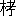

| 古事記 02 校註 古事記 | |
| 太 安万侶 & 稗田 阿礼 | |
| (2013) | |
古事記
校註 古事記
稗田の阿礼、太の安万侶
武田祐吉注釈校訂
古事記 上 つ卷 序幷はせたり
〔序文〕
〔過去の時代一 〕
臣
安萬侶
二
言
さく、それ混元既に凝りしかども、氣象いまだ敦
からざりしとき、名も無く爲
も無く、誰かその形を知らむ三
。然
ありて乾と坤と初めて分れて、參神造化の首
と作
り四
、陰と陽とここに開けて、二靈群品の祖となりたまひき五
。所以
に幽と顯と六
に出で入りて、日と月と目を洗ふに彰
れたまひ、海水
に浮き沈みて、神と祇と身を滌ぐに呈
れたまひき。故
、太素は杳冥
たれども、本つ教に因りて土
を孕
み島を産みたまひし時を識
り、元始は綿邈
たれども、先の聖に頼
りて神を生み人を立てたまひし世を察
にす。寔
に知る、鏡を懸け珠を吐きたまひて、百の王相續き、劒を喫
み蛇
を切りたまひて、萬の神蕃息
せしことを七
。安
の河
に議
りて天の下を平
け、小濱
に論
ひて國土を清めたまひき。ここを以ちて番
の仁岐
の命、初めて高千
の巓
に降
り八
、神倭
の天皇
九
、秋津島に經歴したまひき。化熊川より出でて、天の劒を高倉に獲、生尾徑
を遮
きりて、大き烏吉野に導きき。儛
を列ねて賊
を攘
ひ、歌を聞きて仇を伏しき。すなはち夢に覺
りて神祇を敬
ひたまひき、所以
に賢后と稱
す一〇
。烟を望みて黎元を撫でたまひき、今に聖帝と傳ふ一一
。境を定め邦を開きて、近
つ淡海
に制したまひ一二
、姓
を正し氏を撰みて、遠
つ飛鳥
に勒
したまひき一三
。歩と驟と、おのもおのも異に、文と質と同じからずといへども、古を稽
へて風猷
を既に頽
れたるに繩
したまひ、今を照して典教を絶えなむとするに補ひたまはずといふこと無かりき。
一 過ぎし時代のことを傳え、歴代の天皇これによつて徳教を正しくしたことを説く。
二 この序文は、天皇に奏上する文として書かれているので、この句をはじめすべてその詞づかいがなされる。安萬侶は、太の安麻呂、古事記の撰者、養老七年（七二三）歿。
三 混元以下、中國の宇宙創生説によつて書いている。萬物は形と氣とから成る。形は天地に分かれ、氣は陰陽に分かれる。
四 アメノミナカヌシの神、タカミムスビの神、カムムスビの神の三神が、物を造り出す最初の神となつた。
五 イザナギ、イザナミの二神が、萬物を生み出す親となつた。
六 幽と顯とに以下、イザナギ、イザナミ二神の事蹟。
七 鏡を懸け以下、天照らす大神とスサノヲの命との事蹟。
八 安の河に以下、ニニギの命の事蹟。
九 神武天皇。
一〇 崇神天皇。
一一 仁徳天皇。
一二 成務天皇。
一三 允恭天皇。
〔古事記の企畫一 〕
飛鳥
の清原
の大宮に太八洲
しらしめしし天皇二
の御世に曁
びて、潛龍元を體し、洊
雷期に應
へき。夢の歌を聞きて業を纂
がむことをおもほし、夜の水に投
りて基を承けむことを知らしたまひき。然れども天の時いまだ臻
らざりしかば、南の山に蟬のごとく蛻
け、人と事
と共に給
りて、東の國に虎のごとく歩みたまひき。皇輿たちまちに駕して、山川を凌ぎ度り、六師雷のごとく震ひ、三軍電のごとく逝きき。杖矛
威を擧げて、猛士烟のごとく起り、絳旗
兵を耀かして、凶徒瓦のごとく解けぬ。いまだ浹辰
を移さずして、氣沴
おのづから清まりぬ。すなはち牛を放ち馬を息
へ、愷悌
して華夏に歸り、旌
を卷き戈
を戢
め、儛詠
して都邑に停まりたまひき。歳
は大糜に次
り、月は夾鐘に踵
り三
、清原の大宮にして、昇りて天位に即
きたまひき。道は軒后に軼
ぎ、徳は周王に跨
えたまへり。乾符を握
りて六合を摠
べ、天統を得て八荒を包
ねたまひき。二氣の正しきに乘り、五行の序
を齊
へ、神
しき理を設
けて俗
を奬
め、英
れたる風
を敷きて國を弘めたまひき。重加
智の海は浩汗として、潭
く上古を探り、心の鏡は煒煌として、あきらかに先の代を覩たまふ。ここに天皇詔したまひしく、「朕聞かくは、諸家の賷
たる帝紀と本辭四
と既に正實に違ひ、多く虚僞を加ふといへり。今の時に當りて、その失を改めずは、いまだ幾年
を經ずして、その旨滅びなむとす。こはすなはち邦家の經緯、王化の鴻基
なり。故
ここに帝紀を撰録し、舊辭
を討覈
して、僞を削り實を定め、後葉
に流
へむと欲
ふ」と宣りたまひき。時に舍人
あり、姓は稗田
、名は阿禮
五
、年は二十八。人となり聰明にして、目に度
れば口に誦
み、耳に拂
るれば心に勒
す。すなはち阿禮に勅語して、帝皇の日繼
と先代の舊辭とを誦み習はしめたまひき。然れども運
移り世異にして、いまだその事を行ひたまはざりき。
一 天武天皇が帝紀と本辭とを正して稗田の阿禮に授けたことを説く。
二 天武天皇。
三 酉の年の二月に。
四 帝紀は歴代天皇の事を記した書、本辭は前の世の傳えごと。この二種が古事記の材料となつている。
五 アメノウズメの命の子孫。男子説と女子説とがある。
〔古事記の成立一 〕
伏して惟
ふに皇帝陛下二
、一を得て光宅
し、三に通じて亭育
したまふ。紫宸に御
して徳は馬の蹄
の極まるところに被
り、玄扈
に坐
して化は船の頭
の逮
るところを照したまふ。日浮びて暉
を重ね、雲散りて烟
まず。柯
を連ね穗を幷
はす瑞
、史
は書
すことを絶たず、烽
を列ね、譯
を重ぬる貢
、府
に空しき月無し。名は文命よりも高く、徳は天乙に冠
れりと謂ひつべし。ここに舊辭の誤り忤
へるを惜しみ、先紀の謬
り錯
れるを正さまくして、和銅四年三
九月十八日を以ちて、臣安萬侶に詔して、稗田の阿禮が誦める勅語の舊辭を撰録して、獻上せよと宣りたまへば、謹みて詔の旨に隨ひ、子細に採り摭
ひぬ。然れども上古の時、言と意と並
朴
にして、文を敷き句を構ふること、字にはすなはち難し。已
に訓に因りて述ぶれば、詞は心に逮
らず。全く音を以ちて連ぬれば、事の趣更に長し。ここを以ちて今或るは一句の中に、音と訓とを交へ用ゐ、或るは一事の内に、全く訓を以ちて録
しぬ四
。すなはち辭理の見え叵
きは、注を以ちて明にし、意況の解き易きは更に注
さず五
。また姓の日下
に、玖沙訶
と謂ひ、名の帶の字に多羅斯
といふ。かくの如き類は、本に隨ひて改めず六
。大抵記す所は、天地の開闢よりして、小治田
の御世七
に訖
ふ。故
天
の御中主
の神より以下
、日子波限建鵜草葺不合
の尊
より前
を上つ卷とし、神倭伊波禮毘古
の天皇より以下、品陀
の御世より前八
を中つ卷とし、大雀
の皇帝
九
より以下、小治田の大宮より前を下つ卷とし、幷はせて三つの卷に録
し、謹みて獻上
る。臣安萬侶、誠惶誠恐
、頓首頓首
す。
和銅五年正月二十八日
正五位の上勳五等 太 の朝臣 安萬侶
一 古事記成立の過程、文章の用意方針。内容の區分を説く。
二 元明天皇、女帝。奈良時代の最初の天皇。
三 七一一年。
四 漢字の表示する意義によつて書くのが、訓によるものであり、漢字の表示する音韻によつて書くのが、音によるものである。歌謠および特殊の詞句は音を用い、地名神名人名も音によるものが多い。外に漢字の訓を訓假字として使つたものが多少ある。
五 讀み方の注意、および内容に關して註が加えられている。
六 固有名詞の類に使用される特殊の文字は、もとのままで改めない。これは材料として文字になつていたものをも使つたことを語る。
七 推古天皇の時代（‐六二八）
八 神武天皇から應神天皇まで。
九 仁徳天皇。
〔一、伊耶那岐の命と伊耶那美の命〕
〔天地のはじめ〕
天地
の初發
の時、高天
の原
に成りませる神の名
は、天
の御中主
の神一
。次に高御産巣日
の神。次に神産巣日
の神二
。この三柱
の神は、みな獨神
三
に成りまして、身
を隱したまひき四
。
次に國稚
く、浮
かべる脂
の如くして水母
なす漂
へる時に、葦牙
五
のごと萠
え騰
る物に因りて成りませる神の名は、宇摩志阿斯訶備比古遲
の神六
。次に天
の常立
の神七
。この二柱
の神もみな獨神
に成りまして、身
を隱したまひき。
上の件
、五柱の神は別
天
つ神
。
次に成りませる神の名は、國の常立
の神。次に豐雲野
の神八
。この二柱の神も、獨神に成りまして、身を隱したまひき。次に成りませる神の名は、宇比地邇
の神。次に妹須比智邇
の神。次に角杙
の神。次に妹活杙
の神二柱
。次に意富斗能地
の神。次に妹大斗乃辨
の神。次に於母陀琉
の神。次に妹
阿夜訶志古泥
の神九
。次に伊耶那岐
の神。次に妹
伊耶那美
の神一〇
。
上の件、國の常立の神より下
、伊耶那美
の神より前
を、幷はせて神世
七代
とまをす。（上の二柱は、獨神おのもおのも一代とまをす。次に雙びます十神はおのもおのも二神を合はせて一代とまをす。）
一 中心、中央の思想の神格表現。空間の表示であるから活動を傳えない。
二 以上二神、生成の思想の神格表現。事物の存在を「生む」ことによつて説明する日本神話にあつて原動力である。タカミは高大、カムは神祕神聖の意の形容語。この二神の活動は、多く傳えられる。
三 對立でない存在。
四 天地の間に溶合した。
五 葦の芽。十分に春になつたことを感じている。
六 葦牙の神格化。神名は男性である。
七 天の確立を意味する神名。
八 名義不明。以下神名によつて、土地の成立、動植物の出現、整備等を表現するらしい。
九 驚きを表現する神名。
一〇 以上二神、誘い出す意味の表現。
〔島々の生成〕
ここに天つ神諸
の命
以
ちて一
、伊耶那岐
の命伊耶那美
の命の二柱の神に詔
りたまひて、この漂へる國を修理
め固め成せと、天
の沼矛
を賜ひて、言依
さしたまひき二
。かれ二柱の神、天
の浮橋
三
に立たして、その沼矛
を指
し下
して畫きたまひ、鹽こをろこをろに畫き鳴
して四
、引き上げたまひし時に、その矛の末
より滴
る鹽の積りて成れる島は、淤能碁呂
島五
なり。その島に天降
りまして、天
の御柱
を見立て六
八尋殿
を見立てたまひき。
ここにその妹伊耶那美
の命に問ひたまひしく、「汝
が身はいかに成れる」と問ひたまへば、答へたまはく、「吾
が身は成り成りて、成り合はぬところ一處あり」とまをしたまひき。ここに伊耶那岐
の命詔
りたまひしく、「我が身は成り成りて、成り餘れるところ一處あり。故
この吾が身の成り餘れる處を、汝が身の成り合はぬ處に刺し塞
ぎて、國土
生み成さむと思ほすはいかに」とのりたまへば、伊耶那美
の命答へたまはく、「しか善けむ」とまをしたまひき。ここに伊耶那岐の命詔りたまひしく、「然らば吾
と汝
と、この天の御柱を行き りあひて、美斗
の麻具波比
せむ七
」とのりたまひき。かく期
りて、すなはち詔りたまひしく、「汝は右より
り逢へ、我
は左より
り逢はむ」とのりたまひて、約
り竟
へて
りたまふ時に、伊耶那美の命まづ「あなにやし、えをとこを八
」とのりたまひ、後に伊耶那岐の命「あなにやし、え娘子
を」とのりたまひき。おのもおのものりたまひ竟
へて後に、その妹に告
りたまひしく、「女人
先立
ち言へるはふさはず」とのりたまひき。然れども隱處
に興
して子
水蛭子
を生みたまひき九
。この子は葦船
に入れて流し去
りつ一〇
。次に淡島
一一
を生みたまひき。こも子の數に入らず。
りあひて、美斗
の麻具波比
せむ七
」とのりたまひき。かく期
りて、すなはち詔りたまひしく、「汝は右より
り逢へ、我
は左より
り逢はむ」とのりたまひて、約
り竟
へて
りたまふ時に、伊耶那美の命まづ「あなにやし、えをとこを八
」とのりたまひ、後に伊耶那岐の命「あなにやし、え娘子
を」とのりたまひき。おのもおのものりたまひ竟
へて後に、その妹に告
りたまひしく、「女人
先立
ち言へるはふさはず」とのりたまひき。然れども隱處
に興
して子
水蛭子
を生みたまひき九
。この子は葦船
に入れて流し去
りつ一〇
。次に淡島
一一
を生みたまひき。こも子の數に入らず。
ここに二柱の神議
りたまひて、「今、吾が生める子ふさはず。なほうべ天つ神の御所
に白
さな」とのりたまひて、すなはち共に參
ゐ上りて、天つ神の命
を請ひたまひき。ここに天つ神の命
以ちて、太卜
に卜
へて一二
のりたまひしく、「女
の先立ち言ひしに因りてふさはず、また還り降
りて改め言へ」とのりたまひき。
かれここに降りまして、更にその天の御柱を往き
りたまふこと、先の如くなりき。ここに伊耶那岐
の命、まづ「あなにやし、えをとめを」とのりたまひ、後に妹伊耶那美
の命、「あなにやし、えをとこを」とのりたまひき。かくのりたまひ竟へて、御合
ひまして、子
淡道
の穗
の狹別
の島一三
を生みたまひき。次に伊豫
の二名
の島一四
を生みたまひき。この島は身一つにして面
四つあり。面ごとに名あり。かれ伊豫の國を愛比賣
といひ、讚岐
の國を飯依比古
といひ、粟
の國を、大宜都比賣
といひ、土左
の國を建依別
といふ。次に隱岐
の三子
の島を生みたまひき。またの名は天
の忍許呂別
。次に筑紫
の島を生みたまひき。この島も身一つにして面四つあり。面ごとに名あり。かれ筑紫の國一五
を白日別
といひ、豐
の國
を豐日別
といひ、肥
の國
を建日向日豐久士比泥別
一六
といひ、熊曾
の國一七
を建日別
といふ。次に伊岐
の島を生みたまひき。またの名は天比登都柱
といふ。次に津島
一八
を生みたまひき。またの名は天
の狹手依比賣
といふ。次に佐渡
の島を生みたまひき。次に大倭豐秋津
島一九
を生みたまひき。またの名は天
つ御虚空豐秋津根別
といふ。かれこの八島のまづ生まれしに因りて、大八島
國といふ。
然ありて後還ります時に、吉備
の兒島
を生みたまひき。またの名は建日方別
といふ。次に小豆島
を生みたまひき。またの名は大野手比賣
といふ。次に大島
二〇
を生みたまひき。またの名は大多麻流別
といふ。次に女島
二一
を生みたまひき。またの名は天一根
といふ。次に知訶
の島二二
を生みたまひき。またの名は天
の忍男
といふ。次に兩兒
の島二三
を生みたまひき。またの名は天
の兩屋
といふ。（吉備の兒島より天の兩屋の島まで幷はせて六島。）
一 天神の命によつて若い神が降下するのは日本神話の基礎形式の一。祭典の思想に根據を有している。
二 りつぱな矛を賜わつて命を下した。
三 天からの通路である空中の階段。
四 海水をゴロゴロとかきまわして。
五 大阪灣内にある島。今の何島か不明。
六 家屋の中心となる神聖な柱を立てた。
七 結婚しよう。
八 アナニヤシ、感動の表示。エヲトコヲ、愛すべき男だ。ヲは感動の助詞。
九 ヒルのようなよくないものが、不合理な婚姻によつて生まれたとする。
一〇 蟲送りの行事。
一一 四國の阿波の方面の名。この部分は阿波方面に對してわるい感情を表示する。
一二 古代の占法は種々あるが、鹿の肩骨を燒いてヒビの入り方によつて占なうのを重んじ、これをフトマニといつた。これは後に龜の甲を燒くことに變わつた。
一三 淡路島の別名。ワケは若い者の義。
一四 四國の稱。伊豫の方面からいう。
一五 北九州。
一六 誤傳があるのだろう。肥の國（肥前肥後）の外に、日向の別名があげられているのだろうというが、日向を入れると五國になつて、面四つありというのに合わない。
一七 クマ（肥後南部）とソ（薩摩）とを合わせた名。
一八 對馬島。
一九 本州。
二〇 山口縣の屋代島だろう。
二一 大分縣の姫島だろう。
二二 長崎縣の五島。
二三 所在不明。
〔神々の生成〕
既に國を生み竟
へて、更に神を生みたまひき。かれ生みたまふ神の名は、大事忍男
の神。次に石土毘古
の神を生みたまひ、次に石巣比賣
の神を生みたまひ、次に大戸日別
の神を生みたまひ、次に天
の吹男
の神を生みたまひ、次に大屋毘古
の神を生みたまひ一
、次に風木津別
の忍男
の神二
を生みたまひ、次に海
の神名は大綿津見
の神を生みたまひ、次に水戸
の神三
名は速秋津日子
の神、次に妹速秋津比賣
の神を生みたまひき。（大事忍男の神より秋津比賣の神まで幷はせて十神。）
この速秋津日子
、速秋津比賣
の二神
、河海によりて持ち別けて生みたまふ神の名四
は、沫那藝
の神。次に沫那美
の神。次に頰那藝
の神。次に頰那美
の神。次に天
の水分
の神。次に國
の水分
の神。次に天
の久比奢母智
の神、次に國
の久比奢母智
の神。（沫那藝の神より國の久比奢母智の神まで幷はせて八神。）
次に風の神名は志那都比古
の神五
を生みたまひ、次に木の神名は久久能智
の神六
を生みたまひ、次に山の神名は大山津見
の神を生みたまひ、次に野の神名は鹿屋野比賣
の神を生みたまひき。またの名は野椎
の神といふ。（志那都比古の神より野椎まで幷はせて四神。）
この大山津見の神、野椎の神の二神
、山野によりて持ち別けて生みたまふ神の名は、天の狹土
の神。次に國の狹土の神。次に天の狹霧
の神。次に國の狹霧の神。次に天の闇戸
の神。次に國の闇戸の神。次に大戸或子
の神。次に大戸或女
の神七
。（天の狹土の神より大戸或女の神まで幷はせて八神。）
次に生みたまふ神の名は、鳥の石楠船
の神八
、またの名は天の鳥船
といふ。次に大宜都比賣
の神九
を生みたまひ、次に火
の夜藝速男
の神を生みたまひき。またの名は火
の炫毘古
の神といひ、またの名は火
の迦具土
の神といふ。この子を生みたまひしによりて、御陰
やかえて病
み臥
せり。たぐり一〇
に生
りませる神の名は金山毘古
の神。次に金山毘賣
の神。次に屎
に成りませる神の名は、波邇夜須毘古
の神。次に波邇夜須毘賣
の神一一
。次に尿
に成りませる神の名は彌都波能賣
の神一二
。次に和久産巣日
の神一三
。この神の子は豐宇氣毘賣
の神一四
といふ。かれ伊耶那美
の神は、火の神を生みたまひしに因りて、遂に神避
りたまひき。（天の鳥船より豐宇氣毘賣の神まで幷はせて八神。）およそ伊耶那岐
伊耶那美の二神、共に生みたまふ島壹拾
四島
、神參拾
五神
一五
。（こは伊耶那美の神、いまだ神避りまさざりし前に生みたまひき。ただ意能碁呂島は生みたまへるにあらず、また蛭子と淡島とは子の例に入らず。）
一 以上の神の系列は、家屋の成立を語るものと解せられる。
二 風に對して堪えることを意味するらしい。
三 河口など、海に對する出入口の神。
四 海と河とで分擔して生んだ神。以下水に關する神。アワナギ、アワナミは、動く水の男女の神、ツラナギ、ツラナミは、靜水の男女の神。ミクマリは、水の配分。クヒザモチは水を汲む道具。
五 息の長い男の義。
六 木の間を潛る男の義。
七 山の神と野の神とが生んだ諸神の系列は、山野に霧がかかつて迷うことを表現する。
八 鳥の如く早く輕く行くところの、石のように堅いクスノキの船。
九 穀物の神。この神に關する神話が三五頁［＃「三五頁」は「須佐の男の神」の「穀物の種」］
にある。
一〇 吐瀉物。以下排泄物によつて生まれた神は、火を防ぐ力のある神である。
一一 埴土の男女の神。
一二 水の神。
一三 若い生産力の神。
一四 これも穀物の神。以上の神の系列は、野を燒いて耕作する生活を語る。
一五 實數四十神だが、男女一對の神を一として數えれば三十五になる。
〔黄泉 の國〕
かれここに伊耶那岐の命の詔
りたまはく、「愛
しき我
が汝妹
の命を、子の一木
に易
へつるかも」とのりたまひて、御枕方
に匍匐
ひ御足方
に匍匐ひて、哭
きたまふ時に、御涙に成りませる神は、香山
一
の畝尾
二
の木のもとにます、名は泣澤女
の神三
。かれその神避りたまひし伊耶那美の神は、出雲の國と伯伎
の國との堺なる比婆
の山四
に葬
めまつりき。ここに伊耶那岐の命、御佩
の十拳
の劒五
を拔きて、その子迦具土
の神の頸
を斬りたまひき。ここにその御刀
の前
に著ける血、湯津石村
六
に走
りつきて成りませる神の名は、石拆
の神。次に根拆
の神。次に石筒
の男
の神。次に御刀の本に著ける血も、湯津石村に走りつきて成りませる神の名は、甕速日
の神。次に樋速日
の神。次に建御雷
の男
の神。またの名は建布都
の神、またの名は豐布都
の神三神
。次に御刀の手上
に集まる血、手俣
より漏
き出
て成りませる神の名は、闇淤加美
の神。次に闇御津羽
の神。（上の件、石拆の神より下、闇御津羽の神より前、幷はせて八神は、御刀に因りて生りませる神なり。）
殺さえたまひし迦具土
の神の頭に成りませる神の名は、正鹿山津見
の神七
。次に胸に成りませる神の名は、淤縢山津見
の神。次に腹に成りませる神の名は、奧山津見
の神。次に陰
に成りませる神の名は、闇山津見
の神。次に左の手に成りませる神の名は、志藝山津見
の神。次に右の手に成りませる神の名は、羽山津美
の神。次に左の足に成りませる神の名は、原山津見
の神。次に右の足に成りませる神の名は、戸山津見
の神。（正鹿山津見の神より戸山津見の神まで幷はせて八神。）かれ斬りたまへる刀の名は、天の尾羽張
といひ八
、またの名は伊都
の尾羽張といふ。
ここにその妹伊耶那美の命を相見まくおもほして、黄泉國
九
に追ひ往
でましき。ここに殿
の縢
戸一〇
より出で向へたまふ時に、伊耶那岐の命語らひて詔りたまひしく、「愛
しき我
が汝妹
の命、吾と汝と作れる國、いまだ作り竟
へずあれば、還りまさね」と詔りたまひき。ここに伊耶那美の命の答へたまはく、「悔
しかも、速
く來まさず。吾は黄泉戸喫
一一
しつ。然れども愛しき我が汝兄
の命、入り來ませること恐
し。かれ還りなむを。しまらく黄泉神
と論
はむ。我をな視たまひそ」と、かく白して、その殿内
に還り入りませるほど、いと久しくて待ちかねたまひき。かれ左の御髻
に刺させる湯津爪櫛
一二
の男柱一箇
取り闕
きて、一
つ火
燭
して入り見たまふ時に、蛆
たかれころろぎて一三
、頭には大雷
居り、胸には火
の雷居り、腹には黒雷居り、陰
には拆
雷居り、左の手には若
雷居り、右の手には土
雷居り、左の足には鳴
雷居り、右の足には伏
雷居り、幷はせて八くさの雷神成り居りき。
ここに伊耶那岐の命、見
畏
みて逃げ還りたまふ時に、その妹伊耶那美の命、「吾に辱
見せつ」と言ひて、すなはち黄泉醜女
一四
を遣して追はしめき。ここに伊耶那岐の命、黒御鬘
一五
を投げ棄
てたまひしかば、すなはち蒲子
一六
生
りき。こを摭
ひ食
む間に逃げ行
でますを、なほ追ひしかば、またその右の御髻に刺させる湯津爪櫛を引き闕きて投げ棄
てたまへば、すなはち笋
一七
生
りき。こを拔き食
む間に、逃げ行でましき。また後にはかの八くさの雷神に、千五百
の黄泉軍
を副
へて追はしめき。ここに御佩
の十拳
の劒を拔きて、後手
に振
きつつ逃げ來ませるを、なほ追ひて黄泉比良坂
一八
の坂本に到る時に、その坂本なる桃
の子
三つをとりて持ち撃ちたまひしかば、悉に逃げ返りき。ここに伊耶那岐の命、桃
の子
に告
りたまはく、「汝
、吾を助けしがごと、葦原の中つ國にあらゆる現
しき青人草一九
の、苦
き瀬に落ちて、患惚
まむ時に助けてよ」とのりたまひて、意富加牟豆美
の命といふ名を賜ひき。最後
にその妹伊耶那美の命、身
みづから追ひ來ましき。ここに千引の石
をその黄泉比良坂
に引き塞
へて、その石を中に置きて、おのもおのも對
き立たして、事戸
を度
す時二〇
に、伊耶那美の命のりたまはく、「愛
しき我
が汝兄
の命、かくしたまはば、汝
の國の人草、一日
に千頭
絞
り殺さむ」とのりたまひき。ここに伊耶那岐の命、詔りたまはく、「愛しき我が汝妹
の命、汝
然したまはば、吾
は一日に千五百
の産屋
を立てむ」とのりたまひき。ここを以ちて一日にかならず千人
死に、一日にかならず千五百人なも生まるる。
かれその伊耶那美の命に號
けて黄泉津
大神といふ。またその追ひ及
きしをもちて、道敷
の大神二一
ともいへり。またその黄泉
の坂に塞
れる石は、道反
の大神ともいひ、塞
へます黄泉戸
の大神ともいふ。かれそのいはゆる黄泉比良坂
は、今、出雲の國の伊賦夜
坂二二
といふ。
一 奈良縣磯城郡の天の香具山。神話に實在の地名が出る場合は、大抵その神話の傳えられている地方を語る。
二 うねりのある地形の高み。
三 香具山の麓にあつた埴安の池の水神。泣澤の森そのものを神體としている。
四 廣島縣比婆郡に傳説地がある。
五 十つかみある長い劒。
六 神聖な岩石。以下神の系列によつて鐵鑛を火力で處理して刀劒を得ることを語る。イハサクの神からイハヅツノヲの神まで岩石の神靈。ミカハヤビ、ヒハヤビは火力。タケミカヅチノヲは劒の威力。クラオカミ、クラミツハは水の神靈。クラは溪谷。御刀の手上は、劒のつか。タケミカヅチノヲは五六頁［＃「五六頁」は「天照らす大御神と大國主の神」の「國讓り」］
、七四頁［＃「七四頁」は「神武天皇」の「熊野より大和へ」］
に神話がある。
七 以下各種の山の神。
八 幅の廣い劒の義。水の神と解せられ、五六頁［＃「五六頁」は「天照らす大御神と大國主の神」の「國讓り」］
に神話がある。別名のイツは、威力の意。
九 地下にありとされる空想上の世界。黄泉の文字は漢文から來る。
一〇 宮殿の閉してある戸。殿の騰戸とする傳えもある。
一一 黄泉の國の火で作つた食物を食つたので黄泉の人となつてしまつた。同一の火による團結の思想である。
一二 髮を左右に分けて耳の邊で輪にする。それにさした神聖な櫛。櫛は竹で作り魔よけとして女がさしてくれる。
一三 蛆がわいてゴロゴロ鳴つて。トロロギテとする傳えがあるが誤り。
一四 黄泉の國の見にくいばけものの女。
一五 植物を輪にして魔よけとして髮の上にのせる。
一六 山葡萄。
一七 筍。
一八 黄泉の國の入口にある坂。黄泉の國に向つて下る。墳墓の構造から來ている。
一九 現實にある人間。
二〇 日本書紀には絶妻の誓とある。言葉で戸を立てる。別れの言葉をいう。
二一 道路を追いかける神。
二二 島根縣八束郡。
〔身禊〕
ここを以ちて伊耶那岐の大神の詔りたまひしく、「吾
はいな醜
め醜めき穢
き國一
に到りてありけり。かれ吾は御身
の禊
せむ」とのりたまひて、竺紫
の日向
の橘の小門
の阿波岐
原二
に到りまして、禊
ぎ祓
へたまひき。かれ投げ棄
つる御杖に成りませる神の名は、衝
き立
つ船戸
の神三
。次に投げ棄つる御帶に成りませる神の名は、道
の長乳齒
の神四
。次に投げ棄つる御囊
に成りませる神の名は、時量師
の神五
。次に投げ棄つる御衣
に成りませる神の名は、煩累
の大人
の神六
。次に投げ棄つる御褌
に成りませる神の名は、道俣
の神七
。次に投げ棄つる御冠
に成りませる神の名は、飽咋
の大人
の神八
。次に投げ棄つる左の御手の手纏
に成りませる神の名は、奧疎
の神九
。次に奧津那藝佐毘古
の神。次に奧津甲斐辨羅
の神。次に投げ棄つる右の御手の手纏に成りませる神の名は、邊疎
の神。次に邊津那藝佐毘古
の神。次に邊津甲斐辨羅
の神。
右の件
、船戸
の神より下、邊津甲斐辨羅の神より前、十二神
は、身に著
けたる物を脱ぎうてたまひしに因りて、生
りませる神なり。
ここに詔りたまはく、「上
つ瀬
は瀬速し、下
つ瀬は弱し」と詔
りたまひて、初めて中
つ瀬に降
り潛
きて、滌ぎたまふ時に、成りませる神の名は、八十禍津日
の神一〇
。次に大禍津日
の神。この二神
は、かの穢き繁
き國に到りたまひし時の、汚垢
によりて成りませる神なり。次にその禍
を直さむとして成りませる神の名は、神直毘
の神。次に大直毘
の神一一
。次に伊豆能賣
一二
。次に水底
に滌ぎたまふ時に成りませる神の名は、底津綿津見
の神一三
。次に底筒
の男
の命。中に滌ぎたまふ時に成りませる神の名は、中津綿津見
の神。次に中筒
の男
の命。水の上に滌ぎたまふ時に成りませる神の名は、上津綿津見
の神。次に上筒
の男
の命。この三柱の綿津見の神は、阿曇
の連
等が祖神
と齋
く神なり。かれ阿曇の連等は、その綿津見の神の子宇都志日金拆
の命の子孫
なり。その底筒の男の命、中筒の男の命、上筒の男の命三柱の神は、墨
の江
の三前の大神一四
なり。
ここに左の御目を洗ひたまふ時に成りませる神の名は、天照
らす大御神
。次に右の御目を洗ひたまふ時に成りませる神の名は、月讀
の命一五
。次に御鼻を洗ひたまふ時に成りませる神の名は、建速須佐
の男
の命一六
。
右の件、八十禍津日
の神より下、速須佐
の男
の命より前、十柱の神一七
は、御身を滌ぎたまひしに因りて生
れませる神なり。
この時伊耶那岐の命大
く歡ばして詔りたまひしく、「吾は子を生み生みて、生みの終
に、三柱の貴子
を得たり」と詔りたまひて、すなはちその御頸珠
の玉の緒ももゆらに取りゆらかして一八
、天照らす大御神に賜ひて詔りたまはく、「汝が命は高天の原を知らせ」と、言依
さして賜ひき。かれその御頸珠の名を、御倉板擧
の神一九
といふ。次に月讀の命に詔りたまはく、「汝が命は夜
の食
國二〇
を知らせ」と、言依さしたまひき。次に建速須佐
の男
の命に詔りたまはく、「汝が命は海原を知らせ」と、言依さしたまひき。
かれおのもおのもよさし賜へる命のまにま知らしめす中に、速須佐の男の命、依さしたまへる國を知らさずて、八拳須
心前
に至るまで、啼きいさちき二一
。その泣く状
は、青山は枯山なす泣き枯らし河海
は悉
に泣き乾
しき。ここを以ちて惡
ぶる神の音なひ二二
、狹蠅
なす皆滿
ち、萬の物の妖
悉に發
りき。かれ伊耶那岐の大御神、速須佐の男の命に詔りたまはく、「何とかも汝
は言依させる國を治
らさずて、哭きいさちる」とのりたまへば、答へ白さく、「僕
は妣
の國根
の堅洲
國二三
に罷らむとおもふがからに哭く」とまをしたまひき。ここに伊耶那岐の大御神、大
く忿らして詔りたまはく、「然らば汝はこの國にはな住
まりそ」と詔りたまひて、すなはち神逐
ひに逐
ひたまひき二四
。かれその伊耶那岐の大神は、淡路の多賀
二五
にまします。
一 大變見にくいきたない世界。
二 九州の諸地方に傳説地があるが不明。アハギは樹名だろうが不明。日本書紀に檍原と書く。
三 道路に立つて惡魔の來るのを追い返す神。柱の形であるから杖によつて成つたという。
四 道路の長さの神。道路そのものに威力ありとする思想。
五 時置師の神とも傳える。時間のかかる意であろう。
六 疲勞の神靈。
七 二股になつている道路の神。
八 口をあけて食う神靈。魔物をである。
九 以下は禊をする土地の説明。
一〇 災禍の神靈。
一一 災禍を拂つてよくする思想の神格化。曲つたものをまつすぐにするという形で表現している。
一二 威力のある女。巫女である。
一三 以下六神、海の神。安曇系と住吉系と二種の神話の混合。
一四 住吉神社の祭神。西方の海岸にこの神の信仰がある。
一五 月の神、男神。日本書紀にはこの神が保食
の神（穀物の神）を殺す神話がある。
一六 暴風の神であり出雲系の英雄でもある。
一七 實數十四神。イヅノメと海神の一組三神とを除けば十神になる。
一八 頸にかけた珠の緒もゆらゆらとゆり鳴らして。
一九 棚の上に安置してある神靈の義。
二〇 夜の領國。神話は傳わらない。
二一 長い髯が胸元までのびるまで泣きわめいた。以下暴風の性質にもとづく敍述。
二二 亂暴な神の物音。暴風のさわぎ。
二三 死んだ母の國。イザナミの神の行つている黄泉の國である地下の堅い土の世界。暴風がみずから地下へ行こうと言つたとする。
二四 神が追い拂つた。暴風を父の神が放逐したとする思想。
二五 眞福寺本には淡海の多賀とする。イザナギの命の信仰は、淡路方面にひろがつていた。
〔二、天照らす大神と須佐の男の命〕
〔誓約 〕
かれここに速須佐の男の命、言
したまはく、「然らば天照らす大御神にまをして罷りなむ」と言
して、天にまゐ上りたまふ時に、山川悉に動
み國土皆震
りき一
。ここに天照らす大御神聞き驚かして、詔りたまはく、「我が汝兄
の命の上り來ます由
は、かならず善
しき心ならじ。我が國を奪はむとおもほさくのみ」と詔りたまひて、すなはち御髮
を解きて、御髻
に纏かして二
、左右の御髻にも、御鬘
にも、左右の御手にも、みな八尺
の勾璁
の五百津
の御統
の珠三
を纏き持たして、背
には千入
の靫
四
を負ひ、平
五
には五百入
の靫
を附け、また臂
には稜威
の高鞆
六
を取り佩ばして、弓腹
振り立てて、堅庭は向股
に蹈みなづみ、沫雪なす蹶
ゑ散
して、稜威の男建
七
、蹈み建
びて、待ち問ひたまひしく、「何とかも上り來ませる」と問ひたまひき。ここに速須佐の男の命答へ白したまはく、「僕
は邪
き心無し。ただ大御神の命もちて、僕が哭きいさちる事を問ひたまひければ、白しつらく、僕は妣
の國に往
なむとおもひて哭くとまをししかば、ここに大御神汝
はこの國にな住
まりそと詔りたまひて、神逐
ひ逐ひ賜ふ。かれ罷りなむとする状
をまをさむとおもひて參ゐ上りつらくのみ。異
しき心無し」とまをしたまひき。ここに天照らす大御神詔りたまはく、「然らば汝
の心の清明
きはいかにして知らむ」とのりたまひしかば、ここに速須佐の男の命答へたまはく、「おのもおのも誓
ひて子生まむ八
」とまをしたまひき。かれここにおのもおのも天の安の河九
を中に置きて誓
ふ時に、天照らす大御神まづ建速須佐の男の命の佩
かせる十拳
の劒
を乞ひ度
して、三段
に打ち折りて、ぬなとももゆらに一〇
、天
の眞名井
一一
に振り滌ぎて、さ齧
みに齧
みて、吹き棄つる氣吹
の狹霧
に成りませる神の御名一二
は、多紀理毘賣
の命、またの御名は奧津島比賣
の命といふ。次に市寸島比賣
の命、またの御名は狹依毘賣
の命といふ。次に多岐都比賣
の命一三
三柱
。速須佐の男の命、天照らす大御神の左の御髻
に纏
かせる八尺
の勾珠
の五百津
の御統
の珠を乞ひ度して、ぬなとももゆらに、天
の眞名井に振り滌ぎて、さ齧みに齧みて、吹き棄つる氣吹の狹霧に成りませる神の御名は、正勝吾勝勝速日
天
の忍穗耳
の命一四
。また右の御髻に纏かせる珠を乞ひ度して、さ齧みに齧みて、吹き棄つる氣吹の狹霧に成りませる神の御名は、天の菩卑
の命一五
。また御鬘
に纏かせる珠を乞ひ度して、さ齧みに齧みて、吹き棄つる氣吹の狹霧に成りませる神の御名は、天津日子根
の命一六
。また左の御手に纏
かせる珠を乞ひ度して、さ齧みに齧みて、吹き棄つる氣吹の狹霧に成りませる神の御名は、活津日子根
の命。また右の御手に纏かせる珠を乞ひ度して、さ齧みに齧みて、吹き棄つる氣吹の狹霧に成りませる神の御名は、熊野久須毘
の命一七
（幷はせて五柱。）
ここに天照らす大御神、速須佐
の男の命に告
りたまはく、「この後に生
れませる五柱の男子
は、物實
我が物に因りて成りませり。かれおのづから吾が子なり。先に生れませる三柱の女子
は、物實汝
の物に因りて成りませり。かれすなはち汝の子なり」と、かく詔
り別けたまひき。
かれその先に生れませる神、多紀理毘賣
の命は、胷形
の奧津
宮一八
にます。次に市寸島比賣
の命は胷形の中津
宮にます一九
。次に田寸津比賣
の命は、胷形の邊津
宮にます。この三柱の神は、胷形の君等がもち齋
く三前
の大神なり。
かれこの後に生
れませる五柱の子の中に、天の菩比
の命の子建比良鳥
の命、こは出雲の國の造
、无耶志
の國の造、上
つ菟上
の國の造、下
つ菟上
の國の造、伊自牟
の國の造、津島
の縣
の直
、遠江
の國の造等が祖
なり。次に天津日子根
の命は、凡川内
の國の造、額田部
の湯坐
の連
、木
の國の造、倭
の田中の直
、山代
の國の造、馬來田
の國の造、道
の尻岐閇
の國の造、周芳
の國の造、倭
の淹知
の造
、高市
の縣主
、蒲生
の稻寸
、三枝部
の造等が祖なり。
一 暴風の襲來する有樣で、歴史的には出雲族の襲來を語る。
二 男裝される。
三 大きな曲玉の澤山を緒に貫いたもの。曲玉は、玉の威力の發動の思想を表示する。
四 千本の矢を入れて背負う武具。
五 胸のたいらな所。
六 威勢のよい音のする鞆。トモは皮で球形に作り左の手にはめて弓を引いた時にそれに當つて音が立つようにする武具。
七 威勢のよい叫び。
八 神に誓つて神意を伺う儀式。種々の方法があり夢が多く使われる。ここは生まれた子の男女の別によつて神意を伺う。
九 高天の原にありとする川。滋賀縣の野洲
川だともいう。明日香川の古名か。
一〇 玉の音もさやかに。
一一 神聖な水の井。
一二 以上の行爲は、身を清めるために行う。劒を振つて水を清めてその水を口に含んで吐く霧の中に神靈が出現するとする。以下は劒が玉に變つているだけ。
一三 以上の三女神は福岡縣の宗像
神社の神。
一四 皇室の御祖先と傳える。
一五 出雲氏等の祖先。
一六 主として近畿地方に居住した諸氏の祖先。各種の系統の祖先が、この行事によつて出現したとするのは民族が同一祖から出たとする思想である。
一七 出雲の國の熊野神社の神。
一八 福岡縣の海上日本海の沖の島にある。
一九 福岡縣の海上大島にある。
〔天の岩戸〕
ここに速須佐の男の命、天照らす大御神に白したまひしく、「我が心清明
ければ我が生める子手弱女
を得つ一
。これに因りて言はば、おのづから我勝ちぬ」といひて、勝さび二
に天照らす大御神の營田
の畔
離ち、その溝埋
み、またその大嘗
聞しめす殿に屎
まり散らしき三
。かれ然すれども、天照らす大御神は咎めずて告りたまはく、「屎
なすは醉
ひて吐き散らすとこそ我が汝兄
の命かくしつれ。また田の畔
離ち溝埋
むは、地
を惜
しとこそ我が汝兄
の命かくしつれ」と詔り直したまへども、なほその惡
ぶる態
止まずてうたてあり。天照らす大御神の忌服屋
四
にましまして神御衣
織らしめたまふ時に、その服屋
の頂
を穿ちて、天の斑馬
を逆剝
ぎに剝ぎて墮し入るる五
時に、天の衣織女
見驚きて梭
六
に陰上
を衝きて死にき。かれここに天照らす大御神見
畏
みて、天の石屋戸
七
を開きてさし隱
りましき。ここに高天
の原皆暗く、葦原
の中つ國悉に闇し。これに因りて、常夜
往く八
。ここに萬
の神の聲
は、さ蠅
なす滿ち、萬の妖
悉に發
りき。ここを以ちて八百萬の神、天の安の河原に神集
ひ集
ひて、高御産巣日
の神の子思金
の神九
に思はしめて、常世
の長鳴
鳥一〇
を集
へて鳴かしめて、天の安の河の河上の天の堅石
を取り、天の金山
の鐵
を取りて、鍛人
天津麻羅
を求
ぎて、伊斯許理度賣
の命に科
せて、鏡を作らしめ、玉の祖
の命に科せて八尺の勾
璁の五百津
の御統
の珠を作らしめて天の兒屋
の命布刀玉
の命を召
びて、天の香山
の眞男鹿
の肩を内拔
きに拔きて一一
、天の香山の天の波波迦
一二
を取りて、占合
まかなはしめて一三
、天の香山の五百津の眞賢木
を根掘
じにこじて一四
、上枝
に八尺の勾璁の五百津の御統の玉を取り著
け、中つ枝に八尺
の鏡を取り繫
け、下枝
に白和幣
青和幣
を取り垂
でて一五
、この種種
の物は、布刀玉の命太御幣
と取り持ちて、天の兒屋の命太祝詞
言禱
ぎ白して、天の手力男
の神一六
、戸の掖
に隱り立ちて、天の宇受賣
の命、天の香山の天の日影
を手次
に繫
けて、天の眞拆
を鬘
として一七
、天の香山の小竹葉
を手草
に結ひて一八
、天の石屋戸
に覆槽
伏せて一九
蹈みとどろこし、神懸
りして、胷乳
を掛き出で、裳
の緒
を陰
に押し垂りき。ここに高天の原動
みて八百萬の神共に咲
ひき。
ここに天照らす大御神怪
しとおもほして、天の石屋戸を細
に開きて内より告
りたまはく、「吾
が隱
りますに因りて、天の原おのづから闇
く、葦原の中つ國も皆闇けむと思ふを、何
とかも天の宇受賣
は樂
し、また八百萬の神諸
咲
ふ」とのりたまひき。ここに天の宇受賣白さく、「汝命
に勝
りて貴
き神いますが故に、歡喜
び咲
ひ樂
ぶ」と白しき。かく言ふ間に、天の兒屋の命、布刀玉の命、その鏡をさし出でて、天照らす大御神に見せまつる時に、天照らす大御神いよよ奇
しと思ほして、やや戸より出でて臨みます時に、その隱
り立てる手力男の神、その御手を取りて引き出だしまつりき。すなはち布刀玉の命、尻久米
繩二〇
をその御後方
に控
き度して白さく、「ここより内にな還り入りたまひそ」とまをしき。かれ天照らす大御神の出でます時に、高天の原と葦原の中つ國とおのづから照り明りき。ここに八百萬の神共に議
りて、速須佐の男の命に千座
の置戸
を負せ二一
、また鬚
と手足の爪とを切り、祓へしめて、神逐
ひ逐ひき。
一 自分が清らかだから女子を得たとする。日本書紀では反對に、男子が生まれたらスサノヲの命が潔白であるとしている。古事記の神話が女子によつて語られたとする證明になるところ。オシホミミの命の出現によつて勝つたとするのが原形だろう。
二 勝にまかせて。
三 田の畦を破り溝を埋め、また御食事をなされる宮殿に不淨の物をまき散らすので、皆暴風の災害である。
四 清淨な機おり場。
五 これも暴風の災害。
六 機おる時に横絲を卷いて縱絲の中をくぐらせる道具。
七 イハは堅固である意を現すためにつけていう。墳墓の入口の石の戸とする説もある。
八 永久の夜が續く。
九 思慮智惠の神格化。
一〇 鷄。常世は、恒久の世界の義で、空想上の世界から轉じて海外をいう。
一一 香具山の鹿の肩の骨をそつくり拔いて。
一二 樹名、カバノキ。これで鹿骨を燒く。
一三 占いをし適合させて。卜占によつて祭の實行方法を定める。
一四 香具山の繁つた木を根と共に掘つて。マサカキは繁つた常緑木で、今いうツバキ科の樹名サカキに限らない。神聖な清淨な木を引く意味で、山から採つてくる。
一五 サカキに玉と鏡と麻楮をつけるのは、神靈を招く意の行事で、他の例では劒をもつける。シラニギテはコウゾ、アヲニギテはアサ。
一六 力の神格。
一七 ヒカゲカズラを手次
にかけ、マサキノカズラをカヅラにする。神がかりをするための用意。
一八 小竹の葉をつけて手で持つ。
一九 中のうつろの箱のようなものを伏せて。
二〇 シメ繩。出入禁止の意の表示。
二一 罪を犯した者に多くの物を出させる。
〔三、須佐の男の命〕
〔穀物の種一 〕
また食物
を大氣都比賣
の神に乞ひたまひき。ここに大氣都比賣、鼻口また尻より、種種の味物
二
を取り出でて、種種作り具へて進
る時に、速須佐の男の命、その態
を立ち伺ひて、穢汚
くして奉るとおもほして、その大宜津比賣
の神を殺したまひき。かれ殺さえましし神の身に生
れる物は、頭に蠶
生り、二つの目に稻種
生り、二つの耳に粟生り、鼻に小豆
生り、陰
に麥生り、尻に大豆
生りき。かれここに神産巣日
御祖
の命、こを取らしめて、種と成したまひき。
一 この一節は插入神話である。文章が前の章からよく接續しないことに注意。オホゲツヒメは穀物の女神。既出。
二 うまい物。
〔八俣の大蛇〕
かれ避追
えて、出雲の國の肥の河上、名は鳥髮
といふ地
一
に降
りましき。この時に、箸その河ゆ流れ下りき。ここに須佐の男の命、その河上に人ありとおもほして、求
ぎ上り往でまししかば、老夫
と老女
と二人ありて、童女
を中に置きて泣く。ここに「汝たちは誰そ」と問ひたまひき。かれその老夫、答へて言
さく「僕
は國つ神大山津見
の神の子なり。僕が名は足名椎
といひ妻
が名は手名椎
といひ、女
が名は櫛名田比賣
二
といふ」とまをしき。また「汝の哭く故は何ぞ」と問ひたまひしかば、答へ白さく「我が女はもとより八稚女
ありき。ここに高志
の八俣
の大蛇
三
、年ごとに來て喫
ふ。今その來べき時なれば泣く」とまをしき。ここに「その形はいかに」と問ひたまひしかば、「そが目は赤かがち四
の如くにして身一つに八つの頭
八つの尾あり。またその身に蘿
また檜榲
生ひ、その長
谷
八谷峽
八尾
を度り五
て、その腹を見れば、悉に常に血
垂り六
爛
れたり」とまをしき。（ここに赤かがちと云へるは、今の酸醬なり［＃「酸醬なり」はママ］
。）ここに速須佐の男の命、その老夫に詔りたまはく、「これ汝
が女ならば、吾に奉らむや」と詔りたまひしかば、「恐けれど御名を知らず」と答へまをしき。ここに答へて詔りたまはく、「吾は天照らす大御神の弟
なり。かれ今天より降りましつ」とのりたまひき。ここに足名椎
手名椎
の神、「然まさば恐
し、奉らむ」とまをしき。
ここに速須佐の男の命、その童女
を湯津爪櫛
に取らして、御髻
に刺さして七
、その足名椎、手名椎の神に告りたまはく、「汝等
、八鹽折
の酒を釀
み八
、また垣を作り
し、その垣に八つの門を作り、門ごとに八つの假庪
を結
ひ九
、その假庪ごとに酒船一〇
を置きて、船ごとにその八鹽折の酒を盛りて待たさね」とのりたまひき。かれ告りたまへるまにまにして、かく設
け備へて待つ時に、その八俣
の大蛇
、信
に言ひしがごと來つ。すなはち船ごとに己
が頭を乘り入れてその酒を飮みき。ここに飮み醉ひて留まり伏し寢たり。ここに速須佐の男の命、その御佩
の十拳
の劒を拔きて、その蛇を切り散
りたまひしかば、肥
の河血に變
りて流れき。かれその中の尾を切りたまふ時に、御刀
の刃毀
けき。ここに怪しと思ほして、御刀の前
もちて刺し割きて見そなはししかば、都牟羽
の大刀一一
あり。かれこの大刀を取らして、異
しき物ぞと思ほして、天照らす大御神に白し上げたまひき。こは草薙
の大刀一二
なり。
かれここを以ちてその速須佐の男の命、宮造るべき地
を出雲の國に求
ぎたまひき。ここに須賀
一三
の地に到りまして詔りたまはく、「吾此地
に來て、我
が御心清淨
し」と詔りたまひて、其地
に宮作りてましましき。かれ其地
をば今に須賀といふ。この大神、初め須賀の宮作らしし時に、其地
より雲立ち騰りき。ここに御歌よみしたまひき。その歌、
や雲立つ 出雲八重垣。
妻隱
みに 八重垣作る。
その八重垣を一四
。 （歌謠番號一）
ここにその足名椎の神を喚
して告
りたまはく、「汝
をば我が宮の首
に任
けむ」と告りたまひ、また名を稻田
の宮主
須賀
の八耳
の神と負せたまひき。
一 島根縣仁多郡、斐伊川の上流船通山。
二 日本書紀に奇稻田姫とある。
三 強暴な者の譬喩。また出水としそれを處理して水田を得た意の神話ともする。コシは、島根縣内の地名説もあるが、北越地方の義とすべきである。
四 タンバホオズキ。
五 身長が、谷八つ、高み八つを越える。
六 血がしたたつて。
七 女が魂をこめた櫛を男のミヅラにさす。これは婚姻の風習で、その神祕な表現。
八 濃い酒を作つて。
九 サズキは物をのせる臺。古代は綱で材木を結んで作るから、結うという。
一〇 酒の入物。フネは箱状のもの。
一一 ツムハは語義不明。都牟刈とする傳えもある。
一二 後にヤマトタケルの命が野の草を薙いで火難を免れたから、クサナギの劒という。もと叢雲
の劒という。三種の神器の一。
一三 島根縣大原郡。
一四 や雲立つは枕詞。多くの雲の立つ意。八重垣は、幾重もの壁や垣の意で宮殿をいう。最後のヲは、間投の助詞。
〔系譜〕
その櫛名田比賣
を隱處
に起して一
、生みませる神の名は、八島士奴美
の神。また大山津見の神の女
名は神大市
比賣に娶
ひて生みませる子、大年
の神、次に宇迦
の御魂
二柱
。兄
八島士奴美の神、大山津見の神の女、名は木
の花
知流
比賣に娶
ひて生みませる子、布波能母遲久奴須奴
の神。この神淤迦美
の神の女、名は日河
比賣に娶ひて生みませる子、深淵
の水夜禮花
の神。この神天の都度閇知泥
の神に娶ひて生みませる子、淤美豆奴
の神二
。この神布怒豆怒
の神の女、名は布帝耳
の神に娶ひて生みませる子、天の冬衣
の神、この神刺國大
の神の女、名は刺國若比賣に娶ひて生みませる子、大國主の神三
。またの名は大穴牟遲
の神といひ、またの名は葦原色許男
の神といひ、またの名は八千矛
の神といひ、またの名は宇都志國玉
の神といひ、幷はせて五つの名あり。
一 隱れた處に事を起して。婚姻して。以下スサノヲの命の子孫の系譜であるが大年の神とウカノミタマの神とは穀物の神で下の五二頁［＃「五二頁」は「大國主の神」の「大年の神の系譜」］
に出る系譜の準備になる。その條參照。
二 出雲國風土記に諸地方の土地を引いて來たという國引の神話を傳える八束水臣津野の命。
三 古代出雲の英雄で國土の神靈の意。代々オホクニヌシでありその一人が英雄であつたのだろう。以下の別名はそれぞれその名による神話がありすべてを同一神と解したものであろう。
〔四、大國主の神〕
〔菟と鰐〕
かれこの大國主の神の兄弟
八十
神一
ましき。然れどもみな國は大國主の神に避
りまつりき。避りし所以
は、その八十神おのもおのも稻羽
の八上
比賣二
を婚
はむとする心ありて、共に稻羽に行きし時に、大穴牟遲
の神に帒
を負せ、從者
として率
て往きき三
。ここに氣多
の前
四
に到りし時に、裸
なる菟
伏せり。ここに八十神その菟に謂ひて云はく、「汝
爲
まくは、この海鹽
を浴み、風の吹くに當りて、高山の尾の上に伏せ」といひき。かれその菟、八十神の教のまにまにして伏しつ。ここにその鹽の乾くまにまに、その身の皮悉に風に吹き拆
かえき。かれ痛みて泣き伏せれば、最後
に來ましし大穴牟遲の神、その菟を見て、「何とかも汝が泣き伏せる」とのりたまひしに、菟答へて言さく「僕
、淤岐
の島五
にありて、この地
に度らまくほりすれども、度らむ因
なかりしかば、海の鰐六
を欺きて言はく、吾
と汝
と競ひて族
の多き少きを計らむ。かれ汝はその族のありの悉
率
て來て、この島より氣多
の前
まで、みな列
み伏し度れ。ここに吾その上を蹈みて走りつつ讀み度らむ。ここに吾が族といづれか多きといふことを知らむと、かく言ひしかば、欺かえて列
み伏せる時に、吾その上を蹈みて讀み度り來て、今地
に下りむとする時に、吾、汝
は我に欺かえつと言ひ畢
れば、すなはち最端
に伏せる鰐、我
を捕へて、悉に我が衣服
を剝ぎき。これに因りて泣き患へしかば、先だちて行でましし八十神の命もちて誨
へたまはく、海鹽
を浴みて、風に當りて伏せとのりたまひき。かれ教のごとせしかば、我
が身悉に傷
はえつ」とまをしき。ここに大穴牟遲の神、その菟に教へてのりたまはく、「今急
くこの水門
に往きて、水もちて汝が身を洗ひて、すなはちその水門の蒲
の黄
七
を取りて、敷き散して、その上に輾
い轉
びなば、汝が身本の膚
のごと、かならず差
えなむ」とのりたまひき。かれ教のごとせしかば、その身本の如くになりき。こは稻羽
の素菟
といふものなり。今には菟神といふ。かれその菟、大穴牟遲の神に白さく、「この八十神は、かならず八上
比賣を得じ。帒
を負ひたまへども、汝が命ぞ獲たまはむ」とまをしき。
ここに八上
比賣、八十神に答へて言はく、「吾は汝たちの言を聞かじ、大穴牟遲の神に嫁
はむ」といひき。
一 多くの神。神話にいう兄弟は、眞實の兄弟ではない。
二 鳥取縣八頭郡八上の地にいた姫。
三 七福神の大黒天を大國主の神と同神とする説のあるのは、大國と大黒と字音が同じなのと、ここに袋を背負つたことがあるからであるが、大黒天はもとインドの神で別である。
四 島根縣氣高郡末恒村の日本海に出た岬角。
五 日本海の隱岐の島。ただし氣多の前の海中にも傳説地がある。
六 フカの類。やがてその知識に、蛇、龜などの要素を取り入れて想像上の動物として發達した。フカの實際を知らない者が多かつたからである。
七 カマの花粉。
〔 貝比賣と蛤貝比賣〕
かれここに八十神忿
りて、大穴牟遲の神を殺さむとあひ議
りて、伯伎
の國の手間
の山本一
に至りて云はく、「この山に赤猪
あり、かれ我どち追ひ下しなば、汝待ち取れ。もし待ち取らずは、かならず汝を殺さむ」といひて、火もちて猪に似たる大石を燒きて、轉
し落しき。ここに追ひ下し取る時に、すなはちその石に燒き著
かえて死
せたまひき。ここにその御祖
の命二
哭き患へて、天にまゐ上
りて、神産巣日
の命に請
したまふ時に、
貝
比賣と蛤貝
比賣とを遣りて、作り活かさしめたまひき。ここに
貝比賣きさげ集めて、蛤貝比賣待ち承
けて、母
の乳汁
と塗りしかば三
、麗
しき壯夫
になりて出であるきき。
一 鳥取縣西伯郡天津村。
二 母の神。
三 赤貝の汁をしぼつて蛤
の貝に受け入れて母の乳汁として塗つた。古代の火傷の療法である。
〔根の堅州國〕
ここに八十神見てまた欺きて、山に率
て入りて、大樹を切り伏せ、茹矢
一
をその木に打ち立て、その中に入らしめて、すなはちその氷目矢
を打ち離ちて、拷
ち殺しき。ここにまたその御祖、哭きつつ求
ぎしかば、すなはち見得て、その木を拆
きて、取り出で活して、その子に告りて言はく、「汝ここにあらば、遂に八十神に滅
さえなむ」といひて、木の國二
の大屋毘古
の神三
の御所
に違へ遣りたまひき。ここに八十神覓
ぎ追ひ臻
りて、矢刺して乞ふ時に、木の俣
より漏
き逃れて去
にき。御祖の命、子に告りていはく、「須佐の男の命のまします根
の堅州
國四
にまゐ向きてば、かならずその大神議
りたまひなむ」とのりたまひき。かれ詔命
のまにまにして須佐の男の命の御所
に參ゐ到りしかば、その女須勢理毘賣
出で見て、目合
して五
婚
ひまして、還り入りてその父に白して言さく、「いと麗しき神來ましつ」とまをしき。ここにその大神出で見て、「こは葦原色許男
の命といふぞ」とのりたまひて、すなはち喚び入れて、その蛇
の室
六
に寢しめたまひき。ここにその妻
須勢理毘賣
の命、蛇のひれ七
をその夫に授けて、「その蛇咋
はむとせば、このひれを三たび擧
りて打ち撥
ひたまへ」とまをしたまひき。かれ教のごとせしかば、蛇おのづから靜まりぬ。かれ平
く寢て出でましき。また來る日の夜は、呉公
と蜂との室
に入れたまひしを、また呉公
蜂のひれを授けて、先のごと教へしかば、平
く出でたまひき。また鳴鏑
八
を大野の中に射入れて、その矢を採らしめたまひき。かれその野に入りましし時に、すなはち火もちてその野を燒き
らしつ。ここに出づる所を知らざる間に、鼠來ていはく、「内はほらほら、外
はすぶすぶ九
」と、かく言ひければ、其處
を踏みしかば、落ち隱り入りし間に、火は燒け過ぎき。ここにその鼠、その鳴鏑
を咋
ひて出で來て奉りき。その矢の羽は、その鼠の子どもみな喫ひたりき。
ここにその妻
須世理毘賣
は、喪
つ具
一〇
を持ちて哭きつつ來まし、その父の大神は、すでに死
せぬと思ほして、その野に出でたたしき。ここにその矢を持ちて奉りし時に、家に率て入りて、八田間
の大室一一
に喚び入れて、その頭
の虱
を取らしめたまひき。かれその頭を見れば、呉公
多
にあり。ここにその妻、椋
の木の實と赤土
とを取りて、その夫に授けつ。かれその木の實を咋ひ破り、赤土
を含
みて唾
き出だしたまへば、その大神、呉公
を咋ひ破りて唾き出だすとおもほして、心に愛
しとおもほして寢
したまひき。ここにその神の髮を握
りて、その室の椽
ごとに結ひ著けて、五百引
の石
一二
を、その室の戸に取り塞
へて、その妻
須世理毘賣を負ひて、すなはちその大神の生大刀
と生弓矢
一三
またその天の沼琴
一四
を取り持ちて、逃げ出でます時に、その天の沼琴樹に拂
れて地動鳴
みき。かれその寢
したまへりし大神、聞き驚かして、その室を引き仆
したまひき。然れども椽に結へる髮を解かす間に遠く逃げたまひき。かれここに黄泉比良坂
に追ひ至りまして、遙
に望
けて、大穴牟遲
の神を呼ばひてのりたまはく、「その汝が持てる生大刀生弓矢もちて汝が庶兄弟
をば、坂の御尾に追ひ伏せ、また河の瀬に追ひ撥
ひて、おれ一五
大國主の神となり、また宇都志國玉
の神一六
となりて、その我が女須世理毘賣を嫡妻
として、宇迦
の山一七
の山本に、底津石根
に宮柱太しり、高天の原に氷椽
高しりて一八
居れ。この奴
」とのりたまひき。かれその大刀弓を持ちて、その八十神を追ひ避
くる時に、坂の御尾ごとに追ひ伏せ、河の瀬ごとに追ひ撥ひて國作り始めたまひき一九
。
かれその八上比賣は先の期
のごとみとあたはしつ二〇
。かれその八上比賣は、率
て來ましつれども、その嫡妻
須世理毘賣を畏
みて、その生める子をば、木の俣
に刺し挾みて返りましき。かれその子に名づけて木の俣の神といふ、またの名は御井
の神といふ。
一 クサビ形の矢。氷目矢とあるも同じ。
二 紀伊の國（和歌山縣）
三 家屋の神。イザナギ、イザナミの生んだ子の中にあつた。ただしスサノヲの命の子とする説がある。
四 既出、地下の國。
五 互に見合うこと。
六 古代建築にはムロ型とス型とある。ムロは穴を掘つて屋根をかぶせた形のもので濕氣の多い地では蟲のつくことが多い。スは足をつけて高く作る。どちらも原住地での習俗を移したものだろうが、ムロ型は亡びた。
七 蛇を支配する力のあるヒレ。ヒレは、白い織物で女子が頸にかける。これを振ることによつて威力が發生する。次のヒレも同じ。
八 射ると鳴りひびくように作つた矢。
九 入口は狹いが内部は廣い。古墳のあとだろうという。
一〇 葬式の道具。
一一 柱間の數の多い大きな室。
一二 五百人で引くほどの巨石。
一三 生命の感じられる大刀弓矢。
一四 美しいりつぱな琴。
一五 親愛の第二人稱。
一六 現實にある國土の神靈。
一七 島根縣出雲市出雲大社の東北の御埼山。
一八 壯大な宮殿建築をする意の常用句。地底の石に柱をしつかと建て、空中に高く千木をあげて作る。ヒギ、チギともいう。屋上に交叉して突出している材。今では神社建築に見られる。
一九 國土經營をはじめた。
二〇 婚姻した。
〔八千矛の神の歌物語〕
この八千矛
の神一
、高志
の國の沼河比賣
二
を婚
はむとして幸
でます時に、その沼河比賣の家に到りて三
歌よみしたまひしく、
八千矛
の 神の命は、
八島國 妻求
ぎかねて、
遠遠し 高志
の國に
賢
し女
を ありと聞かして、
麗
し女
を ありと聞
こして、
さ婚
ひに あり立たし四
婚ひに あり通はせ、
大刀が緒も いまだ解かずて、
襲
をも いまだ解かね五
、
孃子
の 寢
すや六
板戸を
押
そぶらひ七
吾
が立たせれば、
引こづらひ 吾
が立たせれば、
青山に 鵼
八
は鳴きぬ。
さ野
つ鳥 雉子
は響
む。
庭つ鳥 鷄
は鳴く。
うれたくも九
鳴くなる鳥か。
この鳥も うち止
めこせね。
いしたふや一〇
天馳使
一一
、
事の 語りごとも こをば一二
。 （歌謠番號二）
ここにその沼河日賣
、いまだ戸を開
かずて内より歌よみしたまひしく、
八千矛
の 神の命。
ぬえくさの一三
女
にしあれば、
吾
が心 浦渚
の鳥ぞ一四
。
今こそは 吾
鳥にあらめ。
後は 汝鳥
にあらむを、
命は な死
せたまひそ一五
。
いしたふや 天馳使、
事の 語りごとも こをば。 （歌謠番號三）
青山に 日が隱らば、
ぬばたまの一六
夜は出でなむ。
朝日の 咲
み榮え來て、

綱
の一七
白き腕
沫雪の一八
わかやる胸を
そ叩
き 叩きまながり
眞玉手 玉手差し纏
き
股
長に 寢
は宿
さむを。
あやに な戀ひきこし一九
。
八千矛の 神の命。
事の 語りごとも こをば。 （歌謠番號四）
かれその夜は合はさずて、明日
の夜御合
したまひき。
またその神の嫡后
須勢理毘賣
の命、いたく嫉妬
み二〇
したまひき。かれその日子
ぢの神二一
侘
びて、出雲より倭
の國に上りまさむとして、裝束
し立たす時に、片御手は御馬
の鞍に繫
け、片御足はその御鐙
に蹈み入れて、歌よみしたまひしく、
ぬばたまの 黒き御衣
を
まつぶさに 取り裝
ひ二二
奧
つ鳥二三
胸
見る時、
羽
たたぎ二四
も これは宜
はず、
邊
つ浪 そに脱き棄
て、
鴗鳥
の二五
青き御衣
を
まつぶさに 取り裝ひ
奧つ鳥 胸見る時、
羽たたぎも こも宜
はず、
邊つ浪 そに脱き棄
て、
山縣二六
に 蒔
きし あたねつき二七
染
木が汁
に 染衣
を
まつぶさに 取り裝ひ
奧つ鳥 胸見る時、
羽たたぎも 此
しよろし。
いとこやの二八
妹の命二九
、
群
鳥の三〇
吾
が群れ往
なば、
引け鳥三一
の 吾が引け往なば、
泣かじとは 汝
は言ふとも、
山跡
の 一本
すすき
項
傾
し三二
汝が泣かさまく三三
朝雨の さ三四
霧に立
たむぞ。
若草の三五
嬬
の命。
事の 語りごとも こをば。 （歌謠番號五）
ここにその后
大御酒杯
を取らして、立ち依り指擧
げて、歌よみしたまひしく、
八千矛の 神の命や、
吾
が大國主。
汝
こそは 男
にいませば、
うち
る三六
島三七
の埼埼
かき
る 磯の埼おちず三八
、
若草の 嬬
持たせらめ三九
。
吾
はもよ 女
にしあれば、
汝
を除
て四〇
男
は無し。
汝
を除て 夫
は無し。
文垣
の ふはやが下に四一
、
蒸被
柔
が下に四二
、
被
さやぐが下に四三
、
沫雪
の わかやる胸を
綱
の 白き臂
そ叩
き 叩きまながり四四
ま玉手 玉手差し纏
き
股長
に 寢
をしなせ。
豐御酒
たてまつらせ四五
。 （歌謠番號六）
かく歌ひて、すなはち盞
結
ひして四六
、項懸
けりて四七
、今に至るまで鎭ります。こを神語
四八
といふ。
一 多くの武器のある神の義。大國主の神の別名。三八頁［＃「三八頁」は「須佐の男の命」の「系譜」］
參照。
二 北越の沼河の地の姫。ヌナカハは今の糸魚川町附近だという。
三 男子が夜間女子の家を訪れるのが古代の婚姻の風習である。
四 ヨバヒは、呼ぶ義で婚姻を申し入れる意。サは接頭語。アリタタシは、お立ちになつて。動詞の上につけるアリは在りつつの意。タタシは立つの敬語。
五 オスヒをもまだ解かないのに。オスヒは通例の服裝の上に著る衣服。禮裝、旅裝などに使用する。トカネは解かないのにの意。
六 ナスは寢るの敬語。ヤは感動の助詞で調子をつけるために使う。
七 押しゆすぶつて。
八 今トラツグミという鳥。夜間飛んで鳴く。
九 歎かわしいことに。
一〇 イ下フで、下方にいる意だろう。イは接頭語。ヤは感動の助詞。
一一 走り使いをする部族。アマは神聖なの意につける。この種の歌を語り傳える部族。
一二 この事をば。この通りです。
一三 譬喩による枕詞。なえた草のような。
一四 水鳥です。おちつかない譬喩。
一五 おなくなりなさるな。
一六 譬喩による枕詞。カラスオウギの實は黒いから夜に冠する。
一七 同前。楮で作つた綱は白い。
一八 同前。アワのような大きな雪。
一九 たいへんに戀をなさいますな。
二〇 第二の妻に對する憎み。
二一 夫の神。
二二 十分に著用して。
二三 譬喩による枕詞。水鳥のように胸をつき出して見る。
二四 奧つ鳥と言つたので、その縁でいう。身のこなし。
二五 譬喩による枕詞。カワセミ。青い鳥。
二六 山の料地。
二七 アタネは、アカネに同じというが不明。アカネはアカネ科の蔓草。根をついてアカネ色の染料をとる。
二八 イトコは親愛なる人。ヤは接尾語。
二九 女子の敬稱。
三〇 譬喩による枕詞。
三一 同前。空とおく引き去る鳥。
三二 首をかしげて。うなだれて。
三三 お泣きになることは。マクは、ムコトに相當する。
三四 眞福寺本、サに當る字が無い。
三五 譬喩による枕詞。
三六 このミルは、原文「微流」。微は、古代のミの音聲二種のうちの乙類に屬し、甲類の見るのミの音聲と違う。それで
る意であり、ここは
つているの意有坂博士で次の語を修飾する。
三七 シマは水面に臨んだ土地。はなれ島には限らない。
三八 磯の突端のどこでも。
三九 お持ちになつているでしよう。モタセ、持ツの敬語の命令形。ラ、助動詞の未然形。メ、助動詞ムの已然形で、上の係助詞コソを受けて結ぶ。
四〇 汝をおいては。
四一 織物のトバリのふわふわした下で。
四二 あたたかい寢具のやわらかい下で。
四三 楮の衾のざわざわする下で。
四四 叩いて抱きあい。
四五 めしあがれ。奉るの敬語の命令形。
四六 酒盃をとりかわして約束して。
四七 首に手をかけて。
四八 以上の歌の名稱で、以下この種の名稱が多く出る。これは歌曲として傳えられたのでその歌曲としての名である。この八千矛の神の贈答の歌曲は舞を伴なつていたらしい。
〔系譜〕
かれこの大國主の神、胷形
の奧津宮
にます神、多紀理毘賣の命一
に娶
ひて生みませる子、阿遲鉏高日子根
の神。次に妹高比賣
の命二
。またの名は下光
る比賣
の命三
。この阿遲鉏高日子根の神は、今迦毛
の大御神四
といふ神なり。
大國主の神、また神屋楯
比賣の命五
に娶ひて生みませる子、事代
主の神六
。また八島牟遲
の神の女鳥取
の神七
に娶ひて生みませる子、鳥鳴海
の神。この神、日名照額田毘道男伊許知邇
の神八
に娶ひて生みませる子、國忍富
の神。この神、葦那陀迦
の神またの名は八河江比賣
に娶ひて生みませる子、連甕
の多氣佐波夜遲奴美
の神。この神、天の甕主
の神の女前玉比賣
に娶ひて生みませる子、甕主日子
の神。この神、淤加美
の神九
の女比那良志
毘賣に娶ひて生みませる子、多比理岐志麻美
の神。この神、比比羅木
のその花麻豆美
の神の女活玉前玉
比賣の神に娶ひて生みませる子、美呂浪
の神。この神、敷山主
の神の女青沼馬沼押
比賣に娶ひて生みませる子、布忍富鳥鳴海
の神。この神、若晝女
の神に娶ひて生みませる子、天の日腹大科度美
の神。この神、天の狹霧
の神の女遠津待根
の神に娶ひて生みませる子、遠津山岬多良斯
の神。
右の件
、八島士奴美
の神より下、遠津山岬帶
の神より前、十七世
の神といふ。
一 既出三〇頁［＃「三〇頁」は「天照らす大神と須佐の男の命」の「誓約」］
參照。
二 以上二神、五七頁［＃「五七頁」は「天照らす大御神と大國主の神」の「國讓り」］
に神話がある。
三 光りかがやく姫の義。美しい姫。
四 奈良縣南葛城郡葛城村にある神社の神。
五 系統不明。
六 五七頁［＃「五七頁」は「天照らす大御神と大國主の神」の「國讓り」］
に神話がある。その條參照。
七 鳥耳の神、鳥甘の神とする傳えもある。
八 誤りがあつて、もと何の神の女の何とあつたらしいが不明。
九 水の神。
〔少名毘古那の神〕
かれ大國主の神、出雲の御大
の御前
一
にいます時に、波の穗より二
、天の羅摩
の船三
に乘りて、鵝
の皮を内剝
ぎに剝ぎて四
衣服
にして、歸
り來る神あり。ここにその名を問はせども答へず、また所從
の神たちに問はせども、みな知らずと白
しき。ここに多邇具久
五
白して言
さく、「こは久延毘古
六
ぞかならず知りたらむ」と白ししかば、すなはち久延毘古を召して問ひたまふ時に答へて白さく、「こは神産巣日
の神の御子少名毘古那
の神なり」と白しき。かれここに神産巣日御祖
の命に白し上げしかば、「こは實
に我が子なり。子の中に、我が手俣
より漏
きし子なり。かれ汝
葦原色許男
の命と兄弟
となりて、その國作り堅めよ」とのりたまひき。かれそれより、大穴牟遲と少名毘古那と二柱の神相並びて、この國作り堅めたまひき。然ありて後には、その少名毘古那の神は、常世
の國七
に度りましき。かれその少名毘古那の神を顯し白しし、いはゆる久延毘古
は、今には山田の曾富騰
八
といふものなり。この神は、足はあるかねども、天の下の事を盡
に知れる神なり。
一 島根縣八束郡美保の岬。
二 波の高みに乘つて。
三 カガミはガガイモ科の蔓草。ガガイモ。その果實は莢でありわれると白い毛のある果實が飛ぶ。それをもとにした神話。
四 蛾の皮をそつくり剝いで。
五 ひきがえる。谷潛りの義。
六 かがし。こわれた男の義。
七 海外の國。三三頁［＃「三三頁」は「天照らす大神と須佐の男の命」の「天の岩戸」］
脚註參照。
八 かがしに同じ。
〔御諸の山の神〕
ここに大國主の神愁へて告りたまはく、「吾獨して、如何
かもよくこの國をえ作らむ。いづれの神とともに、吾
はよくこの國を相作
らむ」とのりたまひき。この時に海を光
らして依り來る神あり。その神の言
りたまはく、「我
が前
をよく治めば一
、吾
よくともどもに相作り成さむ。もし然あらずは、國成り難
けむ」とのりたまひき。ここに大國主の神まをしたまはく、「然らば治めまつらむ状
はいかに」とまをしたまひしかば答へてのりたまはく、「吾
をば倭
の青垣
の東の山の上
に齋
きまつれ二
」とのりたまひき。こは御諸
の山の上にます神三
なり。
一 わたしをよく祭つたなら。神が現れていう時のきまつた詞。
二 大和の國の東方の青い山の上に祭れ。
三 奈良縣磯城郡三輪山の大神
神社の神。その神社の起原神話。
〔大年の神の系譜〕
かれその大年の神一
、神活須毘
の神の女伊怒
比賣に娶ひて生みませる子、大國御魂
の神。次に韓
の神。次に曾富理
の神。次に白日
の神。次に聖
の神二
五神
。又香用
比賣に娶ひて生みませる子、大香山戸臣
の神。次に御年
の神二柱
。また天知
る迦流美豆
比賣に娶ひて生みませる子、奧津日子
の神。次に奧津比賣
の命、またの名は大戸比賣
の神。こは諸人のもち拜
く竈
の神なり。次に大山咋
の神。またの名は末
の大主
の神。この神は近つ淡海
の國の日枝
の山にます三
。また葛野
の松の尾にます四
、鳴鏑
を用
ちたまふ神なり。次に庭津日
の神。次に阿須波
の神。次に波比岐
の神五
。次に香山戸臣
の神。次に羽山戸
の神。次に庭
の高津日
の神。次に大土
の神。またの名は土
の御祖
の神（九神）。
上の件、大年の神の子、大國御魂の神より下、大土の神より前、幷せて十六神
。
羽山戸の神、大氣都比賣
の神に娶ひて生みませる子、若山咋
の神。次に若年の神。次に妹若沙那賣
の神。次に彌豆麻岐
の神。次に夏の高津日
の神。またの名は夏の賣
の神。次に秋毘賣
の神。次に久久年
の神。次に久久紀若室葛根
の神。
上の件、羽山戸の神の子、若山咋の神より下、若室葛根の神より前、幷はせて八神。
一 穀物のみのりの神靈。三八頁［＃「三八頁」は「須佐の男の命」の「系譜」］
に出た。この神の系譜は、穀物の耕作の經過の表示。
二 これも穀物のみのりの神。
三 滋賀縣滋賀郡坂本の日枝神社。
四 京都市右京區にある松尾神社。
五 以上二神、家の敷地の神。祈年祭の祝詞に見える。
〔五、天照らす大御神と大國主の神〕
〔天若日子〕
天照らす大御神の命もちて、「豐葦原の千秋
の長五百秋
の水穗
の國一
は、我が御子正勝吾勝勝速日
天の忍穗耳
の命の知らさむ國」と、言依
さしたまひて、天降
したまひき。ここに天の忍穗耳の命、天の浮橋に立たして詔りたまひしく、「豐葦原の千秋の長五百秋の水穗の國は、いたくさやぎてありなり二
」と告
りたまひて、更に還り上りて、天照らす大御神にまをしたまひき。ここに高御産巣日
の神三
、天照らす大御神の命もちて、天の安の河の河原に八百萬の神を神集
へに集へて、思金の神に思はしめて詔りたまひしく、「この葦原の中つ國四
は、我が御子の知らさむ國と、言依さしたまへる國なり。かれこの國にちはやぶる荒ぶる國つ神五
どもの多
なると思ほすは、いづれの神を使はしてか言趣
けなむ」とのりたまひき。ここに思金の神また八百萬の神等
議りて白さく、「天の菩比
の神六
、これ遣はすべし」とまをしき。かれ天の菩比の神を遣はししかば、大國主の神に媚びつきて、三年に至るまで復奏
まをさざりき。
ここを以ちて高御産巣日の神、天照らす大御神、また諸の神たちに問ひたまはく、「葦原の中つ國に遣はせる天の菩比の神、久しく復奏
まをさず、またいづれの神を使はしてば吉
けむ」と告りたまひき。ここに思金の神答へて白さく、「天津國玉
の神七
の子天若日子
八
を遣はすべし」とまをしき。かれここに天
の麻迦古弓
九
天の波波矢
一〇
を天若日子に賜ひて遣はしき。ここに天若日子、その國に降り到りて、すなはち大國主の神の女下照
る比賣
に娶
ひ、またその國を獲むと慮
ひて、八年に至るまで復奏
まをさざりき。
かれここに天照らす大御神、高御産巣日の神、また諸の神
たちに問ひたまはく、「天若日子久しく復奏
まをさず、またいづれの神を遣はして、天若日子が久しく留まれる所由
を問はむ」とのりたまひき。ここに諸の神たちまた思金の神答へて白さく、「雉子
名
鳴女
一一
を遣はさむ」とまをす時に、詔りたまはく、「汝
行きて天若日子に問はむ状は、汝を葦原の中つ國に遣はせる所以
は、その國の荒ぶる神たちを言趣
け平
せとなり。何ぞ八年になるまで、復奏まをさざると問へ」とのりたまひき。
かれここに鳴女
、天より降
り到りて、天若日子が門なる湯津桂
一二
の上に居て、委曲
に天つ神の詔命
のごと言ひき。ここに天
の佐具賣
一三
、この鳥の言ふことを聞きて、天若日子に語りて、「この鳥はその鳴く音
いと惡し。かれみづから射たまへ」といひ進めければ、天若日子、天つ神の賜へる天の波士弓
天の加久矢
一四
をもちて、その雉子
を射殺しつ。ここにその矢雉子の胸より通りて逆
に射上げて、天の安の河の河原にまします天照らす大御神高木
の神一五
の御所
に逮
りき。この高木の神は、高御産巣日の神の別
の名
なり。かれ高木の神、その矢を取らして見そなはせば、その矢の羽に血著きたり。ここに高木の神告りたまはく、「この矢は天若日子に賜へる矢ぞ」と告りたまひて、諸の神たちに示
せて詔りたまはく、「もし天若日子、命
を誤
へず、惡
ぶる神を射つる矢の到れるならば、天若日子にな中
りそ。もし邪
き心あらば、天若日子この矢にまがれ一六
」とのりたまひて、その矢を取らして、その矢の穴より衝き返し下したまひしかば、天若日子が、朝床一七
に寢たる高胸坂
に中りて死にき。（こは還矢の本なり。）またその雉子
還らず。かれ今に諺に雉子の頓使
一八
といふ本これなり。
かれ天若日子が妻
下照
る比賣
の哭
く聲、風のむた一九
響きて天に到りき。ここに天なる天若日子が父天津國玉
の神、またその妻子
二〇
ども聞きて、降り來て哭き悲みて、其處に喪屋
二一
を作りて、河鴈を岐佐理持
二二
とし、鷺
を掃持
二三
とし、翠鳥
を御食人
二四
とし、雀を碓女
二五
とし、雉子を哭女
とし、かく行ひ定めて、日八日
夜八夜
を遊びたりき二六
。
この時阿遲志貴高日子根
の神到
まして、天若日子が喪
を弔ひたまふ時に、天より降
り到れる天若日子が父、またその妻みな哭きて、「我が子は死なずてありけり」「我が君は死なずてましけり」といひて、手足に取り懸かりて、哭き悲みき。その過
てる所以
は、この二柱の神の容姿
いと能く似
れり。かれここを以ちて過てるなり。ここに阿遲志貴高日子根の神、いたく怒りていはく、「我は愛
しき友なれ二七
こそ弔ひ來つらくのみ。何ぞは吾を、穢き死
人に比
ふる」といひて、御佩
の十掬
の劒を拔きて、その喪屋
を切り伏せ、足もちて蹶
ゑ離ち遣りき。こは美濃の國の藍見
河二八
の河上なる喪山
といふ山なり。その持ちて切れる大刀の名は大量
といふ。またの名は神度
の劒といふ。かれ阿治志貴高日子根の神は、忿
りて飛び去りたまふ時に、その同母妹
高比賣
の命、その御名を顯さむと思ほして歌ひたまひしく、
天なるや二九
弟棚機
三〇
の
うながせる 玉の御統
三一
、
御統に あな玉はや三二
。
み谷
二
わたらす三三
阿遲志貴高日子根
の神ぞ。 （歌謠番號七）
この歌は夷振
三四
なり。
一 日本國の美稱。ゆたかな葦原で永久に穀物のよく生育する國の義。
二 たいへん騷いでいる。アリナリは古い語法。ラ行變格動詞の終止形にナリが接續している。
三 この神が加わるのは思想的な意味からである。
四 日本國。葦原の中心である國。
五 暴威を振う亂暴な土地の神。
六 誓約の條に出現した神。出雲氏の祖先神で、出雲氏の方ではよく活躍したという。古事記日本書紀は中臣氏系統の傳來が主になつているのでわるくいう。
七 天の土地の神靈。
八 天から來た若い男。傳説上の人物として後世の物語にも出る。
九 鹿の靈威のついている弓。
一〇 大きな羽をつけた矢。
一一 キギシの鳥名はその鳴聲によつていう。よつて逆にその名を鳴く女の意にいう。
一二 神聖な桂樹。野鳥である雉子などが門口の樹に來て鳴くのを氣にして何かのしるしだろうとする。
一三 實相を探る女。巫女で鳥の鳴聲などを判斷する。
一四 前に出た弓矢。ハジ弓はハジの木の弓。カク矢は鹿兒矢で鹿の靈威のついている矢。
一五 タカミムスビの神の神靈の宿る所についていうのだろう。
一六 曲れで、災難あれの意になる。
一七 胡床
とする傳えもある。
一八 ひたすらの使、行つたきりの使。
一九 風と共に。
二〇 天における天若日子の妻子。
二一 葬式は別に家を作つて行う風習である。
二二 食物を入れた器を持つて行く者。
二三 ホウキで穢を拂う意である。
二四 食物を作る人。
二五 臼でつく女。
二六 葬式の時に連日連夜歌舞してけがれを拂う風習である。
二七 友だちだから。
二八 岐阜縣長良川の上流。
二九 ヤは間投の助詞。
三〇 若い機おり姫。機おりは女子の技藝として尊ばれていた。
三一 頸にかけている緒に貫いた玉。
三二 大きな珠。ハヤは感動を示す。
三三 谷を二つ同時に渡る。ミは美稱。
三四 歌曲の名。
〔國讓り〕
ここに天照らす大御神の詔りたまはく、「またいづれの神を遣はして吉
けむ」とのりたまひき。ここに思金の神また諸の神たち白さく、「天の安の河の河上の天の石屋
にます、名は伊都
の尾羽張
の神一
、これ遣はすべし。もしまたこの神ならずは、その神の子建御雷
の男
の神、これ遣はすべし。またその天の尾羽張の神は、天の安の河の水を逆
に塞
きあげて、道を塞き居れば、他
し神はえ行かじ。かれ別
に天の迦久
の神二
を遣はして問ふべし」とまをしき。
かれここに天の迦久の神を使はして、天の尾羽張の神に問ひたまふ時に答へ白さく、「恐
し、仕へまつらむ。然れどもこの道には、僕
が子建御雷の神三
を遣はすべし」とまをして、貢進
りき。
ここに天の鳥船の神四
を建御雷の神に副へて遣はす。ここを以ちてこの二神
、出雲の國の伊耶佐
の小濱
五
に降り到りて、十掬
の劒を拔きて浪の穗に逆に刺し立てて六
、その劒の前
に趺
み坐
て、その大國主の神に問ひたまひしく、「天照らす大御神高木の神の命もちて問の使せり。汝
が領
ける葦原の中つ國に、我
が御子の知らさむ國と言よさしたまへり。かれ汝が心いかに」と問ひたまひき。ここに答へ白さく、「僕
はえ白さじ。我が子八重言代主
の神七
これ白すべし。然れども鳥の遊漁
八
して、御大
の前
に往きて、いまだ還り來ず」とまをしき。かれここに天の鳥船の神を遣はして、八重事代主の神を徴
し來て、問ひたまふ時に、その父の大神に語りて、「恐
し。この國は天つ神の御子に獻
りたまへ」といひて、その船を蹈み傾けて、天の逆手
を青柴垣
にうち成して、隱りたまひき九
。
かれここにその大國主の神に問ひたまはく、「今汝が子事代主の神かく白しぬ。また白すべき子ありや」ととひたまひき。ここにまた白さく、「また我が子建御名方
の神一〇
あり。これを除
きては無し」と、かく白したまふほどに、その建御名方の神、千引の石一一
を手末
に擎
げて來て、「誰
そ我が國に來て、忍
び忍びかく物言ふ。然らば力競べせむ。かれ我
まづその御手を取らむ一二
」といひき。かれその御手を取らしむれば、すなはち立氷
に取り成し一三
、また劒刃
に取り成しつ。かれここに懼
りて退
き居り。ここにその建御名方の神の手を取らむと乞ひ歸
して取れば、若葦を取るがごと、搤
み批
ぎて、投げ離ちたまひしかば、すなはち逃げ去
にき。かれ追ひ往きて、科野
の國の洲羽
の海一四
に迫
め到りて、殺さむとしたまふ時に、建御名方の神白さく、「恐
し、我
をな殺したまひそ。この地
を除
きては、他
し處
に行かじ。また我が父大國主の神の命に違はじ。八重事代主の神の言
に違はじ。この葦原の中つ國は、天つ神の御子の命のまにまに獻らむ」とまをしき。
かれ更にまた還り來て、その大國主の神に問ひたまひしく、「汝が子ども事代主の神、建御名方の神二神
は、天つ神の御子の命のまにまに違はじと白しぬ。かれ汝
が心いかに」と問ひたまひき。ここに答へ白さく、「僕
が子ども二神の白せるまにまに、僕
も違はじ。この葦原の中つ國は、命のまにまに既に獻りぬ。ただ僕が住所
は、天つ神の御子の天つ日繼知らしめさむ、富足
る天の御巣
の如一五
、底つ石根に宮柱太しり、高天の原に氷木
高しりて治めたまはば、僕
は百
足らず一六
八十坰手
に隱りて侍
はむ一七
。また僕が子ども百八十神
は八重事代主の神を御尾前
一八
として仕へまつらば、違ふ神はあらじ」と、かく白して出雲の國の多藝志
の小濱
一九
に、天の御舍
二〇
を造りて、水戸
の神の孫
櫛八玉
の神膳夫
二一
となりて、天つ御饗
二二
獻る時に、禱
ぎ白して、櫛八玉の神鵜に化
りて、海
の底に入りて、底の埴
［＃ルビの「はこ」はママ］
を咋
ひあがり出でて二三
、天の八十平瓮
二四
を作りて、海布
の柄
を鎌
りて燧臼
に作り、海蒪
の柄を燧杵
に作りて、火を鑽
り出でて二五
まをさく、「この我が燧
れる火は、高天の原には、神産巣日御祖
の命の富足
る天の新巣
の凝烟
の八拳
垂るまで燒
き擧げ二六
、地
の下は、底つ石根に燒き凝
して、
繩
の千尋繩うち延
へ二七
、釣する海人
が、口大の尾翼鱸
二八
さわさわに控
きよせ騰
げて、拆
竹のとををとををに二九
、天の眞魚咋
三〇
獻る」とまをしき。かれ建御雷の神返りまゐ上りて、葦原の中つ國を言向
け平
しし状をまをしき。
一 イザナギの命の劒の神靈。水神。二四頁［＃「二四頁」は「伊耶那岐の命と伊耶那美の命」の「黄泉の國」］
參照。
二 鹿の神靈。
三 二四頁［＃「二四頁」は「伊耶那岐の命と伊耶那美の命」の「黄泉の國」］
參照。
四 二二頁［＃「二二頁」は「伊耶那岐の命と伊耶那美の命」の「神々の生成」］
參照。
五 島根縣出雲市附近の海岸。伊那佐の小濱とする傳えもある。日本書紀に五十田狹之小汀
。
六 波の高みに劒先を上にして立てて。
七 言語に現れる神靈。大事を決するのに神意を伺い、その神意が言語によつて現れたことをこの神の言として傳える。八重は榮える意に冠する。
八 鳥を狩すること。
九 神意を述べ終つて、海を渡つて來た乘物を傾けて、逆手を打つて青い樹枝の垣に隱れた。逆手を打つは、手を下方に向けて打つことで呪術を行う時にする。青柴垣は神靈の座所。神靈が託宣をしてもとの神座に歸つたのである。
一〇 長野縣諏訪郡諏訪神社上社の祭神。この神に關することは日本書紀に無い。插入説話である。
一一 千人で引くような巨岩。
一二 手のつかみ合いをするのである。
一三 立つている氷のように感ずる。
一四 長野縣の諏訪湖。
一五 天皇がその位におつきになる尊い宮殿のように。神が宮殿造營を請求するのは託宣の定型の一である。
一六 枕詞。
一七 多くある物のすみに隱れておりましよう。
一八 指導者。
一九 島根縣出雲市の海岸。
二〇 宮殿。出雲大社のこと。その鎭座縁起。
二一 料理人。
二二 尊い御食事。
二三 海底の土を清淨としそれを取つて祭具を作る。
二四 多數の平たい皿。
二五 海藻の堅い部分を臼と杵とにして摩擦して火を作つて。
二六 富み榮える新築の家の煤のように長く垂れるほどに火をたき。
二七 楮の長い繩を延ばして。
二八 口の大きく、尾ひれの大きい鱸。
二九 魚のたわむ形容。さき竹のは枕詞。
三〇 尊い御馳走。
〔六、邇邇藝の命〕
〔天降〕
ここに天照らす大御神高木の神の命もちて、太子
正勝吾勝勝速日
天の忍穗耳
の命に詔
りたまはく、「今葦原の中つ國を平
け訖
へぬと白す。かれ言よさし賜へるまにまに、降りまして知らしめせ」とのりたまひき。ここにその太子正勝吾勝勝速日天の忍穗耳の命答へ白さく、「僕
は、降りなむ裝束
せし間
に、子生
れましつ。名は天邇岐志國邇岐志
天
つ日高日子番
の邇邇藝
の命、この子を降すべし」とまをしたまひき。この御子は、高木の神の女萬幡豐秋津師比賣
の命に娶
ひて生みませる子、天の火明
の命、次に日子番
の邇邇藝
の命二柱
にます。ここを以ちて白したまふまにまに、日子番の邇邇藝の命に詔
科
せて、「この豐葦原の水穗の國は、汝
の知
らさむ國なりとことよさしたまふ。かれ命のまにまに天降
りますべし」とのりたまひき。
ここに日子番の邇邇藝の命、天降
りまさむとする時に、天の八衢
一
に居て、上は高天の原を光
らし下は葦原の中つ國を光らす神ここにあり。かれここに天照らす大御神高木の神の命もちて、天の宇受賣
の神に詔りたまはく、「汝
は手弱女人
なれども、い向
ふ神と面勝
つ神なり二
。かれもはら汝往きて問はまくは、吾
が御子の天降
りまさむとする道に、誰そかくて居ると問へ」とのりたまひき。かれ問ひたまふ時に、答へ白さく、「僕は國つ神、名は猿田
毘古の神なり。出で居る所以
は、天つ神の御子天降りますと聞きしかば、御前
に仕へまつらむとして、まゐ向ひ侍
ふ」とまをしき。
ここに天
の兒屋
の命、布刀玉
の命、天の宇受賣の命、伊斯許理度賣
の命、玉
の祖
の命、幷せて五伴
の緒
三
を支
ち加へて、天降
らしめたまひき。
ここにその招
ぎし四
八尺
の勾璁
、鏡、また草薙
の劒、また常世
の思金の神、手力男
の神、天の石門別
の神五
を副へ賜ひて詔
りたまはくは、「これの鏡は、もはら我
が御魂として、吾が御前を拜
くがごと、齋
きまつれ。次に思金の神は、前
の事
を取り持ちて、政
まをしたまへ六
」とのりたまひき。
この二柱の神は、拆く釧
五十鈴
の宮七
に拜
き祭る。次に登由宇氣
の神、こは外
つ宮の度相
にます神八
なり。次に天の石戸別
の神、またの名は櫛石窻
の神といひ、またの名は豐
石窻の神九
といふ。この神は御門
の神なり。次に手力男の神は、佐那
の縣
にませり。
かれその天の兒屋の命は、中臣の連等が祖。布刀玉の命は、忌部の首等
が祖。天の宇受賣の命は猿女
の君等が祖。伊斯許理度賣の命は、鏡作の連等が祖。玉の祖の命は、玉の祖の連等が祖なり。
かれここに天の日子番の邇邇藝の命、天の石位
を離れ、天の八重多那雲
を押し分けて、稜威
の道
別き道別きて一〇
、天の浮橋に、浮きじまり、そりたたして一一
、竺紫
の日向
の高千穗の靈
じふる峰
一二
に天降
りましき。
かれここに天の忍日
の命天
つ久米
の命二人
、天の石靫
一三
を取り負ひ、頭椎
の大刀一四
を取り佩き、天の波士弓
を取り持ち、天の眞鹿兒矢
を手挾
み、御前
に立ちて仕へまつりき。かれその天の忍日の命、こは大伴
の連
等が祖。天つ久米の命、こは久米の直等が祖なり。
ここに詔りたまはく、「此地
は韓國に向ひ笠紗
の御前
にま來通りて一五
、朝日の直
刺
す國、夕日の日照
る國なり。かれ此地
ぞいと吉き地
」と詔りたまひて、底つ石根に宮柱太しり、高天の原に氷椽
高しりてましましき。
一 天上のわかれ道。
二 相對する神に顏で勝つ神だ。
三 五つの部族。トモノヲは人々の團體。この五神以下多くは皆天の岩戸の神話に出て、兩者の密接な關係にあることを示す。
四 岩戸の神話で天照らす大神を招いだ。
五 岩戸の神話における岩屋戸の神格。
六 天皇の御前にあつて政治をせよ。智惠思慮の神靈だからこのようにいう。
七 伊勢神宮の内宮。サククシロは、口のわれた腕輪の意で枕詞。
八 伊勢神宮の外宮。トユウケの神は豐受の神とも書き穀物の神。この神が從つて下つたともなく出たのは突然であるが豐葦原の水穗の神靈だから出したのである。外宮の鎭座は、雄略天皇の時代の事と傳える。
九 この二つの別名は、御門祭の祝詞に見える名で、門戸の神靈として尊んでいる。
一〇 天から御座を離れ雲をおし分け威勢よく道を別けて。
一一 天の階段から下に浮渚があつてそれにお立ちになつたと解されている。古語を語り傳えたもの。
一二 鹿兒島縣の霧島山の一峰、宮崎縣西臼杵郡など傳説地がある。思想的には大嘗祭の稻穗の上に下つたことである。
一三 堅固な靫。矢を入れて背負う。
一四 柄の頭がコブになつている大刀。實は石器だろう。
一五 外國に向つて笠紗の御前へ筋が通つて。カササの御前は、鹿兒島縣川邊郡の岬。高千穗の嶽の所在をその方面にありとする傳えから來たのであろう。
〔猿女の君〕
かれここに天の宇受賣の命に詔りたまはく、「この御前に立ちて仕へまつれる猿田
毘古の大神は、もはら顯し申せる汝
送りまつれ。またその神の御名は、汝
負ひて仕へまつれ」とのりたまひき。ここを以ちて猿女
の君等、その猿田毘古の男神の名を負ひて、女
を猿女の君一
と呼ぶ事これなり。かれその猿田毘古の神、阿耶訶
二
に坐しし時に、漁
して、比良夫
貝三
にその手を咋ひ合はさえて海水
に溺れたまひき。かれその底に沈み居たまふ時の名を、底
どく御魂
四
といひ、その海水のつぶたつ時の名を、つぶ立つ御魂
といひ、その沫
咲く時の名を、あわ咲く御魂
といふ。
ここに猿田毘古の神を送りて、還り到りて、すなはち悉に鰭
の廣物鰭の狹
物五
を追ひ聚めて問ひて曰はく、「汝
は天つ神の御子に仕へまつらむや」と問ふ時に、諸の魚どもみな「仕へまつらむ」とまをす中に、海鼠
白さず。ここに天の宇受賣の命、海鼠
に謂ひて、「この口や答へせぬ口」といひて、紐小刀
以ちてその口を拆
きき。かれ今に海鼠の口拆
けたり。ここを以ちて、御世
、島の速贄
六
獻る時に、猿女の君等に給ふなり。
一 猿女の君は朝廷にあつて神事その他に奉仕した。
二 三重縣壹志郡。
三 不明。月日貝だともいう。
四 海底につく神靈。
五 大小の魚。
六 志摩の國から奉る海産のたてまつり物。
〔木の花の佐久夜毘賣〕
ここに天
つ日高日子番
の邇邇藝
の命、笠紗
の御前
に、麗
き美人
に遇ひたまひき。ここに、「誰が女ぞ」と問ひたまへば、答へ白さく、「大山津見
の神の女、名は神阿多都
比賣一
。またの名は木
の花
の佐久夜
毘賣とまをす」とまをしたまひき。また「汝が兄弟
ありや」と問ひたまへば答へ白さく、「我が姉石長
比賣あり」とまをしたまひき。ここに詔りたまはく、「吾、汝に目合
せむと思ふはいかに」とのりたまへば答へ白さく、「僕
はえ白さじ。僕が父大山津見の神ぞ白さむ」とまをしたまひき。かれその父大山津見の神に乞ひに遣はしし時に、いたく歡喜
びて、その姉石長
比賣を副へて、百取
の机代
の物二
を持たしめて奉り出
しき。かれここにその姉は、いと醜
きに因りて、見畏
みて、返し送りたまひて、ただその弟
木
の花
の佐久夜
賣毘を［＃「木
の花
の佐久夜
賣毘を」はママ］
留めて、一宿
婚
しつ。ここに大山津見の神、石長
比賣を返したまへるに因りて、いたく恥ぢて、白し送りて言
さく、「我
が女二人
竝べたてまつれる由
は、石長比賣を使はしては、天つ神の御子の命
は、雪零
り風吹くとも、恆に石
の如く、常磐
に堅磐
に動きなくましまさむ。また木
の花
の佐久夜
毘賣を使はしては、木の花の榮ゆるがごと榮えまさむと、誓
ひて貢進
りき。ここに今石長
比賣を返さしめて、木
の花
の佐久夜
毘賣をひとり留めたまひつれば、天つ神の御子の御壽
は、木の花のあまひのみましまさむとす」とまをしき。かれここを以ちて今に至るまで、天皇
たちの御命長くまさざるなり。
かれ後に木
の花
の佐久夜
毘賣、まゐ出て白さく、「妾
は妊
みて、今産
む時になりぬ。こは天つ神の御子、私
に産みまつるべきにあらず。かれ請
す」とまをしたまひき。ここに詔りたまはく、「佐久夜毘賣、一宿
にや妊める。こは我が子にあらじ。かならず國つ神の子にあらむ」とのりたまひき。ここに答へ白さく、「吾が妊める子、もし國つ神の子ならば、産
む時幸
くあらじ。もし天つ神の御子にまさば、幸くあらむ」とまをして、すなはち戸無し八尋殿三
を作りて、その殿内
に入りて、土
もちて塗り塞
ぎて、産む時にあたりて、その殿に火を著けて四
産みたまひき。かれその火の盛りに燃
ゆる時に、生
れませる子の名は、火照
の命（こは隼人阿多の君の祖なり。）次に生れませる子の名は火須勢理
の命五
、次に生れませる子の御名は火遠理
の命六
、またの名は天
つ日高日子穗穗出見
の命三柱
。
一 アタは地名。鹿兒島縣日置郡。
二 多數の机上に乘せる物。
三 戸の無い大きな家屋。分娩のために特に家を作りその中に入つて周圍を塗り塞ぐ。
四 出産後にその産屋を燒く風習のあるのを、このように表現している。
五 火の衰える意の名。
六 火の靜まる意の名。
〔七、日子穗穗出見の命〕
〔海幸と山幸〕
かれ火照
の命は、海佐知
毘古一
として、鰭
の廣物鰭の狹
物を取り、火遠理
の命は山佐知
毘古として、毛の麤
物毛の柔
物二
を取りたまひき。ここに火遠理
の命、その兄
火照
の命に、「おのもおのも幸易
へて用ゐむ」と謂
ひて、三度乞はししかども、許さざりき。然れども遂にわづかにえ易へたまひき。ここに火遠理
の命、海幸三
をもちて魚
釣らすに、ふつに一つの魚だに得ず、またその鉤
をも海に失ひたまひき。ここにその兄
火照の命その鉤を乞ひて、「山幸もおのが幸幸。海幸もおのが幸幸。今はおのもおのも幸返さむ」といふ時に、その弟
火遠理の命答へて曰はく、「汝
の鉤は、魚釣りしに一つの魚だに得ずて、遂に海に失ひつ」とまをしたまへども、その兄強
に乞ひ徴
りき。かれその弟、御佩しの十拳の劒を破りて、五百鉤
を作りて、償
ひたまへども、取らず、また一千鉤
を作りて、償ひたまへども、受けずして、「なほその本の鉤を得む」といひき。
ここにその弟、泣き患へて海邊
にいましし時に、鹽椎
の神四
來て問ひて曰はく、「何
にぞ虚空津日高
五
の泣き患へたまふ所由
は」と問へば、答へたまはく、「我、兄と鉤
を易へて、その鉤を失ひつ。ここにその鉤を乞へば、多
の鉤を償へども、受けずて、なほその本の鉤を得むといふ。かれ泣き患ふ」とのりたまひき。ここに鹽椎の神、「我、汝が命のために、善き議
せむ」といひて、すなはち間
なし勝間
の小船六
を造りて、その船に載せまつりて、教へてまをさく、「我、この船を押し流さば、やや暫
いでまさば、御路
あらむ。すなはちその道に乘りていでましなば、魚鱗
のごと造れる宮室
七
、それ綿津見
の神の宮なり。その神の御門に到りたまはば、傍の井の上に湯津香木
八
あらむ。かれその木の上にましまさば、その海
の神の女、見て議
らむものぞ」と教へまつりき。
かれ教へしまにまに、少し行
でましけるに、つぶさにその言の如くなりき。すなはちその香木に登りてまします。ここに海
の神の女豐玉毘賣
の從婢
、玉盌
九
を持ちて、水酌まむとする時に、井に光
あり。仰ぎ見れば、麗
しき壯夫
あり。いと奇
しとおもひき。ここに火遠理の命、その婢
を見て、「水をたまへ」と乞ひたまふ。婢すなはち水を酌みて、玉盌に入れて貢進
る。ここに水をば飮まさずして、御頸の璵
を解かして、口に含
みてその玉盌に唾
き入
れたまひき。ここにその璵、器
に著きて一〇
、婢璵をえ離たず、かれ著きながらにして豐玉毘賣の命に進りき。ここにその璵を見て、婢に問ひて曰く、「もし門
の外
に人ありや」と問ひしかば、答へて曰はく、「我が井の上の香木の上に人います。いと麗しき壯夫なり。我が王にも益りていと貴し。かれその人水を乞はしつ。かれ水を奉りしかば、水を飮まさずて、この璵を唾き入れつ。これえ離たざれば、入れしまにま將
ち來て獻る」とまをしき。ここに豐玉毘賣の命、奇しと思ほして、出で見て見感
でて、目合
して、その父に、白して曰はく、「吾が門に麗しき人あり」とまをしたまひき。ここに海
の神みづから出で見て、「この人は、天つ日高の御子、虚空つ日高なり」といひて、すなはち内に率て入れまつりて、海驢
の皮の疊八重一一
を敷き、また絁
疊八重一二
をその上に敷きて、その上に坐
せまつりて、百取の机代
の物を具へて、御饗
して、その女豐玉
毘賣に婚
はせまつりき。かれ三年一三
に至るまで、その國に住みたまひき。
ここに火遠理の命、その初めの事を思ほして、大きなる歎
一つしたまひき。かれ豐玉
毘賣の命、その歎を聞かして、その父に白して言はく、「三年住みたまへども、恆は歎かすことも無かりしに、今夜
大きなる歎一つしたまひつるは、けだしいかなる由かあらむ」とまをしき。かれ、その父の大神、その聟の夫に問ひて曰はく、「今旦
我が女の語るを聞けば、三年坐しませども、恆は歎かすことも無かりしに、今夜大きなる歎したまひつとまをす。けだし故ありや。また此間
に來ませる由はいかに」と問ひまつりき。ここにその大神に語りて、つぶさにその兄の失せにし鉤を徴
れる状の如語りたまひき。ここを以ちて海の神、悉に鰭の廣物鰭の狹物を召び集へて問ひて曰はく、「もしこの鉤を取れる魚ありや」と問ひき。かれ諸の魚ども白さく、「このごろ赤海鯽魚
ぞ、喉
に鯁
一四
ありて、物え食はずと愁へ言へる。かれかならずこれが取りつらむ」とまをしき。ここに赤海鯽魚の喉を探りしかば、鉤あり。すなはち取り出でて清洗
ぎて、火遠理の命に奉る時に、その綿津見の大神誨
へて曰さく、「この鉤をその兄に給ふ時に、のりたまはむ状は、この鉤は、淤煩鉤
［＃ルビの「おばち」はママ］
、須須鉤
、貧鉤
、宇流鉤
といひて一五
、後手
一六
に賜へ。然してその兄高田
を作らば、汝が命は下田
を營
りたまへ。その兄下田を作らば、汝が命は高田を營りたまへ一七
。然したまはば、吾水を掌
れば、三年の間にかならずその兄貧しくなりなむ。もしそれ然したまふ事を恨みて攻め戰はば、鹽
盈
つ珠
一八
を出して溺らし、もしそれ愁へまをさば、鹽
乾
る珠
を出して活
し、かく惚苦
めたまへ」とまをして、鹽盈つ珠鹽乾る珠幷せて兩箇
を授けまつりて、すなはち悉に鰐どもをよび集へて、問ひて曰はく、「今天つ日高の御子虚空つ日高、上
つ國
一九
に幸
でまさむとす。誰は幾日に送りまつりて、覆
奏
さむ」と問ひき。かれおのもおのもおのが身の尋長
のまにまに、日を限りて白す中に、一尋鰐二〇
白さく、「僕
は一日に送りまつりて、やがて還り來なむ」とまをしき。かれここにその一尋鰐に告りたまはく、「然らば汝送りまつれ。もし海
中を渡る時に、な惶畏
せまつりそ」とのりて、すなはちその鰐の頸に載せまつりて、送り出しまつりき。かれ期
りしがごと一日の内に送りまつりき。その鰐返りなむとする時に、佩かせる紐小刀二一
を解かして、その頸に著けて返したまひき。かれその一尋鰐は、今に佐比持
の神二二
といふ。
ここを以ちてつぶさに海
の神の教へし言の如、その鉤を與へたまひき。かれそれより後、いよよ貧しくなりて、更に荒き心を起して迫め來
。攻めむとする時は、鹽盈つ珠を出して溺らし、それ愁へまをせば、鹽乾る珠を出して救ひ、かく惚苦
めたまひし時に、稽首
白さく、「僕
は今よ以後
、汝が命の晝夜
の守護人
となりて仕へまつらむ」とまをしき。かれ今に至るまで、その溺れし時の種種の態
、絶えず仕へまつるなり二三
。
一 海の幸のある男。サチは威力で、道具に宿つておりサチを有する者が獲物が多いのである。
二 獸類と鳥類。
三 海のサチの宿つている釣針。
四 海水の神靈。諸國の海岸にうち寄せるので物知りだとする。
五 日子穗穗出見の命。
六 すきまの無い籠の船。實際的には竹の類で編んで樹脂を塗つて作つた船であり、思想的には神の乘物である。
七 魚のうろこのように作つた宮殿。瓦ぶきの家で大陸の建築が想像されている。
八 井の傍の樹木に神が降るのは、信仰にもとづくきまつた型である。
九 美しい椀。
一〇 水を汲んだ椀に樹上にいた神の靈がついたのである。
一一 海獸アシカの皮の敷物を八重にかさねて。
一二 織つたままの絹の敷物八重をかさねて。
一三 この種の説話に出るきまつた年數。浦島も龍宮に三年いたという。
一四 のどにささつた骨があつて。
一五 鉤をわるく言つてサチを離れさせるのである。ぼんやり鉤、すさみ鉤、貧乏鉤、愁苦の鉤。
一六 手をうしろにしてあげなさい。呪術の意味である。
一七 毎年土地を選定して耕作するので、水の多い年には高田を作るに利あり、水の無い年はその反對である。
一八 海は潮が滿ち干するので、海の神は水のさしひきをつかさどるとし、それはその力を有する玉を持つているからと考えた。動詞乾るは古くは上二段活で、連體形はフル。
一九 人間の世界。上方にあると考えた。
二〇 人が左右に手をひろげた長さのワニ。ワニは三九頁［＃「三九頁」は「大國主の神」の「菟と鰐」］
參照。
二一 紐のついている小刀。
二二 鋤を持つている神。サヒは鋤であり武器でもある。
二三 隼人が亂舞をして宮廷に仕えることの起原説明。隼人舞はその種族の獨自の舞であるのを溺れるさまのまねとして説明した。
〔豐玉毘賣の命〕
ここに海
の神の女豐玉
毘賣の命、みづからまゐ出て白さく、「妾
すでに妊めるを、今産
む時になりぬ。こを念ふに、天つ神の御子、海原に生みまつるべきにあらず、かれまゐ出きつ」とまをしき。ここにすなはちその海邊の波限
に、鵜の羽を葺草
にして、産殿
を造りき。ここにその産殿
、いまだ葺き合へねば、御腹の急
きに忍
へざりければ、産殿に入りましき。ここに産みます時にあたりて、その日子
一
ぢに白して言はく、「およそ他
し國の人は、産
む時になりては、本
つ國の形になりて生むなり。かれ、妾も今本
の身になりて産まむとす。願はくは妾をな見たまひそ」とまをしたまひき二
。ここにその言を奇しと思ほして、そのまさに産みますを伺見
たまへば、八尋鰐になりて、匍匐
ひもこよひき三
。すなはち見驚き畏みて、遁げ退
きたまひき。ここに豐玉
毘賣の命、その伺見
たまひし事を知りて、うら恥
しとおもほして、その御子を生み置きて白さく、「妾
、恆は海道
を通して、通はむと思ひき。然れども吾が形を伺見
たまひしが、いと怍
しきこと」とまをして、すなはち海坂
を塞
きて、返り入りたまひき。ここを以ちてその産
みませる御子に名づけて、天
つ日高日子波限建鵜葺草葺合
へずの命とまをす。然れども後には、その伺見
たまひし御心を恨みつつも、戀
ふる心にえ忍
へずして、その御子を養
しまつる縁
に因りて、その弟
玉依毘賣に附けて、歌獻りたまひき。その歌、
赤玉は 緒さへ光
れど、
白玉の 君が裝
し四
貴くありけり。 （歌謠番號八）
かれその日子
答へ歌よみしたまひしく、
奧
つ鳥五
鴨著
く島に
我が率寢
し 妹は忘れじ。
世の盡
に。 （歌謠番號九）
かれ日子穗穗出見の命は、高千穗の宮に五百八拾歳
ましましき。御陵
はその高千穗の山の西にあり。
一 ヒコホホデミの命。
二 この種の説話の要素の一である女子の命ずる禁止であり、男子がその禁を破ることによつて別離になる。イザナミの命の黄泉訪問の神話にもこれがあつた。
三 大きなワニになつて這いまわつた。
四 白玉のような君の容儀。下のシは強意の助詞。
五 説明による枕詞。
〔八、鵜葺草葺合へずの命〕
この天つ日高日子波限建鵜葺草葺合へずの命、その姨
玉依毘賣の命に娶ひて、生みませる御子の名は、五瀬の命、次に稻氷
の命、次に御毛沼
の命、次に若御毛沼
の命一
、またの名は豐御毛沼
の命、またの名は神倭伊波禮毘古
の命二
四柱
。かれ御毛沼の命は、波の穗を跳
みて、常世の國に渡りまし、稻氷の命は、妣
の國三
として、海原に入りましき。
一 神武天皇。神武天皇の稱は漢風の諡號といい奈良時代に奉つたもの。
二 大和の國の磐余の地においでになつた御方の意。
三 亡き母豐玉毘賣の國。
古事記 上つ卷
古事記 中つ卷
〔一、神武天皇〕
〔東征〕
神倭伊波禮毘古
の命、その同母兄
五瀬の命と二柱、高千穗の宮にましまして議
りたまはく、「いづれの地
にまさば、天の下の政を平けく聞
しめさむ。なほ東のかたに、行かむ」とのりたまひて、すなはち日向
一
より發
たして、筑紫に幸
でましき。かれ豐國の宇沙
二
に到りましし時に、その土人
名は宇沙都比古
、宇沙都比賣
二人、足一騰
の宮三
を作りて、大御饗
獻りき。其地
より遷りまして、竺紫
の岡田の宮四
に一年ましましき。またその國より上り幸でまして、阿岐
の國の多祁理
の宮五
に七年ましましき。またその國より遷り上り幸でまして、吉備の高島の宮六
に八年ましましき。
一 九州の東方。
二 大分縣宇佐。
三 柱が一本浮き上つた宮殿。
四 福岡縣遠賀郡遠賀川の河口の地。
五 廣島縣安藝郡。
六 岡山縣兒島郡。
〔速吸の門〕
かれその國より上り幸でます時に、龜の甲
に乘りて、釣しつつ打ち羽振り來る人一
、速吸
の門
二
に遇ひき。ここに喚びよせて、問ひたまはく、「汝
は誰ぞ」と問はしければ、答へて曰はく、「僕
は國つ神なり」とまをしき。また問ひたまはく「汝は海
つ道
を知れりや」と問はしければ、答へて曰はく、「能く知れり」とまをしき。また問ひたまはく「從
に仕へまつらむや」と問はしければ、答へて曰はく「仕へまつらむ」とまをしき。かれここに槁
を指し度
して、その御船に引き入れて、槁根津日子
といふ名を賜ひき。（こは倭の國の造等が祖なり。）
一 勢いよくくる人。
二 潮のさしひきの早い海峽。豐後水道。岡山縣を出て難波に向うのに豐後水道を通つたとするは地理上不合理であるが、元來この一節は別に遊離していたものが插入されたので、このような形になつた。日本書紀では日向から出て直に速吸の門にかかつている。
〔五瀬の命〕
かれその國より上り行
でます時に、浪速
の渡
一
を經て、青雲二
の白肩
の津三
に泊
てたまひき。この時に、登美
の那賀須泥毘古
四
、軍を興して、待ち向へて戰ふ。ここに、御船に入れたる楯を取りて、下
り立ちたまひき。かれ其地
に號けて楯津
といふ。今には日下
の蓼津
といふ。ここに登美
毘古と戰ひたまひし時に、五瀬
の命、御手に登美毘古が痛矢串
を負はしき。かれここに詔りたまはく、「吾は日の神の御子として、日に向ひて戰ふことふさはず。かれ賤奴
が痛手を負ひつ。今よは行き
りて、日を背に負ひて撃たむ」と、期
りたまひて、南の方より
り幸でます時に、血沼
の海五
に到りて、その御手の血を洗ひたまひき。かれ血沼の海といふ。其地
より
り幸でまして、紀
の國の男
の水門
六
に到りまして、詔りたまはく、「賤奴
が手を負ひてや、命すぎなむ」と男健
して崩
りましき。かれその水門
に名づけて男
の水門といふ。陵
は紀の國の竈山
七
にあり。
一 難波の渡。當時は大阪灣が更に深く灣入し、大和の國の水を集めた大和川は、河内の國に入つて北流して淀川に合流していた。それを溯上して河内に入つたのである。
二 枕詞。
三 大阪府中河内郡、生駒山の西麓。
四 生駒山の東登美にいた豪族の主長。
五 大阪府泉南郡の海岸。
六 和歌山縣、紀の川の河口。
七 和歌山縣海草郡。
〔熊野より大和へ〕
かれ神倭伊波禮毘古の命、其地
より
り幸でまして、熊野
の村一
に到りましし時に、大きなる熊二
、髣髴
に出で入りてすなはち失せぬ。ここに神倭伊波禮毘古の命倐忽
にをえまし三
、また御軍も皆をえて伏しき。この時に熊野の高倉下
、一横刀
をもちて、天つ神の御子四
の伏
せる地
に到りて獻る時に、天つ神の御子、すなはち寤
め起ちて、「長寢
しつるかも」と詔りたまひき。かれその横刀
を受け取りたまふ時に、その熊野の山の荒
ぶる神おのづからみな切り仆
さえき。ここにそのをえ伏せる御軍悉に寤め起ちき。かれ天つ神の御子、その横刀
を獲つるゆゑを問ひたまひしかば、高倉下
答へまをさく、「おのが夢に、天照らす大神高木の神二柱の神の命もちて、建御雷
の神を召
びて詔りたまはく、葦原の中つ國はいたく騷
ぎてありなり。我が御子たち不平
みますらし五
。その葦原の中つ國は、もはら汝
が言向
けつる國なり。かれ汝建御雷の神降
らさね」とのりたまひき。ここに答へまをさく、「僕
降らずとも、もはらその國を平
けし横刀あれば、この刀
を降さむ。（この刀の名は佐士布都の神といふ。またの名は甕布都の神といふ、またの名は布都の御魂。この刀は石上の神宮に坐す。）この刀を降さむ状は、高倉下が倉の頂
を穿ちて、そこより墮し入れむとまをしたまひき六
。かれ朝目吉
く汝取り持ちて天つ神の御子に獻れと、のりたまひき。かれ夢の教のまにま、旦
におのが倉を見しかば、信
に横刀
ありき。かれこの横刀をもちて獻らくのみ」とまをしき。
ここにまた高木の大神の命もちて、覺
し白したまはく、「天つ神の御子、こよ奧つ方にな入りたまひそ。荒ぶる神いと多
にあり。今天より八咫烏
七
を遣
はさむ。かれその八咫烏導きなむ。その立たむ後
より幸でまさね」と、のりたまひき。かれその御教
のまにまに、その八咫烏の後より幸
でまししかば、吉野
河の河尻八
に到りましき。時に筌
九
をうちて魚
取る人あり。ここに天つ神の御子「汝
は誰そ」と問はしければ、答へ白さく、「僕
は國つ神名は贄持
の子」とまをしき。（こは阿陀の鵜養の祖なり。）其地
より幸でまししかば、尾ある人一〇
井より出で來。その井光れり。「汝は誰そ」と問はしければ、答へ白さく、「僕は國つ神名は井氷鹿
」とまをしき。（こは吉野の首等が祖なり。）すなはちその山に入りまししかば、また尾ある人に遇へり。この人巖
を押し分けて出で來
。「汝は誰そ」と問はしければ、答へ白さく、「僕は國つ神名は石押分
の子、今天つ神の御子幸
でますと聞きつ。かれ、まゐ向へまつらくのみ」とまをしき。（こは吉野の國巣一一
が祖なり。）其地
より蹈み穿ち越えて、宇陀
一二
に幸でましき。かれ宇陀
の穿
といふ。
一 和歌山縣南方の海岸一帶。
二 荒ぶる神が熊になつて現れたのでその毒氣を受けたとする。
三 病み疲れたまい。
四 神武天皇のこと。天つ神の御子として降下したとする。
五 惱んで居られるらしい。
六 奈良縣山邊郡の石上神宮。フツは劒の威力。物を斬る音という。
七 大きな烏。頭八つの烏とするは誤。ヤタは寸法。ヤアタの鏡のヤアタに同じ。この烏は鴨の建角身の命という豪傑だという。
八 大和の國内での吉野川の下流。
九 竹で編んで河に漬けて魚を取る漁法。
一〇 後部に垂れたもののある服裝の人。
一一 一三三頁［＃「一三三頁」は「應神天皇」の「國主歌」］
に説話がある。
一二 奈良縣宇陀郡。大和の國の東部。
〔久米歌〕
かれここに宇陀に、兄宇迦斯
弟宇迦斯
一
と二人あり。かれまづ八咫烏を遣はして、二人に問はしめたまはく、「今、天つ神の御子幸
でませり。汝
たち仕へまつらむや」と問ひたまひき。ここに兄宇迦斯、鳴鏑
もちて、その使を待ち射返しき。かれその鳴鏑の落ちし地
を、訶夫羅前
二
といふ。「待ち撃たむ」といひて、軍
を聚めしかども、軍をえ聚めざりしかば、仕へまつらむと欺陽
りて、大殿を作りて、その殿内
に押機
を作りて待つ時に、弟宇迦斯
まづまゐ向へて、拜
みてまをさく、「僕が兄兄宇迦斯、天つ神の御子の使を射返し、待ち攻めむとして軍を聚むれども、え聚めざれば、殿を作り、その内に押機
を張りて、待ち取らむとす、かれまゐ向へて顯はしまをす」とまをしき。ここに大伴
の連
等が祖道
の臣
の命、久米
の直
等が祖大久米
の命二人、兄宇迦斯
を召
びて、罵
りていはく、「儞
三
が作り仕へまつれる大殿内
には、おれ四
まづ入りて、その仕へまつらむとする状を明し白せ」といひて、横刀
の手上
握
り五
、矛
ゆけ矢刺して六
、追ひ入るる時に、すなはちおのが作れる押機
に打たれて死にき。ここに控
き出して斬り散
りき。かれ其地
を宇陀の血原七
といふ。然してその弟宇迦斯
が獻れる大饗
をば、悉にその御軍
に賜ひき。この時、御歌よみしたまひしく、
宇陀の 高城
八
に 鴫羂
張る。
我
が待つや九
鴫は障
らず、
いすくはし一〇
鷹
ら障
る一一
。
前妻
一二
が 菜
乞はさば、
立柧棱
一三
の 實の無
けくを
こきしひゑね一四
。
後妻
一五
が 菜乞はさば、
柃
實
一六
の大けくを
こきだひゑね一七
（歌謠番號一〇）
ええ、しやこしや。こはいのごふぞ一八
。ああ、しやこしや。こは嘲咲
ふぞ。かれその弟宇迦斯、こは宇陀の水取
等が祖なり。
其地
より幸でまして、忍坂
一九
の大室に到りたまふ時に、尾ある土雲二〇
八十建
、その室にありて待ちいなる二一
。かれここに天つ神の御子の命もちて、御饗
を八十建
に賜ひき。ここに八十建に宛てて、八十膳夫
を設
けて、人ごとに刀
佩けてその膳夫
どもに、誨へたまはく、「歌を聞かば、一時
に斬れ」とのりたまひき。かれその土雲を打たむとすることを明
して歌よみしたまひしく、
忍坂
の 大室屋に
人多
に 來
入り居り。
人多に 入り居りとも、
みつみつし二二
久米の子が、
頭椎
い二三
石椎
いもち
撃ちてしやまむ。
みつみつし 久米の子らが、
頭椎い 石椎いもち
今撃たば善
らし。 （歌謠番號一一）
かく歌ひて、刀を拔きて、一時に打ち殺しつ。
然ありて後に、登美毘古を撃ちたまはむとする時、歌よみしたまひしく、
みつみつし 久米の子らが
粟生
には 臭韮
一莖
二四
、
そねが莖
そね芽
繫
ぎ二五
て
撃ちてしやまむ。 （歌謠番號一二）
また、歌よみしたまひしく、
みつみつし 久米の子らが
垣下
に 植
ゑし山椒
二六
、
口ひひく二七
吾
は忘れじ。
撃ちてしやまむ。 （歌謠番號一三）
また、歌よみしたまひしく、
神風
の二八
伊勢の海の
大石
に はひもとほろふ二九
細螺
三〇
の、いはひもとほり
撃ちてしやまむ。 （歌謠番號一四）
また兄師木
弟師木
三一
を撃ちたまふ時に、御軍暫
疲れたり。ここに歌よみしたまひしく、
楯並
めて三二
伊那佐
の山三三
の
樹
の間よも い行きまもらひ三四
戰へば 吾
はや飢
ぬ三五
。
島つ鳥三六
鵜養
が徒
三七
、
今助
けに來ね。 （歌謠番號一五）
かれここに邇藝速日
の命三八
まゐ赴
きて、天つ神の御子にまをさく、「天つ神の御子天降
りましぬと聞きしかば、追ひてまゐ降り來つ」とまをして、天つ瑞
三九
を獻りて仕へまつりき。かれ邇藝速日
の命、登美毘古が妹登美夜毘賣
に娶ひて生める子、宇摩志麻遲
の命。（こは物部の連、穗積の臣、婇臣が祖なり。）かれかくのごと、荒ぶる神どもを言向
けやはし、伏
はぬ人どもを退
け撥
ひて、畝火
の白檮原
の宮四〇
にましまして、天の下治
らしめしき。
一 ウカチの地に居る人の義。兄弟とするのは首領と副首領の意。
二 所在不明。
三 二人稱の賤稱。
四 同前。既出。
五 大刀のつかをしかと握つて。
六 矛を向け矢をつがえて。
七 所在不明。
八 高い築造物。
九 ヤは間投の助詞。
一〇 枕詞。語義不明。
一一 朝鮮語に鷹をクチという。鯨とする説もある。この句まで譬喩。
一二 コナミは前に娶つた妻。古い妻である。
一三 ソバノ木、カナメモチ。
一四 語義不明の句。原文、「許紀志斐惠泥。」紀はキの乙類であるから、コキは動詞扱
くとすれば上二段活になる。
一五 妻のある上に更に娶つた妻。
一六 ヒサカキ。
一七 語義不明の句。原文「許紀陀斐惠泥。」紀はキの乙類であるから、コキダは、許多の意のコキダクと同語では無いらしい。
一八 いばるのだ。靈異記に犬が威壓するのにイノゴフと訓している。イゴノフゾとする説は誤り。
一九 奈良縣磯城郡、泊瀬溪谷の入口。
二〇 穴居していた先住民。
二一 待ちうなる。
二二 敍述による枕詞。威勢のよい。
二三 既出の頭椎の大刀に同じ。イは語勢の助詞。イシツツイも同じ。石器である。
二四 くさいニラが一本。
二五 その根もとと芽とを一つにして。
二六 シヨウガは藥用植物で外來種であるからここはサンショウだろうという。
二七 口がひりひりする。
二八 枕詞。國つ神が大風を起して退去したからいうと傳える。
二九 這いまわつている。
三〇 ラセン形の貝殼の貝。肉は食料にする。
三一 磯城の地に居た豪族。
三二 枕詞。楯を並べて射るとイの音に續く。
三三 奈良縣宇陀郡伊那佐村。
三四 樹の間から行き見守つて。
三五 わたしは飢え疲れた。
三六 枕詞。
三七 前出の阿多の鵜養たち。鵜に助けに來いというのは魚を持つて來いの意である。
三八 系統不明。舊事本紀にはオシホミミの命の子とする。
三九 天から持つて來た寶物。
四〇 奈良縣畝傍山の東南の地。
〔大物主の神の御子〕
かれ日向にましましし時に、阿多
の小椅
の君が妹、名は阿比良
比賣に娶ひて、生みませる子、多藝志美美
の命、次に岐須美美
の命、二柱ませり。然れども更に、大后
とせむ美人
を求
ぎたまふ時に、大久米の命まをさく、「ここに媛女
あり。こを神の御子なりといふ。それ神の御子といふ所以
は、三島の湟咋
が女、名は勢夜陀多良
比賣、それ容姿麗
かりければ、美和の大物主の神一
、見感
でて、その美人
の大便
まる時に、丹塗
矢二
になりて、その大便まる溝より、流れ下りて、その美人の富登
を突きき。ここにその美人驚きて、立ち走りいすすぎき三
。すなはちその矢を持ち來て、床の邊に置きしかば、忽に麗しき壯夫
に成りぬ。すなはちその美人に娶ひて生める子、名は富登多多良伊須須岐比賣
の命、またの名は比賣多多良伊須氣余理比賣
といふ。（こはその富登といふ事を惡みて、後に改へつる名なり。）かれここを以ちて神の御子とはいふ」とまをしき。
ここに七媛女
、高佐士野
四
に遊べるに、伊須氣余理比賣
その中にありき。ここに大久米の命、その伊須氣余理比賣を見て、歌もちて天皇にまをさく、
倭
の 高佐士野を
七
行く 媛女
ども、
誰をしまかむ五
。 （歌謠番號一六）
ここに伊須氣余理比賣は、その媛女どもの前
に立てり。すなはち天皇、その媛女どもを見て、御心に伊須氣余理比賣の最前
に立てることを知らして、歌もちて答へたまひしく、
かつがつも六
いや先立てる 愛
をしまかむ。 （歌謠番號一七）
ここに大久米の命、天皇の命を、その伊須氣余理比賣に詔
る時に、その大久米の命の黥
ける利目
七
を見て、奇
しと思ひて、歌ひたまひしく、
天地
ちどりましとと八
など黥
ける利目
。 （歌謠番號一八）
ここに大久米の命、答へ歌ひて曰ひしく、
媛女に 直
に逢はむと九
吾
が黥ける利目
。 （歌謠番號一九）
かれその孃子
、「仕へまつらむ」とまをしき。ここにその伊須氣余理比賣の命の家は、狹井
河一〇
の上
にあり。天皇、その伊須氣余理比賣のもとに幸
でまして、一夜御寢
したまひき。（その河を佐韋河といふ由は、その河の邊に、山百合草多くあり。かれその山百合草の名を取りて、佐韋河と名づく。山百合草の本の名佐韋といひき。）
後にその伊須氣余理比賣
、宮内
にまゐりし時に、天皇、御歌よみしたまひしく、
葦原の しけしき小屋
に一一
菅疊
いや清
敷きて一二
、
わが二人寢し。 （歌謠番號二〇）
然して生
れませる御子の名は、日子八井
の命、次に神八井耳
の命、次に神沼河耳
の命一三
三柱
。
一 奈良縣磯城郡の三輪山の神。前に大國主の神の靈を祭るとしていた。大物主の神をも大國主の神の別名とするのだが、元來は別神だろう。
二 赤く塗つた矢。
三 立ち走り騷いだ。
四 香具山の附近。
五 マカムは纏かむで、手に卷こう。妻としよう。
六 わずかに。
七 目じりに入墨をして目を鋭く見せようとした。
八 語義不明。千人に勝れる人の義という。
九 直接に逢おうとして。
一〇 三輪山から出る川。
一一 きたない小舍に。
一二 菅で編んだ敷物をさつぱりと敷いて。
一三 綏靖天皇。
〔當藝志美美 の命の變〕
かれ天皇崩
りまして後に、その庶兄
當藝志美美
の命、その嫡后
伊須氣余理比賣に娶
へる時に、その三柱の弟
たちを殺
せむとして、謀るほどに、その御祖
伊須氣余理比賣、患苦
へまして、歌もちてその御子たちに知らしめむとして歌よみしたまひしく、
狹井河よ 雲起ちわたり
畝火山 木の葉さやぎぬ。
風吹かむとす。 （歌謠番號二一）
また歌よみしたまひしく、
畝火山 晝は雲とゐ一
、
夕されば 風吹かむとぞ
木の葉さやげる。 （歌謠番號二二）
ここにその御子たち聞き知りて、驚きて當藝志美美を殺
せむとしたまふ時に、神沼河耳の命、その兄
神八井耳の命にまをしたまはく、「なね汝
が命、兵
を持ちて二
入りて、當藝志美美を殺せたまへ」とまをしたまひき。かれ兵
を持ちて、入りて殺
せむとする時に、手足わななきてえ殺せたまはず。かれここにその弟
神沼河耳の命、その兄の持てる兵
を乞ひ取りて、入りて當藝志美美を殺
せたまひき。かれまたその御名をたたへて、建沼河耳
の命とまをす。
ここに神八井耳の命、弟建沼河耳の命に讓りてまをしたまはく、「吾
は仇をえ殺せず、汝
が命は既にえ殺せたまひぬ。かれ吾は兄なれども、上
とあるべからず。ここを以ちて汝が命、上とまして、天の下治
らしめせ。僕
は汝が命を扶
けて、忌人
三
となりて仕へまつらむ」とまをしたまひき。かれその日子八井の命は、茨田
の連、手島の連が祖。神八井耳の命は、意富
の臣四
、小子部
の連、坂合部の連、火の君、大分
の君、阿蘇の君、筑紫の三家
の連、雀部
の臣、雀部の造、小長谷
の造、都祁
の直、伊余の國の造、科野
の國の造、道の奧の石城
の國の造、常道
の仲の國の造、長狹の國の造、伊勢の船木の直、尾張の丹波
の臣、島田の臣等が祖なり。神沼河耳の命は天の下治
らしめしき。
およそこの神倭伊波禮毘古の天皇、御年一百三十七歳
、御陵
は畝火山の北の方白檮
の尾の上にあり。
一 トヰは、動搖する意の動詞。トヰナミ（萬葉集）のトヰと同語。
二 武器を持つて。
三 潔齋をして無事を祈る人。祭をおこなう人。
四 古事記の撰者太の安麻呂の系統。
〔二、綏靖天皇以後八代〕
〔綏靖天皇〕
神沼河耳の命一
、葛城
の高岡
の宮にましまして、天の下治
らしめしき。この天皇、師木の縣主の祖、河俣
毘賣に娶
ひて、生みませる御子、師木津日子玉手見
の命一柱
。天皇、御年四十五歳
、御陵は衝田
の岡二
にあり。
一 綏靖天皇。以下八代は、多少の插入はあろうが、大體帝紀の形が殘つていると考えられる。
二 奈良縣高市郡。神武天皇陵の北にある。
〔安寧天皇〕
師木津日子玉手見の命一
、片鹽
の浮穴
の宮二
にましまして、天の下治らしめしき。この天皇、河俣
毘賣の兄縣主波延
が女、阿久斗
比賣に娶
ひて、生みませる御子、常根津日子伊呂泥
の命、次に大倭日子鉏友
の命、次に師木津日子
の命。この天皇の御子等
幷せて、三柱の中、大倭日子鉏友の命は、天の下治らしめしき。次に師木津日子の命の御子二柱ます。一柱の子孫は、伊賀の須知の稻置
、那婆理の稻置、三野の稻置が祖なり。一柱の御子和知都美
の命は、淡道
の御井
の宮三
にましき。かれこの王
、女
二柱ましき。兄
の名は繩伊呂泥
、またの名は意富夜麻登久邇阿禮
比賣の命、弟
の名は繩伊呂杼
なり四
。
天皇、御年四拾九歳
、御陵は畝火山の美富登
五
にあり。
一 安寧天皇。
二 奈良縣北葛城郡。
三 兵庫縣三原郡。
四 この二女王は、孝靈天皇の妃。
五 畝火山の南のくぼみにある。
〔懿徳天皇〕
大倭日子鉏友
の命一
、輕
の境岡
の宮二
にましまして、天の下治らしめしき。この天皇、師木の縣主の祖、賦登麻和訶
比賣の命、またの名は飯日
比賣の命に娶ひて、生みませる御子、御眞津日子訶惠志泥
の命、次に多藝志比古
の命二柱
。かれ御眞津日子訶惠志泥
の命は、天の下治らしめしき。次に當藝志比古の命は、血沼の別、多遲麻の竹の別、葦井の稻置が祖なり。
天皇、御年四十五歳
、御陵は畝火山の眞名子谷
の上三
にあり。
一 懿徳天皇。
二 奈良縣高市郡。
三 畝火山の南。
〔孝昭天皇〕
御眞津日子訶惠志泥
の命一
、葛城の掖上
の宮二
にましまして、天の下治らしめしき。この天皇、尾張の連
の祖、奧津余曾
が妹、名は余曾多本毘賣
の命に娶ひて、生みませる御子、天押帶日子
の命、次に大倭帶日子國押人
の命二柱
。かれ弟
帶日子國押人
の命は、天の下治らしめしき。兄
天押帶日子
の命は、春日の臣、大宅の臣、粟田の臣、小野の臣、柿本の臣、壹比韋の臣、大坂の臣、阿那の臣、多紀の臣、羽栗の臣、知多の臣、牟耶の臣、都怒山の臣、伊勢の飯高の君、壹師の君、近つ淡海の國の造が祖なり。
天皇、御年九十三歳
、御陵は掖上の博多
山の上三
にあり。
一 孝昭天皇。
二 奈良縣南葛城郡。
三 同前。
〔孝安天皇〕
大倭帶日子國押人
の命一
、葛城の室
の秋津島
の宮二
にましまして、天の下治らしめしき。この天皇、姪忍鹿
比賣の命に娶ひて、生みませる御子、大吉備
の諸進
の命、次に大倭根子日子賦斗邇
の命二柱
。かれ大倭根子日子賦斗邇
の命は、天の下治らしめしき。
天皇、御年一百二十三歳
、御陵は玉手
の岡の上
三
にあり。
一 孝安天皇。
二 奈良縣南葛城郡。
三 同前。
〔孝靈天皇〕
大倭根子日子賦斗邇
の命一
、黒田
の廬戸
の宮二
にましまして、天の下治らしめしき。この天皇、十市
の縣主の祖、大目
が女、名は細
比賣の命に娶ひて、生みませる御子、大倭根子日子國玖琉
の命一柱
。また春日
の千千速眞若
比賣に娶ひて、生みませる御子、千千速
比賣の命一柱
。また意富夜麻登玖邇阿禮
比賣の命に娶ひて、生みませる御子、夜麻登登母母曾毘賣
の命、次に日子刺肩別
の命、次に比古伊佐勢理毘古
の命、またの名は大吉備津日子
の命、次に倭飛羽矢若屋
比賣四柱
。またその阿禮
比賣の命の弟、繩伊呂杼
に娶ひて、生みませる御子、日子寤間
の命、次に若日子建吉備津日子
の命二柱
。この天皇の御子たち、幷はせて八柱ませり。（男王五柱、女王三柱。）かれ大倭根子日子國玖琉
の命は、天の下治らしめしき。大吉備津日子
の命と若建吉備津日子
の命とは、二柱相副
はして、針間
の氷
の河
の前
三
に忌瓮
を居
ゑて四
、針間を道の口として五
、吉備の國六
を言向
け和
したまひき。かれこの大吉備津日子の命は、吉備の上つ道の臣が祖なり。次に若日子建吉備津日子の命は、吉備の下つ道の臣、笠の臣が祖なり。次に日子寤間
の命は、針間
の牛鹿の臣が祖なり。次に日子刺肩別
の命は、高志
の利波
の臣、豐國の國前の臣、五百原の君、角鹿
の濟の直が祖なり。
天皇、御年一百六歳
、御陵は片岡の馬坂
の上七
にあり。
一 孝靈天皇。
二 奈良縣磯城郡。
三 兵庫縣加古郡。
四 清らかな酒瓶を置いて神を祭り行旅の無事を祈る。
五 播磨の國を道の入口として。
六 後の備前美作備中備後の四國の總稱。
七 奈良縣北葛城郡。
〔孝元天皇〕
大倭根子日子國玖琉
の命一
、輕
の堺原
の宮二
にましまして、天の下治らしめしき。この天皇、穗積
の臣等が祖、内色許男
の命が妹、内色許賣
の命に娶ひて、生みませる御子、大毘古
の命三
、次に少名日子建猪心
の命、次に若倭根子日子大毘毘
の命三柱
。また内色許男
の命が女、伊迦賀色許賣
の命に娶ひて、生みませる御子、比古布都押
の信
の命一柱
。また河内の青玉
が女、名は波邇夜須
毘賣に娶ひて、生みませる御子、建波邇夜須毘古
の命一柱
。この天皇の御子たち、幷はせて五柱ませり。かれ若倭根子日子大毘毘
の命は、天の下治らしめしき。その兄大毘古
の命の子、建沼河別
の命は、阿部の臣等が祖なり。次に比古伊那許士別
の命、こは膳の臣が祖なり。比古布都押
の信
の命、尾張
の連
等が祖、意富那毘
が妹、葛城
の高千那毘賣
に娶ひて、生みませる子、味師内
の宿禰
、こは山代の内の臣が祖なり。また木
の國
の造
が祖、宇豆比古
が妹、山下影
日賣に娶ひて、生みませる子、建内
の宿禰
四
。この建内の宿禰の子、幷はせて九人
（男七柱、女二柱。）波多の八代の宿禰は、波多の臣、林の臣、波美の臣、星川の臣、淡海の臣、長谷部の君が祖なり。次に許勢
の小柄
の宿禰は、許勢の臣、雀部の臣、輕部の臣が祖なり。次に蘇賀
の石河
の宿禰
は、蘇我の臣、川邊の臣、田中の臣、高向の臣、小治田の臣、櫻井の臣、岸田の臣等が祖なり。次に平群
の都久
の宿禰は、平群の臣、佐和良の臣、馬の御樴
の連等が祖なり。次に木
の角
の宿禰は、木の臣、都奴の臣、坂本の臣等が祖なり。次に久米
の摩伊刀
比賣、次に怒
の伊呂
比賣、次に葛城
の長江
の曾都
毘古は、玉手の臣、的の臣、生江の臣、阿藝那の臣等が祖なり。また若子
の宿禰は、江野の財の臣が祖なり。
この天皇、御年五十七歳
、御陵は劒
の池
の中
の岡
の上五
にあり。
一 孝元天皇。
二 奈良縣高市郡。
三 九四頁［＃「九四頁」は「崇神天皇」の「將軍の派遣」］
に事蹟がある。
四 一二〇頁［＃「一二〇頁」は「仲哀天皇」の「神功皇后」］
以下に事蹟がある。この子孫は勢力を得たので、その子を詳記してあるが、帝紀としては加筆であろう。
五 奈良縣高市郡。
〔開化天皇〕
若倭根子日子大毘毘
の命一
、春日
の伊耶河
の宮二
にましまして、天の下治らしめしき。この天皇、旦波
の大縣主
、名は由碁理
が女
、竹野
比賣に娶ひて、生みませる御子、比古由牟須美
の命一柱
。また庶母
伊迦賀色許賣
の命に娶ひて、生みませる御子、御眞木入日子印惠
の命、次に御眞津
比賣の命二柱
。また丸邇
の臣の祖、日子國意祁都
の命が妹、意祁都
比賣の命に娶ひて、生みませる御子、日子坐
の王一柱
。また葛城
の垂見
の宿禰が女、鸇
比賣に娶ひて生みませる御子、建豐波豆羅和氣
の王一柱
。この天皇の御子たち、幷はせて五柱（男王四柱、女王一柱。）かれ御眞木入日子印惠
の命は、天の下治らしめしき。その兄
比古由牟須美
の王の御子、大筒木垂根
の王、次に讚岐垂根
の王二柱
。この二柱の王の女、五柱ましき。次に日子坐
の王、山代
の荏名津
比賣、またの名は苅幡戸辨
に娶ひて生みませる子、大俣
の王、次に小俣
の王、次に志夫美
の宿禰
の王三柱
。また春日
の建國勝戸賣
が女、名は沙本
の大闇見戸賣
に娶ひて、生みませる子、沙本毘古
の王、次に袁耶本
の王、次に沙本
毘賣の命、またの名は佐波遲
比賣、（この沙本毘賣の命は伊久米三
の天皇の后となりたまへり。）次に室毘古
の王四柱
。また近
つ淡海
の御上
の祝
がもちいつく四
、天
の御影
の神が女、息長
の水依
比賣に娶ひて、生みませる子、丹波
の比古多多須美知能宇斯
の王、次に水穗
の眞若
の王、次に神大根
の王、またの名は八瓜
の入日子
の王、次に水穗
の五百依
比賣、次に御井津
比賣五柱
。またその母の弟袁祁都
比賣の命に娶ひて、生みませる子、山代
の大筒木
の眞若
の王、次に比古意須
の王、次に伊理泥
の王三柱
。およそ日子坐
の王の子、幷はせて十五王
。かれ兄
大俣
の王の子、曙立
の王五
、次に菟上
の王二柱
。この曙立
の王は、伊勢の品遲
部、伊勢の佐那の造が祖なり。菟上
の王は、比賣陀の君が祖なり。次に小俣
の王は當麻の勾の君が祖なり。次に志夫美
の宿禰
の王は佐佐の君が祖なり。次に沙本毘古
の王は、日下部の連、甲斐の國の造が祖なり。次に袁耶本
の王は、葛野の別、近つ淡海の蚊野の別が祖なり。次に室毘古
の王は、若狹の耳の別が祖なり。その美知能宇志
の王、丹波
の河上の摩須
の郎女
に娶ひて、生みませる子、比婆須
比賣の命六
、次に眞砥野
比賣の命、次に弟
比賣の命、次に朝廷別
の王四柱
。この朝廷別
の王は、三川の穗の別が祖なり。この美知能宇斯
の王の弟、水穗
の眞若
の王は、近つ淡海の安の直が祖なり。次に神大根
の王は、三野の國の造、本巣の國の造、長幡部の連が祖なり。次に山代
の大筒木眞若
の王、同母弟
伊理泥
の王が女、丹波の阿治佐波
毘賣に娶ひて、生みませる子、迦邇米雷
の王、この王、丹波
の遠津
の臣が女、名は高材
比賣に娶ひて、生みませる子、息長
の宿禰の王、この王、葛城
の高額
比賣に娶ひて、生みませる子、息長帶
比賣の命、次に虚空津
比賣の命、次に息長日子
の王三柱
。この王は吉備の品遲の君、針間の阿宗の君が祖なり。また息長
の宿禰の王、河俣
の稻依
毘賣に娶ひて、生みませる子、大多牟坂
の王、こは多遲摩の國の造が祖なり。上
にいへる建豐波豆羅和氣
の王は道守の臣、忍海部の造、御名部の造、稻羽の忍海部、丹波の竹野の別、依網の阿毘古等が祖なり。
天皇、御年六十三歳
、御陵は伊耶河
の坂の上七
にあり。
一 開化天皇。
二 奈良市。
三 垂仁天皇。九八頁［＃「九八頁」は「垂仁天皇」の「沙本毘古の叛亂」］
にこの皇后の物語がある。
四 滋賀縣野洲郡の三上の神職が祭る。
五 一〇二頁［＃「一〇二頁」は「垂仁天皇」の「本牟智和氣の御子」］
に物語がある。
六 以下の諸女王のこと、一〇四頁［＃「一〇四頁」は「垂仁天皇」の「丹波の四女王」］
に物語があるが人數などに相違がある。
七 奈良市。
〔三、崇神天皇〕
〔后妃と皇子女〕
御眞木入日子印惠
の命一
、師木
の水垣
の宮二
にましまして、天の下治らしめしき。この天皇、木の國の造、名は荒河戸辨
が女、遠津年魚目目微比賣
に娶ひて、生みませる御子、豐木入日子
の命、次に豐鉏入日賣
の命二柱
。また尾張
の連が祖意富阿麻
比賣に娶ひて、生みませる御子、大入杵
の命、次に八坂
の入日子
の命、次に沼名木
の入日賣の命、次に十市
の入日賣の命四柱
。また大毘古
の命が女、御眞津
比賣の命に娶ひて、生みませる御子、伊玖米入日子伊沙知
の命、次に伊耶
の眞若
の命、次に國片
比賣の命、次に千千都久和
比賣の命、次に伊賀
比賣の命、次に倭日子
の命六柱
。この天皇の御子たち、幷せて十二柱（男王七、女王五なり。）かれ伊久米伊理毘古伊佐知
の命は、天の下治らしめしき。次に豐木入日子
の命は、上つ毛野、下つ毛野の君等が祖なり。妹豐鉏
比賣の命は伊勢の大神の宮を拜
き祭りたまひき。次に大入杵
の命は、能登の臣が祖なり。次に倭日子
の命は、この王の時に始めて陵に人垣を立てたり三
。
一 崇神天皇。
二 奈良縣磯城郡。
三 人を埋めて垣とするもの。
〔美和の大物主〕
この天皇の御世に「役病
多
に起り、人民
盡きなむとしき。ここに天皇愁歎
へたまひて、神牀
一
にましましける夜に、大物主
の大神
、御夢に顯はれてのりたまひしく、「こは我
が御心なり。かれ意富多多泥古
をもちて、我が御前に祭らしめたまはば、神の氣
起らず二
、國も安平
ならむ」とのりたまひき。ここを以ちて、驛使
三
を四方
に班
ちて、意富多多泥古
といふ人を求むる時に、河内の美努
の村四
にその人を見得て、貢
りき。ここに天皇問ひたまはく、「汝
は誰が子ぞ」と問ひたまひき。答へて白さく「僕
は大物主の大神、陶津耳
の命が女、活玉依
毘賣に娶ひて生みませる子、名は櫛御方
の命の子、飯肩巣見
の命の子、建甕槌
の命の子、僕
意富多多泥古」とまをしき。
ここに天皇いたく歡びたまひて、詔りたまはく、「天の下平ぎ、人民
榮えなむ」とのりたまひて、すなはち意富多多泥古の命を、神主
五
として、御諸山六
に、意富美和
の大神の御前を拜
き祭りたまひき。また伊迦賀色許男
の命に仰せて、天の八十平瓮
七
を作り、天つ神地
つ祇
の社を定めまつりたまひき。また宇陀
の墨坂
八
の神に、赤色の楯矛
を祭り九
、また大坂
の神一〇
に、墨色の楯矛を祭り、また坂
の御尾
の神、河
の瀬
の神までに、悉に遺忘
ることなく幣帛
まつりたまひき。これに因りて役
の氣
悉に息
みて、國家
安平
ぎき。
この意富多多泥古といふ人を、神の子と知れる所以
は、上にいへる活玉依
毘賣、それ顏好かりき。ここに壯夫
ありて、その形姿
威儀
時に比
無きが、夜半
の時にたちまち來たり。かれ相感
でて共婚
して、住めるほどに、いまだ幾何
もあらねば、その美人
姙
みぬ。
ここに父母、その姙
める事を怪みて、その女に問ひて曰はく、「汝
はおのづから姙
めり。夫
無きにいかにかも姙
める」と問ひしかば、答へて曰はく、「麗
しき壯夫
の、その名も知らぬが、夕
ごとに來りて住めるほどに、おのづからに姙
みぬ」といひき。ここを以ちてその父母、その人を知らむと欲
ひて、その女に誨
へつらくは、「赤土
を床の邊に散らし、卷子紡麻
を針に貫
きて、その衣の襴
に刺せ」と誨
へき一一
。かれ教へしが如して、旦時
に見れば、針をつけたる麻
は、戸の鉤穴
より控
き通りて出で、ただ遺
れる麻
一二
は、三勾
のみなりき。
ここにすなはち鉤穴より出でし状を知りて、絲のまにまに尋ね行きしかば、美和山に至りて、神の社に留まりき。かれその神の御子なりとは知りぬ。かれその麻
の三勾
遺
れるによりて、其地
に名づけて美和
といふなり。この意富多多泥古の命は、神
の君、鴨の君が祖なり。
一 神に祈つて寢る床。夢に神意を得ようとする。
二 神のたたり。
三 馬に乘つて行く使。
四 大阪府中河内郡。日本書紀には茅渟の縣の陶の村としている。これは和泉の國である。
五 神のよりつく人。
六 奈良縣磯城郡の三輪山。
七 多くの平たい皿。既出の語。
八 奈良縣宇陀郡。大和の中央部から見て東方の通路の坂。
九 奉ることによつて祭をする。神に武器を奉つて魔物の入り來るを防ごうとする思想。
一〇 奈良縣北葛城郡二上山の北方を越える坂。大和の中央部から西方の坂。
一一 人間ならざる者の正體を見現すために行う。ヘソヲは絲卷にまいた麻。
一二 絲卷に殘つた麻。
〔將軍の派遣〕
またこの御世に、大毘古
の命一
を高志
の道
に遣し、その子建沼河別
の命を東
の方十二
道二
に遣して、その服
はぬ人どもを言向け和
さしめ、また日子坐
の王
をば、旦波
の國三
に遣して、玖賀耳
の御笠
（こは人の名なり。）を殺
らしめたまひき。
かれ大毘古
の命、高志
の國に罷り往
でます時に、腰裳
服
せる少女
四
、山代の幣羅坂
五
に立ちて、歌よみして曰ひしく、
御眞木入日子
六
はや、
御眞木入日子はや、
おのが命
を 竊
み殺
せむと、
後
つ戸
よ い行き違
ひ七
前
つ戸よ い行き違ひ
窺はく 知らにと八
、
御眞木入日子はや。 （歌謠番號二三）
と歌ひき。ここに大毘古
の命、怪しと思ひて、馬を返して、その少女に問ひて曰はく、「汝
がいへる言は、いかに言ふぞ」と問ひしかば、少女答へて曰はく、「吾
は言ふこともなし。ただ歌よみしつらくのみ」といひて、その行く方
も見えずして忽に失せぬ九
。かれ大毘古の命、更に還りまゐ上りて、天皇にまをす時に、天皇答へて詔りたまはく、「こは山代の國なる我が庶兄
、建波邇安
の王の、邪
き心を起せる表
ならむ。伯父、軍を興して、行かさね」とのりたまひて、丸邇
の臣
の祖、日子國夫玖
の命を副へて、遣す時に、すなはち丸邇坂
に忌瓮
を居
ゑて、罷り往
でましき。
ここに山代の和訶羅
河一〇
に到れる時に、その建波邇安の王、軍を興して、待ち遮り、おのもおのも河を中にはさみて、對
き立ちて相挑
みき。かれ其地
に名づけて、伊杼美
といふ。（今は伊豆美といふ。）ここに日子國夫玖
の命、「其方
の人まづ忌矢
を放て」と乞ひいひき。ここにその建波邇安の王射つれどもえ中てず。ここに國夫玖
の命の放つ矢は、建波邇安の王を射て死
しき。かれその軍、悉に破れて逃げ散
けぬ。ここにその逃ぐる軍を追ひ迫
めて、久須婆
の渡
一一
に到りし時に、みな迫めらえ窘
みて、屎
出でて、褌
に懸かりき。かれ其地
に名づけて屎褌
といふ。（今は久須婆といふ。）またその逃ぐる軍を遮りて斬りしかば、鵜のごと河に浮きき。かれその河に名づけて、鵜河といふ。またその軍士
を斬り屠
りき。かれ、其地に名づけて波布理曾能
一二
といふ。かく平
け訖へて、まゐ上りて覆
奏
しき。
かれ大毘古
の命は、先の命のまにまに、高志
の國に罷り行
でましき。ここに東の方より遣しし建沼河別
、その父大毘古
と共に、相津
一三
に往き遇ひき。かれ其地
を相津
といふ。ここを以ちておのもおのも遣さえし國の政を和
し言向けて、覆
奏
しき。
ここに天の下平ぎ、人民
富み榮えき。ここに初めて男
の弓端
の調
一四
、女
の手末
の調一五
を貢
らしめたまひき。かれその御世を稱
へて、初
國知らしし一六
、御眞木
の天皇とまをす。またこの御世に、依網
の池一七
を作り、また輕
の酒折
の池一八
を作りき。
天皇、御歳一百六十八歳
、（戊寅の年の十二月に崩りたまひき。）御陵は、山
の邊
の道
の勾
の岡
の上
一九
にあり。
一 孝元天皇の御子。
二 十二國に同じ。伊勢（志摩を含む）、尾張、參河、遠江、駿河、甲斐、伊豆、相模、武藏、總（上總、下總、安房）、常陸、陸奧の十二國であるという。
三 京都府の北部。
四 腰に裳をつけた少女。裳は女子の腰部にまとう衣服。
五 大和の國から山城の國に越えた所の坂。
六 崇神天皇。
七 後方の戸から人目をはずして。
八 窺うことを知らずにと、ニは打消の助動詞ヌの連用形。
九 神が少女に化して教えた意になる。
一〇 木津川の別名。
一一 大阪府北河内郡淀川の渡り場。
一二 京都府相樂郡。
一三 福島縣の會津。
一四 男子が弓によつて得た物の貢物。獸皮の類をいう。
一五 女子の手藝によつて得た物の貢物。織物、絲の類。
一六 新しい土地を領有した。
一七 大阪市東成區。
一八 奈良縣高市郡。
一九 奈良縣磯城郡。
〔四、垂仁天皇〕
〔后妃と皇子女〕
伊久米伊理毘古伊佐知
の命一
、師木
の玉垣
の宮二
にましまして、天の下治らしめしき。この天皇、沙本毘古
の命が妹、佐波遲
比賣の命三
に娶ひて、生みませる御子、品牟都和氣
の命一柱
。また旦波
の比古多多須美知能宇斯
の王が女、氷羽州
比賣の命四
に娶ひて、生みませる御子、印色
の入日子
の命、次に大帶日子淤斯呂和氣
の命、次に大中津日子
の命、次に倭
比賣の命、次に若木
の入日子
の命五柱
。またその氷羽州
比賣の命が弟、沼羽田
の入
毘賣の命に娶ひて、生みませる御子、沼帶別
の命、次に伊賀帶日子
の命二柱
。またその沼羽田
の入
日賣の命が弟、阿耶美
の伊理
毘賣の命に娶ひて、生みませる御子、伊許婆夜和氣
の命、次に、阿耶美都
比賣の命二柱
。また大筒木垂根
の王が女、迦具夜
比賣の命に娶ひて、生みませる御子、袁那辨
の王一柱
。また山代の大國
の淵
が女、苅羽田刀辨
に娶ひて、生みませる御子、落別
の王、次に五十日帶日子
の王、次に伊登志別
の王三柱
。またその大國
の淵
が女、弟苅羽田刀辨
に娶ひて、生みませる御子、石衝別
の王、次に石衝
毘賣の命、またの名は布多遲
の伊理
毘賣の命二柱
。およそこの天皇の御子等、十六王
ませり。（男王十三柱、女王三柱。）
かれ大帶日子淤斯呂和氣
の命は、天の下治らしめしき。（御身のたけ一丈二寸、御脛の長さ四尺一寸ましき。）次に印色
の入日子
の命は、血沼
の池五
を作り、また狹山
の池を作り、また日下
の高津
の池六
を作りたまひき。また鳥取
の河上の宮七
にましまして、横刀
壹仟口
を作らしめたまひき。こを石
の上
の神宮八
に納めまつる。すなはちその宮にましまして、河上部を定めたまひき九
。次に大中津日子
の命は、山邊の別、三枝の別、稻木の別、阿太の別、尾張の國の三野の別、吉備の石旡
の別、許呂母の別、高巣鹿の別、飛鳥の君、牟禮の別等が祖なり。次に倭
比賣の命は、伊勢の大神の宮を拜
き祭りたまひき。次に伊許婆夜和氣
の王は、沙本の穴本
部の別が祖なり。次に阿耶美都
比賣の命は、稻瀬毘古の王に嫁
ひましき。次に落別
の王は、小目の山の君、三川の衣の君が祖なり。次に五
十日帶日子
の王は、春日の山の君、高志の池の君、春日部の君が祖なり。次に伊登志和氣
の王は、子なきに因りて、子代として、伊登志部を定めき。次に石衝別
の王は、羽咋
の君、三尾の君が祖なり。次に布多遲
の伊理
毘賣の命は、倭建の命の后となりたまひき。
一 垂仁天皇。
二 奈良縣磯城郡。
三 沙本毘賣に同じ。開化天皇の皇女。
四 以下の三后妃は、開化天皇の卷に見え、また下に見える。その條參照。
五 大阪府泉南郡。
六 大阪府南河内郡。
七 大阪府泉南郡。
八 奈良縣山邊郡の石上の神宮。
九 人民の集團に縁故のある名をつけて記念とし、またこれを支配する。以下、何部を定めたという記事が多い。
〔沙本毘古の叛亂〕
この天皇、沙本
毘賣を后としたまひし時に、沙本
毘賣の命の兄
、沙本毘古
の王、その同母妹
に問ひて曰はく、「夫
と兄
とはいづれか愛
しき」と問ひしかば、答へて曰はく「兄を愛しとおもふ」と答へたまひき。ここに沙本毘古
の王、謀りて曰はく、「汝
まことに我
を愛しと思ほさば、吾と汝と天の下治らさむとす」といひて、すなはち八鹽折
の紐小刀
一
を作りて、その妹
に授けて曰はく、「この小刀もちて、天皇の寢
したまふを刺し殺
せまつれ」といふ。かれ天皇、その謀を知
らしめさずて、その后の御膝を枕
きて、御寢したまひき。ここにその后、紐小刀もちて、その天皇の御頸
を刺しまつらむとして、三度擧
りたまひしかども、哀
しとおもふ情にえ忍
へずして、御頸をえ刺しまつらずて、泣く涙、御面
に落ち溢
れき。天皇驚き起ちたまひて、その后に問ひてのりたまはく、「吾
は異
しき夢
を見つ。沙本
二
の方
より、暴雨
の零
り來て、急
に吾が面を沾
しつ。また錦色の小蛇
、我が頸に纏
はりつ。かかる夢は、こは何の表
にあらむ」とのりたまひき。ここにその后、爭ふべくもあらじとおもほして、すなはち天皇に白して言さく、「妾が兄沙本毘古
の王、妾に、夫と兄とはいづれか愛
しきと問ひき。ここにえ面勝たずて、かれ妾、兄を愛しとおもふと答へ曰へば、ここに妾に誂
へて曰はく、吾と汝と天の下を治らさむ。かれ天皇を殺
せまつれといひて、八鹽折
の紐小刀を作りて妾に授けつ。ここを以ちて御頸を刺しまつらむとして、三度擧
りしかども、哀しとおもふ情忽に起りて、頸をえ刺しまつらずて、泣く涙の落ちて、御面を沾らしつ。かならずこの表
にあらむ」とまをしたまひき。
ここに天皇詔りたまはく、「吾はほとほとに欺かえつるかも三
」とのりたまひて、軍を興して、沙本毘古
の王を撃
ちたまふ時に、その王稻城
四
を作りて、待ち戰ひき。この時沙本毘賣
の命、その兄にえ忍
へずして、後
つ門より逃れ出でて、その稻城
に納
りましき。
この時にその后姙
みましき。ここに天皇、その后の、懷姙みませるに忍へず、また愛重
みたまへることも、三年になりにければ、その軍を
して急
けくも攻めたまはざりき。かく逗留
る間に、その姙
める御子既に産
れましぬ。かれその御子を出して、稻城
の外に置きまつりて、天皇に白さしめたまはく、「もしこの御子を、天皇の御子と思ほしめさば、治めたまふべし」とまをしたまひき。ここに天皇詔
りたまはく、「その兄を怨
ひたまへども、なほその后を愛しとおもふにえ忍へず」とのりたまひて、后を得むとおもふ心ましき。ここを以ちて軍士
の中に力士
の輕捷
きを選り聚
へて、宣りたまはくは、「その御子を取らむ時に、その母王
をも掠
ひ取れ五
。御髮にもあれ、御手にもあれ、取り獲むまにまに、掬
みて控
き出でよ」とのりたまひき。ここにその后、あらかじめその御心を知りたまひて、悉にその髮を剃りて、その髮もちてその頭を覆ひ、また玉の緒を腐
して、御手に三重纏
かし、また酒もちて御衣
を腐して、全き衣
のごと服
せり。かく設け備へて、その御子を抱
きて、城の外にさし出でたまひき。ここにその力士
ども、その御子を取りまつりて、すなはちその御祖
を握
りまつらむとす。ここにその御髮を握
れば、御髮おのづから落ち、その御手を握
れば、玉の緒また絶え、その御衣
を握
れば、御衣すなはち破れつ。ここを以ちてその御子を取り獲て、その御祖
をばえとりまつらざりき。かれその軍士ども、還り來て、奏
して言さく、「御髮おのづから落ち、御衣破れ易く、御手に纏
かせる玉の緒もすなはち絶えぬ。かれ御祖を獲まつらず、御子を取り得まつりき」とまをす。ここに天皇悔い恨みたまひて、玉作りし人どもを惡
まして、その地
をみな奪
りたまひき。かれ諺
に、地
得ぬ玉作り六
といふなり。
また天皇、その后に命詔
したまはく、「およそ子の名は、かならず母の名づくるを、この子の御名を、何とかいはむ」と詔りたまひき。ここに答へて白さく、「今火の稻城
を燒く時に、火
中に生
れましつ。かれその御名は、本牟智和氣
七
の御子
とまをすべし」とまをしたまひき。また命詔したまはく「いかにして日足
しまつらむ八
」とのりたまへば、答へて白さく、「御母
を取り、大湯坐
、若湯坐
九
を定めて、日足しまつるべし」とまをしたまひき。かれその后のまをしたまひしまにまに、日足
しまつりき。またその后に問ひたまはく、「汝
の堅めし瑞
の小佩
一〇
は、誰かも解かむ」とのりたまひしかば、答へて白さく、「旦波
の比古多多須美智能宇斯
の王
が女、名は兄比賣
弟比賣
、この二柱の女王
、淨き公民
にませば、使ひたまふべし」とまをしたまひき。然ありて遂にその沙本比古
の王を殺
りたまへるに、その同母妹
も從ひたまひき。
一 色濃く染めた紐のついている小刀。この紐、下の錦色の小蛇というのに關係がある。
二 奈良市佐保。佐本毘古の王の居所。
三 あぶなくだまされる所だつた。ホトホトニは、ほとんど。
四 稻を積んだ城。俵を積んだのだろう。
五 かすめ取れ。
六 玉作りは、土地を持たないという諺のもとだという。
七 ホが火を意味し、ムチは尊稱、ワケは若い御方の義の名。
八 日を足して成育させる。
九 赤子の湯を使う人。そのおもな役と若い方の役。
一〇 妻が男の衣の紐を結ぶ風習による。ミヅは美稱。生氣のある意。
〔本牟智和氣 の御子〕
かれその御子を率
て遊ぶ状
は、尾張の相津一
なる二俣榲
を二俣小舟
に作りて、持ち上り來て、倭
の市師
の池二
輕
の池三
に浮けて、その御子を率
て遊びき。然るにこの御子、八拳鬚心前
に至るまでにま言
とはず。かれ今、高往く鵠
が音を聞かして、始めてあぎとひ四
たまひき。ここに山邊
の大鶙
（こは人の名なり。）を遣して、その鳥を取らしめき。かれこの人、その鵠を追ひ尋ねて、木
の國より針間
の國に到り、また追ひて稻羽
の國に越え、すなはち旦波
の國多遲麻
の國に到り、東の方に追ひ
りて、近
つ淡海
の國に到り、三野
の國に越え、尾張
の國より傳ひて科野
の國に追ひ、遂に高志
の國に追ひ到りて、和那美
の水門
五
に網を張り、その鳥を取りて、持ち上りて獻りき。かれその水門に名づけて和那美
の水門
といふなり。またその鳥を見たまへば、物言はむと思ほして、思ほすがごと言ひたまふ事なかりき。
ここに天皇患へたまひて、御寢
ませる時に、御夢に覺
してのりたまはく、「我が宮を、天皇
の御舍
のごと修理
めたまはば、御子かならずま言
とはむ」とかく覺したまふ時に、太卜
に占
へて六
、「いづれの神の御心ぞ」と求むるに、ここに祟
りたまふは、出雲
の大神七
の御心なり。かれその御子を、その大神の宮を拜
ましめに遣したまはむとする時に、誰を副
へしめば吉
けむとうらなふに、ここに曙立
八
の王卜
に食
へり九
。かれ曙立
の王に科
せて、うけひ白さしむらく一〇
、「この大神を拜むによりて、誠
に驗
あらば、この鷺
の巣
の池一一
の樹に住める鷺を、うけひ落ちよ」と、かく詔りたまふ時に、うけひてその鷺地
に墮ちて死にき。また「うけひ活け」と詔りたまひき。ここにうけひしかば、更に活きぬ。また甜白檮
の前
一二
なる葉廣熊白檮
一三
をうけひ枯らし、またうけひ生かしめき。ここにその曙立
の王に、倭
は師木
の登美
の豐朝倉
の曙立
の王といふ名を賜ひき。すなはち曙立
の王菟上
の王二王
を、その御子に副へて遣しし時に、那良戸
一四
よりは跛
、盲
遇はむ。大阪戸一五
よりも跛
、盲
遇はむ。ただ木戸一六
ぞ掖戸
の吉き戸一七
と卜へて、いでましし時に、到ります地
ごとに品遲部
を定めたまひき。
かれ出雲
に到りまして、大神
を拜み訖
へて、還り上ります時に、肥
の河一八
の中に黒樔
の橋一九
を作り、假宮を仕へ奉
りて、坐
さしめき。ここに出雲
の國
の造
の祖、名は岐比佐都美
、青葉の山を餝
りて、その河下に立てて、大御食
獻らむとする時に、その御子詔りたまはく、「この河下に青葉の山なせるは、山と見えて山にあらず。もし出雲
の石※
［＃「石＋炯のつくり」、U+2544E、103-本文-11］
の曾
の宮二〇
にます、葦原色許男
の大神二一
をもち齋
く祝
が大庭
二二
か」と問ひたまひき。ここに御供に遣さえたる王
たち、聞き歡び見喜びて、御子は檳榔
の長穗
の宮二三
にませまつりて、驛使
をたてまつりき。
ここにその御子、肥長
比賣に一宿
婚ひたまひき。かれその美人
を竊伺
みたまへば、蛇
なり。すなはち見畏みて遁げたまひき。ここにその肥長
比賣患
へて、海原を光
らして船より追ひ來
。かれ、ますます見畏みて山のたわより御船を引き越して、逃げ上りいでましつ。ここに覆奏
まをさく、「大神を拜みたまへるに因りて、大御子
物
詔
りたまひつ。かれまゐ上り來つ」とまをしき。かれ天皇歡ばして、すなはち菟上
の王を返して、神宮を造らしめたまひき。ここに天皇、その御子に因りて鳥取部
、鳥甘
、品遲部
、大湯坐
、若湯坐
を定めたまひき。
一 所在不明。
二 奈良縣磯城郡。
三 同高市郡。
四 アギと言つた。あぶあぶ言つた。
五 新潟縣西蒲原郡、また北魚澤郡［＃「北魚澤郡」はママ］
に傳説地がある。ワナミは羂網の義。
六 二〇頁［＃「二〇頁」は「伊耶那岐の命と伊耶那美の命」の「島々の生成」］
參照。
七 出雲大社の祭神。大國主の神。
八 開化天皇の子孫。
九 占いにかなつた。
一〇 神に誓つて神意を窺わしめることは。
一一 奈良縣高市郡。
一二 同郡飛鳥村にある。
一三 葉の廣いりつぱなカシの木。クマはウマに同じ。美稱。
一四 奈良縣の北部の奈良山を越える道。不具者に逢うことを嫌つた。
一五 二上山を越えて行く道。
一六 紀伊の國へ出る道。吉野川の右岸について行く。
一七 迂
してゆく道でよい道。
一八 斐伊の川。
一九 皮つきの木を組んで作つた橋。
二〇 出雲大社の別名。
二一 大國主の神の別名。
二二 お祭する神職の齋場か。
二三 ビロウの木の葉を長く垂れて葺いた宮。
〔丹波の四女王〕
またその后の白したまひしまにまに、美知能宇斯
の王の女たち一
、比婆須
比賣の命、次に弟
比賣の命、次に歌凝
比賣の命、次に圓野
比賣の命、幷はせて四柱を喚上
げたまひき。然れども比婆須
比賣の命、弟比賣
の命、二柱を留めて、その弟王
二柱は、いと醜きに因りて本
つ土
に返し送りたまひき。ここに圓野
比賣慚
みて「同兄弟
の中に、姿醜
きによりて、還さゆる事、隣里
に聞えむは、いと慚
しきこと」といひて、山代の國の相樂
二
に到りし時に、樹の枝に取り懸
りて、死なむとしき。かれ其地
に名づけて、懸木
といひしを、今は相樂
といふ。また弟國
三
に到りし時に、遂に峻
き淵に墮ちて、死にき。かれ其地
に名づけて、墮國
といひしを、今は弟國といふなり。
一 九〇頁［＃「九〇頁」は「綏靖天皇以後八代」の「開化天皇」］
の后妃皇子女に關する條參照。王女の數などが違うのは別の資料によるものであろう。
二 京都府相樂郡。
三 同乙訓郡。
〔時じくの香 の木の實〕
また天皇、三宅
の連
等が祖、名は多遲摩毛理
一
を、常世
の國二
に遣して、時じくの香
の木
の實
三
を求めしめたまひき。かれ多遲摩毛理
、遂にその國に到りて、その木の實を採りて、縵八縵矛八矛
四
を、將
ち來つる間に、天皇既に崩
りましき。ここに多遲摩毛理
、縵四縵矛四矛
を分けて、大后に獻り、縵四縵矛四矛
を、天皇の御陵の戸に獻り置きて、その木の實を擎
げて、叫び哭
びて白さく、「常世の國の時じくの香
の木
の實
を持ちまゐ上りて侍
ふ」とまをして遂に哭
び死にき。その時じくの香
の木の實は今の橘なり。
この天皇、御年一百五十三歳
、御陵は菅原
の御立野
五
の中にあり。
またその大后
比婆須
比賣の命の時、石祝作
六
を定め、また土師部
を定めたまひき。この后は狹木
の寺間
の陵七
に葬
めまつりき。
一 天の日矛の子孫。系譜は一三九頁［＃「一三九頁」は「應神天皇」の「天の日矛」］
にある。
二 海外の國。大陸における橘の原産地まで行つたのだろう。
三 その時節でなく熟する香のよい木の實。
四 カゲは蔓のように輪にしたもの。矛は、直線的なもの。どちらも苗木。
五 奈良縣生駒郡。
六 石棺を作る部族。
七 奈良縣生駒郡。
〔五、景行天皇・成務天皇〕
〔后妃と皇子女〕
大帶日子淤斯呂和氣
の天皇一
、纏向
の日代
の宮二
にましまして、天の下治らしめしき。この天皇、吉備
の臣等の祖、若建吉備津日子
が女、名は針間
の伊那毘
の大郎女
に娶ひて、生みませる御子、櫛角別
の王、次に大碓
の命、次に小碓
の命三
、またの名は倭男具那
の命、次に倭根子
の命、次に神櫛
の王五柱
。また八尺
の入日子
の命が女、八坂
の入日賣
の命に娶ひて、生みませる御子、若帶日子
の命四
、次に五百木
の入日子
の命、次に押別
の命、次に五百木
の入
日賣の命、またの妾
の御子、豐戸別
の王、次に沼代
の郎女
、またの妾
の御子、沼名木
の郎女
、次に香余理
比賣の命、次に若木
の入日子
の王、次に吉備の兄日子
の王、次に高木比賣の命、次に弟比賣
の命。また日向
の美波迦斯毘賣
に娶ひて、生みませる御子、豐國別
の王。また伊那毘
の大郎女
の弟、伊那毘の若郎女
に娶ひて、生みませる御子、眞若
の王、次に日子人
の大兄
の王。また倭建
の命の曾孫
五
名は須賣伊呂大中
つ日子
の王が女、訶具漏
比賣に娶ひて生みませる御子、大枝
の王。およそこの大帶日子
の天皇の御子たち、録
せるは廿一王
、記さざる五十九王
、幷はせて八十王
います中に、若帶日子の命と倭建
の命、また五百木
の入日子
の命と、この三王
は太子
六
の名を負はし、それより餘
七十七王
は、悉に國國の國の造、また別
、稻置
、縣主
七
に別け賜ひき。かれ若帶日子
の命は、天の下治らしめしき。小碓
の命は、東西の荒ぶる神、また伏
はぬ人どもを平
けたまひき。次に櫛角別
の王は、茨田の下の連等が祖なり。次に大碓
の命は守の君、太田の君、島田の君が祖なり。次に神櫛
の王は、木の國の酒部の阿比古、宇陀の酒部が祖なり。次に豐國別
の王は、日向の國の造が祖なり。
ここに天皇、三野
の國の造の祖、大根
の王八
が女、名は兄比賣
弟比賣
二孃子
、それ容姿麗美
しときこしめし定めて、その御子大碓
の命を遣して、喚
し上げたまひき。かれその遣さえたる大碓の命、召し上げずて、すなはちおのれみづからその二孃子に婚ひて、更に他
し女
を求
ぎて、その孃子と詐り名づけて貢上
りき。ここに天皇それ他
し女
なることを知らしめして、恆に長眼を經しめ九
、また婚
ひもせずて、惚
めたまひき。かれその大碓
の命、兄比賣
に娶ひて生みませる子、押黒
の兄日子の王。こは三野の宇泥須和氣が祖なり。また弟比賣に娶ひて生みませる子、押黒の弟日子の王。こは牟宜都の君等が祖なり。この御世に田部
を定め、また東
の淡
の水門
一〇
を定め、また膳
の大伴部
を定め、また倭
の屯家
一一
を定めたまひ、また坂手
の池一二
を作りて、すなはちその堤に竹を植ゑしめたまひき。
一 景行天皇。
二 奈良縣磯城郡。
三 ヤマトタケルの命。日本書紀に、父の天皇が皇子の誕生に當つて、石臼の上で躍つて喜んだから大碓の命、小碓の命というとある。
四 成務天皇。
五 皇子の曾孫の子だから、天皇の孫の孫の子に當りそれを妃としたというのは時間的に不可能である。ある氏の傳えをそのまま取り入れたものだろう。
六 後世のように皇太子を立てることは無かつたが、有力な后妃の生んだ皇子が次に帝位に昇るべき方として豫想されたのである。ヒツギのミコは、繼嗣の皇子の義。
七 いずれも古代の地方官で世襲である。
八 開化天皇の孫。
九 長く見て居させる。待ちぼうけさせる。
一〇 神奈川縣から千葉縣安房郡に渡る水路。
一一 大和の國の租税收納所。
一二 奈良縣磯城郡。
〔倭建の命の西征〕
天皇、小碓
の命に詔りたまはく、「何とかも汝
の兄
、朝
夕
の大御食
にまゐ出來
ざる。もはら汝
ねぎ一
教へ覺せ」と詔りたまひき。かく詔りたまひて後、五日に至るまでに、なほまゐ出でず。ここに天皇、小碓の命に問ひたまはく、「何ぞ汝の兄久しくまゐ出來ざる。もしいまだ誨
へずありや」と問ひたまひしかば、答へて白さく、「既にねぎつ」とまをしたまひき。また「いかにかねぎつる二
」と詔りたまひしかば、答へて白さく、「朝署
三
に厠に入りし時、待ち捕へ搤
み批
ぎて、その枝四
を引き闕
きて、薦
につつみて投げ棄
てつ」とまをしたまひき。
ここに天皇、その御子の建く荒き情を惶
みて、詔りたまひしく、「西の方に熊曾建
二人五
あり。これ伏
はず、禮旡
き人どもなり。かれその人どもを取れ」とのりたまひて、遣したまひき。この時に當りて、その御髮
を額
に結はせり六
。ここに小碓
の命、その姨
倭比賣
の命七
の御衣
御裳
を給はり、劒
を御懷
に納
れていでましき。かれ熊曾建
が家に到りて見たまへば、その家の邊に、軍
三重に圍み、室を作りて居たり。ここに御室樂
八
せむと言ひ動
みて、食
物を設
け備へたり。かれその傍
を遊行
きて、その樂
する日を待ちたまひき。ここにその樂の日になりて、童女
の髮のごとその結はせる髮を梳
り垂れ、その姨
の御衣
御裳
を服
して、既に童女の姿になりて、女人
の中に交り立ちて、その室内
に入ります。ここに熊曾建
兄弟二人、その孃子を見感
でて、おのが中に坐
せて、盛に樂
げつ。かれその酣
なる時になりて、御懷より劒を出だし、熊曾
が衣の矜
［＃「矜」はママ］
九
を取りて、劒もちてその胸より刺し通したまふ時に、その弟
建
見畏みて逃げ出でき。すなはちその室の椅
一〇
の本に追ひ至りて、背の皮を取り劒を尻より刺し通したまひき。ここにその熊曾建白して曰さく、「その刀をな動かしたまひそ。僕
白すべきことあり」とまをす。ここに暫
許して押し伏せつ。ここに白して言さく、「汝
が命は誰そ」と白ししかば、「吾
は纏向
の日代
の宮にましまして、大八島國
知
らしめす、大帶日子淤斯呂和氣
の天皇の御子、名は倭男具那
の王なり。おれ熊曾建二人、伏
はず、禮
なしと聞こしめして、おれを取り殺
れと詔りたまひて、遣せり」とのりたまひき。ここにその熊曾建白さく、「信に然
らむ。西の方に吾二人を除
きては、建
く強
き人無し。然れども大倭
の國に、吾二人にまして建
き男は坐
しけり。ここを以ちて吾、御名を獻らむ。今よ後一一
、倭建
の御子一二
と稱へまをさむ」とまをしき。この事白
し訖へつれば、すなはち熟苽
のごと一三
、振り拆
きて殺したまひき。かれその時より御名を稱へて、倭建
の命とまをす。然ありて還り上ります時に、山の神河の神また穴戸
の神一四
をみな言向け和
一五
してまゐ上りたまひき。
一 なだめ乞う。
二 どんなふうになだめ乞うたのか。
三 朝早く。
四 手足。
五 クマソは地名で、クマの地（熊本縣）とソの地（鹿兒島縣）とを合わせ稱する。タケルは勇者の義。物語では兄弟二人となつている。
六 男子少年の風俗。
七 父の妹に當る。
八 新築を祝う酒宴。
九 衣服の襟。
一〇 庭上におりる階段。
一一 今から後。ヨは助詞。ユ、ヨリに同じ。
一二 日本書紀には、日本武の尊と書く。
一三 熟した瓜のように。
一四 海峽の神。
一五 平定しおだやかにして。
〔出雲建 〕
すなはち出雲の國に入りまして一
、その出雲
の國の建
を殺
らむとおもほして、到りまして、すなはち結交
したまひき。かれ竊に赤檮
もちて、詐刀
二
を作りて、御佩
しとして、共に肥の河に沐
しき。ここに倭建
の命、河よりまづ上
りまして、出雲建
が解き置ける横刀
を取り佩かして、「易刀
せむ」と詔りたまひき。かれ後に出雲建河より上りて、倭建の命の詐刀
を佩きき。ここに倭建の命「いざ刀合
はせむ」と誂
へたまふ。かれおのもおのもその刀を拔く時に、出雲建、詐刀
をえ拔かず、すなはち倭建の命、その刀を拔きて、出雲建を打ち殺したまひき。ここに御歌よみしたまひしく、
やつめさす三
出雲建
が 佩ける刀
、
黒葛
多
纏
き四
さ身
無しにあはれ五
。 （歌謠番號二四）
かれかく撥
ひ治めて、まゐ上りて、覆奏
まをしたまひき。
一 この物語は日本書紀には出雲振根がその弟飯入根を殺した話になつている。
二 にせの刀。木刀。
三 枕詞。八雲立つの轉訛。日本書紀にはヤクモタツになつている。
四 柄や鞘に植物の蔓を澤山卷いてある。
五 刀身が無いことだ。アハレは感動を表示している。
〔倭建の命の東征〕
ここに天皇、また頻
きて倭建
の命に、「東の方十二道
一
の荒ぶる神、また伏
はぬ人どもを、言向け和
せ」と詔りたまひて、吉備
の臣
等が祖、名は御鉏友耳建日子
を副へて遣す時に、比比羅木
の八尋矛
二
を給ひき。かれ命を受けたまはりて、罷り行
でます時に、伊勢の大御神の宮に參りて、神の朝廷
三
を拜みたまひき。すなはちその姨
倭
比賣の命に白したまひしくは、「天皇既に吾を死ねと思ほせか、何ぞ、西の方の惡
ぶる人
どもを撃
りに遣して、返りまゐ上り來し間
、幾時
もあらねば、軍衆
をも賜はずて、今更に東の方の十二道の惡ぶる人どもを平
けに遣す。これに因りて思へばなほ吾を既に死ねと思ほしめすなり」とまをして、患へ泣きて罷りたまふ時に、倭比賣の命、草薙
の劒
を賜ひ、また御囊
を賜ひて、「もし急
の事あらば、この囊
の口を解きたまへ」と詔りたまひき。
かれ尾張の國に到りまして、尾張の國の造が祖、美夜受
比賣の家に入りたまひき。すなはち婚
はむと思ほししかども、また還り上りなむ時に婚はむと思ほして、期
り定めて、東の國に幸でまして、山河の荒ぶる神又は伏はぬ人どもを、悉に平
け和
したまひき。かれここに相武
の國四
に到ります時に、その國の造、詐
りて白さく、「この野の中に大きなる沼あり。この沼の中に住める神、いとちはやぶる神五
なり」とまをしき。ここにその神を看そなはしに、その野に入りましき。ここにその國の造、その野に火著けたり。かれ欺かえぬと知らしめして、その姨
倭比賣の命の給へる囊
の口を解き開けて見たまへば、その裏
に火打あり。ここにまづその御刀
もちて、草を苅り撥
ひ、その火打もちて火を打ち出で、向火
を著けて六
燒き退
けて、還り出でまして、その國の造どもを皆切り滅し、すなはち火著けて、燒きたまひき。かれ今に燒遣
七
といふ。
そこより入り幸
でまして、走水
の海八
を渡ります時に、その渡の神、浪を興
てて、御船を
して、え進み渡りまさざりき。ここにその后名は弟橘
比賣の命九
の白したまはく、「妾、御子に易
りて海に入らむ。御子は遣さえし政遂げて、覆奏
まをしたまはね」とまをして、海に入らむとする時に、菅疊
八重
、皮疊
八重
、絁疊
八重
を波の上に敷きて一〇
、その上に下りましき一一
。ここにその暴
き浪おのづから伏
ぎて、御船え進みき。ここにその后の歌よみしたまひしく、
さねさし一二
相摸
の小野
に
燃ゆる火の 火
中に立ちて、
問ひし君はも。 （歌謠番號二五）
かれ七日
の後に、その后の御櫛
海邊
に依りき。すなはちその櫛を取りて、御陵
を作りて治め置きき一三
。
そこより入り幸
でまして、悉に荒ぶる蝦夷
ども一四
を言向け、また山河の荒ぶる神どもを平け和して、還り上りいでます時に、足柄
の坂下
に到りまして、御粮
聞
し食
す處に、その坂の神、白き鹿
になりて來立ちき。ここにすなはちその咋
し遺
りの蒜
の片端もちて、待ち打ちたまへば、その目に中
りて、打ち殺しつ。かれその坂に登り立ちて、三たび歎かして詔りたまひしく、「吾嬬
はや」と詔りたまひき。かれその國に名づけて阿豆麻
といふなり。
すなはちその國より越えて、甲斐に出でて、酒折
一五
の宮にまします時に歌よみしたまひしく、
新治
筑波
一六
を過ぎて、幾夜か宿
つる。 （歌謠番號二六）
ここにその御火燒
の老人
、御歌に續ぎて歌よみして曰ひしく、
かがなべて一七
夜には九夜
日には十日を。 （歌謠番號二七）
と歌ひき。ここを以ちてその老人を譽めて、すなはち東
の國
の造
一八
を給ひき。
その國より科野
の國一九
に越えまして、科野の坂二〇
の神を言向けて、尾張の國に還り來まして、先の日に期
りおかしし美夜受
比賣のもとに入りましき。ここに大御食
獻る時に、その美夜受
比賣、大御酒盞
を捧げて獻りき。ここに美夜受
比賣、その襲
二一
の襴
に月經
著きたり。かれその月經を見そなはして、御歌よみしたまひしく、
ひさかたの二二
天
の香山
利鎌
二三
に さ渡る鵠
二四
、
弱細
二五
手弱
腕
を
枕
かむとは 吾
はすれど、
さ寢
むとは 吾
は思
へど、
汝
が著
せる 襲
の襴
に
月立ちにけり。 （歌謠番號二八）
ここに美夜受
比賣、御歌に答へて歌よみして曰ひしく、
高光る 日の御子
やすみしし 吾
が大君二六
、
あら玉の二七
年が來經
れば、
あら玉の 月は來經往
く。
うべなうべな二八
君待ちがたに二九
、
吾
が著
せる 襲
の裾
に
月立たなむよ三十
。 （歌謠番號二九）
かれここに御合ひしたまひて、その御刀
の草薙の劒
を、その美夜受
比賣のもとに置きて、伊服岐
の山三一
の神を取りに幸でましき。
一 九四頁［＃「九四頁」は「崇神天皇」の「將軍の派遣」］
脚註參照。
二 ヒイラギの木の柄の長い桙。ヒイラギは葉の縁にトゲがあり魔物に對して威力があるとされる。
三 神が諸事を執り行われる所の意。
四 相模の國に同じ。神奈川縣の一部。
五 暴威を振う神。
六 こちらから火をつけて向うへ燒く。野火に逢つた時には手元からも火をつけて先に野を燒いてしまつて難を免れる方法である。
七 燒津とする傳えもある。靜岡縣の燒津町がその傳説地であるが、相武の國の事としているので問題が殘る。
八 浦賀水道から千葉縣に渡ろうとした。
九 日本書紀に穗積氏の女とする。
一〇 波の上に多くの敷物を敷いて。
一一 海上で風波の難にあうのは、その海の神が船中の人または物の類を欲するからで、その神の欲するものを海に入れれば風波がしずまるとする思想がある。そこで姫が皇子に代つて海に入つて風波をしずめたのである。
一二 枕詞。嶺が立つている義だろうとする。嶺は靜岡縣とすれば富士山、神奈川縣とすれば大山である。
一三 所在不明。浦賀市走水に走水神社があつて、倭建の命と弟橘姫とを祭る。
一四 アイヌ族をいう。
一五 山梨縣西山梨郡。
一六 共に茨城縣の地名。
一七 日を並べて。
一八 東方の國の長官。實際上はそのような廣大な土地の國の造を置かない。
一九 信濃の國。今の長野縣。
二〇 長野縣の伊那から岐阜縣の惠那に通ずる山路。木曾路は奈良時代になつて開通された。
二一 四四頁［＃「四四頁」は「大國主の神」の「八千矛の神の歌物語」］
脚註參照。
二二 枕詞。語義不明。日のさす方か。
二三 鵠の渡る線の形容か。
二四 クビは、クグヒに同じ。コヒ、コフともいう。白鳥。但し杙の義とする説もある。以上、たわや腕の譬喩。
二五 よわよわとして細い。修飾句。
二六 以上、天皇または皇子をたたえる。光りかがやく太陽のような御子、天下を知ろしめすわが大君。ヤスミシシ、語義不明。
二七 枕詞。みがかない玉の意。ト（磨ぐ）に冠する。月に冠するのは轉用。
二八 ほんとにとうなずく意の語。底本にウベナウベナウベナとする。
二九 カタニは、不能の意の助動詞。萬葉集に多くカテニの形を取り、ここはその原形。
三十 當然そうなるだろうの語意と見られる。この語形は、普通願望の意を表示するに使用されるのに、ここに願望になつていないのは特例とされる。ヨは間投の助詞。
三一 滋賀縣と岐阜縣との堺にある高山。
〔思國歌 〕
ここに詔りたまひしく、「この山の神は徒手
に直
に取りてむ一
」とのりたまひて、その山に騰
りたまふ時に、山の邊に白猪逢へり。その大きさ牛の如くなり。ここに言擧して二
詔りたまひしく、「この白猪になれるは、その神の使者
にあらむ。今殺
らずとも、還らむ時に殺
りて還りなむ」とのりたまひて騰りたまひき。ここに大氷雨
を零
らして、倭建の命を打ち惑はしまつりき。（この白猪に化れるは、その神の使者にはあらずて、その神の正身なりしを、言擧したまへるによりて、惑はさえつるなり。）かれ還り下りまして、玉倉部
の清泉
三
に到りて、息ひます時に、御心やや寤
めたまひき。かれその清泉
に名づけて居寤
の清泉
といふ。
其處
より發
たして、當藝
の野
四
の上に到ります時に、詔りたまはくは、「吾が心、恆は虚
よ翔
り行かむと念ひつるを五
、今吾が足え歩かず、たぎたぎしく六
なりぬ」とのりたまひき。かれ其地
に名づけて當藝
といふ。其地
よりややすこし幸でますに、いたく疲れませるに因りて、御杖を衝
かして、ややに歩みたまひき。かれ其地
に名づけて杖衝坂
七
といふ。尾津の前
八
の一つ松のもとに到りまししに、先に、御食
せし時、其地
に忘らしたりし御刀
、失
せずてなほありけり。ここに御歌よみしたまひしく、
尾張に 直
に向へる九
尾津の埼なる 一つ松、吾兄
を一〇
。
一つ松 人にありせば、
大刀佩
けましを 衣
着せましを。
一つ松、吾兄を。 （歌謠番號三〇）
其地より幸でまして、三重の村一一
に到ります時に、また詔りたまはく、「吾が足三重の勾
一二
なして、いたく疲れたり」とのりたまひき。かれ其地に名づけて三重といふ。
そこより幸でまして、能煩野
一三
に到ります時に、國思
はして歌よみしたまひしく、
倭
は 國のまほろば一四
、
たたなづく 青垣一五
、
山隱
れる 倭し 美
し。 （歌謠番號三一）
また、歌よみしたまひしく、
命の 全
けむ人は、
疊薦
一六
平群
の山一七
の
熊白檮
が葉を
髻華
に插せ一八
。その子。 （歌謠番號三二）
この歌は思國歌
一九
なり。また歌よみしたまひしく、
はしけやし二〇
吾家
の方よ二一
雲居起ち來も。 （歌謠番號三三）
こは片歌二二
なり。この時御病いと急
になりぬ。ここに御歌よみしたまひしく、
孃子
の 床の邊
に
吾
が置きし つるぎの大刀二三
、
その大刀はや。 （歌謠番號三四）
と歌ひ竟
へて、すなはち崩
りたまひき。ここに驛使
を上
りき。
一 退治しよう。
二 言い立てをして。
三 滋賀縣坂田郡の醒が井はその傳説地。
四 岐阜縣養老郡。
五 空中を飛んで行こうと思つたが。
六 びつこを引く形容。高かつたり低かつたりするさま。
七 三重縣三重郡。
八 三重縣桑名郡。サキは、海上陸上に限らず突出した地形をいう。ここは陸上。
九 じかに對している。
一〇 「あなたよ」という意の語で、歌詞を歌う時のはやしである。日本書紀には、アハレになつている。
一一 三重縣三重郡。
一二 餅米をこねて、ねじまげて作つた餅。
一三 三重縣鈴鹿郡。
一四 もつともすぐれたところ。マは接頭語。ロバは接尾語。日本書紀にマホラマ。
一五 重なり合つている青い垣。山のこと。
一六 枕詞。敷物にしたコモ（草の名）。ヘ（隔）に冠する。
一七 奈良縣生駒郡。
一八 美しい白檮の木の葉を頭髮にさせ。ウズは髮にさす飾。もと魔よけの信仰のためにさすもの。
一九 歌曲としての名。
二〇 愛すべき。愛しきに、助詞ヤシの接續したもの。ハシキヨシ、ハシキヤシともいう。
二一 わが家の方から。
二二 五音七音七音の三句の歌の稱。以上三首、日本書紀に景行天皇の御歌とする。
二三 普通ツルギは兩刃、タチは片刃の武器をいうが、嚴密な區別ではない。
〔白鳥の陵〕
ここに倭
にます后たち、また御子たちもろもろ下りきまして、御陵一
を作りき。すなはち其地
のなづき田二
に匍匐
ひ
りて、哭
しつつ歌よみしたまひしく、
なづきの 田の稻幹
に、
稻幹
に 蔓
ひもとほろふ 薢葛
三
。 （歌謠番號三五）
ここに八尋白智鳥
四
になりて、天翔
りて、濱に向きて飛びいでます。ここにその后たち御子たち、その小竹
の苅杙
五
に、足切り破るれども、その痛みをも忘れて、哭きつつ追ひいでましき。この時、歌よみしたまひしく、
淺小竹原
腰
なづむ六
。
虚空
は行かず、足よ行くな七
。 （歌謠番號三六）
またその海水
に入りて、なづみ行
でます時、歌よみしたまひしく、
海が行けば 腰なづむ。
大河原の 植草
、
海がは いさよふ八
。 （歌謠番號三七）
また飛びてその磯に居たまふ時、歌よみしたまひしく、
濱つ千鳥 濱よ行かず九
磯傳ふ。 （歌謠番號三八）
この四歌は、みなその御葬
に歌ひき。かれ今に至るまで、その歌は天皇の大御葬
に歌ふなり。かれその國より飛び翔り行でまして、河内の國の志幾
一〇
に留まりたまひき。かれ其地
に御陵を作りて、鎭まりまさしめき。すなはちその御陵に名づけて白鳥の御陵といふ。然れどもまた其地より更に天翔りて飛び行でましき。およそこの倭建の命、國平
けに
り行
でましし時、久米
の直
が祖、名は七拳脛
、恆
に膳夫
として御伴仕へまつりき。
一 能褒野の御陵。
二 御陵の周圍の田。
三 山の芋科の蔓草の蔓。譬喩で這いまつわる状を描く。
四 大きな白鳥。倭建の命の神靈が化したものとする。
五 小竹の刈つたあと。
六 腰が難澁する。
七 徒歩で行くよ。ナは感動の助詞。
八 ためらう。
九 濱からは行かないで。
一〇 大阪府南河内郡。
〔倭建の命の系譜〕
この倭建の命、伊玖米
の天皇一
が女、布多遲
の伊理毘賣
の命に娶ひて生みませる御子
帶中津日子
の命二
一柱
。またその海に入りましし弟橘
比賣の命三
に娶ひて生みませる御子、若建
の王一柱
。また近
つ淡海
の安
の國の造の祖、意富多牟和氣
が女、布多遲
比賣に娶ひて、生みませる御子、稻依別
の王一柱
。また吉備
の臣建日子
が妹、大吉備
の建
比賣に娶ひて、生みませる御子、建貝兒
の王一柱
。また山代の玖玖麻毛理
比賣に娶ひて生みませる御子、足鏡別
の王一柱
。またある妾
の子
、息長田別
の王。およそこの倭建の命の御子たち、幷はせて六柱。かれ帶中津日子
の命は、天の下治らしめしき。次に稻依別の王は、犬上の君、建部の君等が祖なり。次に建貝兒の王は、讚岐の綾の君、伊勢の別、登袁の別、麻佐の首、宮の首の別等が祖なり。足鏡別の王は鎌倉の別、小津の石代の別、漁田
の別が祖なり。次に息長田別
の王の子
、杙俣長日子
の王。この王の子、飯野
の眞黒
比賣の命、次に息長眞若中
つ比賣、次に弟比賣
三柱
。かれ上にいへる若建の王、飯野の眞黒比賣に娶ひて生みませる子、須賣伊呂大中
つ日子
の王。この王、淡海
の柴野入杵
が女、柴野比賣に娶ひて生みませる子、迦具漏
比賣の命。かれ大帶日子
の天皇、この迦具漏比賣の命に娶ひて生みませる子、大江
の王一柱
。この王、庶妹
銀
の王に娶ひて生みませる子、大名方
の王、次に大中
つ比賣の命二柱
。かれこの大中
つ比賣の命は、香坂
の王、忍熊
の王の御祖なり。
この大帶日子
の天皇の御年、一百三十七歳
、御陵は山の邊の道の上四
にあり。
一 垂仁天皇。
二 仲哀天皇。
三 この事、一一一頁［＃「一一一頁」は「景行天皇・成務天皇」の「倭建の命の東征」］
に出ている。
四 奈良縣磯城郡。
〔成務天皇〕
若帶日子
の天皇一
、近つ淡海
の志賀
の高穴穗
の宮二
にましまして、天の下治らしめしき。この天皇、穗積
の臣等の祖、建忍山垂根
が女、名は弟財
の郎女
に娶ひて、生みませる御子和訶奴氣
の王。かれ建内の宿禰を大臣
三
として、大國小國四
の國の造を定めたまひ、また國國の堺、また大縣小縣五
の縣主を定めたまひき。
天皇、御年九十五歳
（乙卯の年三月十五日崩りたまひき。）御陵は、沙紀
の多他那美
六
にあり。
一 成務天皇。
二 滋賀縣滋賀郡。
三 宮廷の臣中の最高の位置。この後、建内の宿禰の子孫がこれに任ぜられた。
四 諸國の意。
五 クニよりはアガタの方が小さい。
六 奈良縣生駒郡。
〔六、仲哀天皇〕
〔后妃と皇子女〕
帶中
つ日子
の天皇一
、穴門
の豐浦
の宮二
また筑紫
の訶志比
の宮三
にましまして、天の下治らしめしき。この天皇、大江
の王が女、大中津
比賣の命に娶ひて、生みませる御子、香坂
の王、忍熊
の王二柱
。また息長帶
比賣の命四
に娶ひたまひき。この太后の生みませる御子、品夜和氣
の命、次に大鞆和氣
の命、またの名は品陀和氣
の命二柱
。この太子
の御名、大鞆和氣
の命と負はせる所以
は、初め生れましし時に、鞆五
なす宍
、御腕
に生ひき。かれその御名に著けまつりき。ここを以ちて腹中
にましまして國知らしめしき。この御世に、淡道
の屯家
を定めたまひき。
一 仲哀天皇。
二 山口縣豐浦郡。
三 福岡縣糟屋郡香椎町。
四 神功皇后。開化天皇の系統。九〇頁［＃「九〇頁」は「綏靖天皇以後八代」の「開化天皇」］
參照。母系の系譜は一三九頁［＃「一三九頁」は「應神天皇」の「天の日矛」］
にある。
五 獸皮で球形に作り左の手につける。
〔神功皇后〕
その太后息長帶日賣の命は、當時
神歸
せ一
したまひき。かれ天皇筑紫の訶志比
の宮にましまして熊曾の國を撃たむとしたまふ時に、天皇御琴を控
かして、建内の宿禰の大臣沙庭
二
に居て、神の命を請ひまつりき。ここに太后、神歸
せして、言教へ覺
し詔りたまひつらくは、「西の方に國あり。金
銀
をはじめて、目耀
く種種
の珍寶
その國に多
なるを、吾
今その國を歸
せたまはむ」と詔りたまひつ。ここに天皇、答へ白したまはく、「高き地
に登りて西の方を見れば、國は見えず、ただ大海のみあり」と白して、詐
りせす神と思ほして、御琴を押し退
けて、控きたまはず、默
いましき。ここにその神いたく忿りて、詔りたまはく、「およそこの天の下は、汝の知らすべき國にあらず、汝は一道に向ひたまへ三
」と詔りたまひき。ここに建内の宿禰の大臣白さく、「恐
し、我が天皇
。なほその大御琴あそばせ」とまをす。ここにややにその御琴を取り依せて、なまなまに控きいます。かれ、幾時
もあらずて、御琴の音聞えずなりぬ。すなはち火を擧げて見まつれば、既に崩
りたまひつ。
ここに驚き懼
みて、殯
の宮四
にませまつりて、更に國の大幣
を取りて五
、生剝
、逆剝
、阿離
、溝埋
、屎戸
、上通下通婚
、馬婚
、牛婚
、鷄婚
、犬婚
の罪の類を種種
求六
ぎて、國の大祓
七
して、また建内の宿禰沙庭
に居て、神の命
を請ひまつりき。ここに教へ覺したまふ状、つぶさに先
の日の如くありて、「およそこの國は、汝命
の御腹にます御子の知らさむ國なり」とのりたまひき。
ここに建内の宿禰白さく、「恐し、我が大神、その神の御腹にます御子は何の御子ぞも」とまをせば、答へて詔りたまはく、「男子
なり」と詔りたまひき。ここにつぶさに請ひまつらく、「今かく言教へたまふ大神は、その御名を知らまくほし」とまをししかば、答へ詔りたまはく、「こは天照らす大神の御心なり。また底筒
の男
、中筒
の男
、上筒
の男
三柱の大神八
なり。（この時にその三柱の大神の御名は顯したまへり。）今まことにその國を求めむと思ほさば、天
つ神
地
つ祇
、また山の神海河の神たちまでに悉に幣帛
奉り、我が御魂を御船の上にませて、眞木
の灰を瓠
に納九
れ、また箸と葉盤
一〇
とを多
に作りて、皆皆大海に散らし浮けて、度
りますべし」とのりたまひき。
かれつぶさに教へ覺したまへる如くに、軍
を整へ、船雙
めて、度りいでます時に、海原の魚ども、大きも小きも、悉に御船を負ひて渡りき。ここに順風
いたく起り、御船浪のまにまにゆきつ。かれその御船の波、新羅
の國一一
に押し騰
りて、既に國半
まで到りき。ここにその國主
一二
、畏
ぢ惶
みて奏
して言
さく、「今よ後、天皇
の命のまにまに、御馬甘
として、年の毎
に船雙
めて船腹乾
さず、柂檝
乾さず、天地のむた、退
きなく仕へまつらむ」とまをしき。かれここを以ちて、新羅
の國をば、御馬甘
と定めたまひ、百濟
の國一三
をば、渡
の屯家
一四
と定めたまひき。ここにその御杖を新羅
の國主
の門
に衝き立てたまひ、すなはち墨江
の大神の荒御魂
一五
を、國守ります神と祭り鎭めて還り渡りたまひき。
一 神靈をよせて教を受けること。
二 祭の場。
三 ひたすらに一つの方向に進め。
四 葬らない前に祭をおこなう宮殿。
五 穢が出來たので、それを淨めるために、その料として筑紫の一國から品物を取り立てる。その産物などである。
六 穢を生じたのは、種々の罪が犯されたからであるからまずその罪の類を求め出す。屎戸までは、岩戸の物語（三二頁［＃「三二頁」は「天照らす大神と須佐の男の命」の「天の岩戸」］
）に出た。生剝逆剝は、馬の皮をむく罪。屎戸は、きたないものを清淨なるべき所に散らす罪。上通下通婚以下は、不倫の婚姻行爲。
七 一國をあげての罪穢を拂う行事をして。
八 住吉神社の祭神。二七頁［＃「二七頁」は「伊耶那岐の命と伊耶那美の命」の「身禊」］
參照。
九 木を燒いて作つた灰をヒサゴ（蔓草の實、ユウガオ、ヒョウタンの類）に入れて。これは魔よけのためと解せられる。
一〇 木の葉の皿。これは食物を與える意。
一一 當時朝鮮半島の東部を占めていた國。
一二 朝鮮語で王または貴人をいう。コニキシともコキシともいう。
一三 當時朝鮮半島の南部を占めていた國。
一四 渡海の役所。
一五 神靈の荒い方面。
〔鎭懷石と釣魚〕
かれその政いまだ竟へざる間
に、妊
ませるが、産
れまさむとしつ。すなはち御腹を鎭
ひたまはむとして、石を取らして、御裳
の腰に纏かして、筑紫
の國に渡りましてぞ、その御子は生
れましつる。かれその御子の生れましし地に名づけて、宇美一
といふ。またその御裳に纏
かしし石は、筑紫の國の伊斗
の村二
にあり。
また筑紫の末羅縣
の玉島の里三
に到りまして、その河の邊に御食
したまふ時に、四月
の上旬
なりしを、ここにその河中の磯にいまして、御裳の絲を拔き取り、飯粒
を餌にして、その河の年魚
を釣りたまひき。（その河の名を小河といふ。またその磯の名を勝門比賣といふ。）かれ四月の上旬の時、女ども裳の絲を拔き、飯粒を餌にして、年魚
釣ること今に至るまで絶えず。
一 福岡縣糟屋郡。
二 同糸島郡。萬葉集卷の五にこの石を詠んだ歌がある。
三 佐賀縣東松浦郡の玉島川。
〔香坂 の王と忍熊 の王〕
ここに息長帶日賣の命、倭
に還り上ります時に人の心疑
はしきに因りて、喪船を一つ具へて、御子をその喪船に載せまつりて、まづ「御子は既に崩りましぬ」と言ひ漏らさしめたまひき。かくして上りいでましし時に、香坂
の王忍熊
の王聞きて、待ち取らむと思ほして、斗賀野
一
に進み出でて、祈狩
二
したまひき。ここに香坂
の王、歴木
に騰りいまして見たまふに、大きなる怒り猪出でて、その歴木
を掘りて、すなはちその香坂
の王を咋
ひ食
みつ。その弟忍熊の王、その態
を畏
まずして、軍を興し、待ち向ふる時に、喪船に赴
ひて空
し船
を攻めたまはむとす。ここにその喪船より軍を下して戰ひき。
その時忍熊
の王は、難波
の吉師部
が祖、伊佐比
の宿禰を將軍
とし、太子
の御方には、丸邇
の臣が祖、難波根子建振熊
の命を、將軍としたまひき。かれ追ひ退
けて山代三
に到りし時に、還り立ちておのもおのも退かずて相戰ひき。ここに建振熊の命權
りて、「息長帶日賣の命は、既に崩りましぬ。かれ、更に戰ふべくもあらず」といはしめて、すなはち弓絃
を絶ちて、欺
りて歸服
ひぬ。ここにその將軍既に詐りを信
けて、弓を弭
し、兵
を藏めつ。ここに頂髮
四
の中より設
けの弦
五
を採
り出で更に張りて追ひ撃つ。かれ逢坂
六
に逃げ退きて、對
き立ちてまた戰ふ。ここに追ひ迫
め敗りて、沙沙那美
七
に出でて、悉にその軍を斬りつ。ここにその忍熊の王、伊佐比
の宿禰と共に追ひ迫めらえて、船に乘り、海八
に浮きて、歌よみして曰ひしく、
いざ吾君
九
、
振熊
が 痛手負はずは、
鳰鳥
一〇
の 淡海の海一一
に
潛
きせなわ一二
。 （歌謠番號三九）
と歌ひて、すなはち海に入りて共に死
にき。
一 兵庫縣武庫郡。
二 神に誓つて狩をして、これによつて神意を窺う。ここでは凶兆であつた。
三 山城に同じ。
四 頭上にてつかねた髮。
五 用意の弓弦。
六 京都府と滋賀縣との堺の山。
七 琵琶湖の南方の地。
八 琵琶湖。
九 さああなた。
一〇 カイツブリ。水鳥。敍述による枕詞。
一一 琵琶湖。
一二 水にもぐりましよう。ナは自分の希望を現す助詞。ワは感動の助詞。
〔氣比 の大神〕
かれ建内の宿禰の命、その太子
を率
まつりて、御禊
一
せむとして、淡海また若狹の國を經歴
りたまふ時に、高志
の前
の角鹿
二
に、假宮を造りてませまつりき。ここに其地
にます伊奢沙和氣
の大神の命三
、夜の夢
に見えて、「吾が名を御子の御名に易へまくほし」とのりたまひき。ここに言禱
ぎて白さく、「恐し、命のまにまに、易へまつらむ」とまをす。またその神詔りたまはく、「明日
の旦
濱にいでますべし。易名
の幣
四
獻らむ」とのりたまふ。かれその旦濱にいでます時に、鼻毀
れたる入鹿魚
、既に一浦に依れり。ここに御子、神に白さしめたまはく、「我に御食
の魚
給へり」とまをしたまひき。かれまたその御名をたたへて御食津
大神とまをす。かれ今に氣比
の大神とまをす。またその入鹿魚
の鼻の血臭
かりき。かれその浦に名づけて血浦といふ。今は都奴賀
といふなり。
一 水によつて穢を拂う行事。既出。
二 越前の國の敦賀市。
三 同市氣比神宮の祭神。
四 名をとりかえたしるしの贈り物。
〔酒樂 の歌曲〕
ここに還り上ります時に、その御祖
息長帶日賣の命、待酒一
を釀みて獻りき。ここにその御祖、御歌よみしたまひしく、
この御酒
は わが御酒ならず。
酒
の長
二
常世
三
にいます
石
立
たす四
少名
御神五
の、
神壽
き 壽き狂
ほし
豐壽
き 壽きもとほし六
獻
り來
し 御酒
ぞ
乾
さずをせ七
。ささ八
。 （歌謠番號四〇）
かく歌ひたまひて、大御酒獻りき。ここに建内の宿禰の命、御子のために答へて歌ひして曰ひしく、
この御酒を 釀
みけむ人は、
その鼓
九
臼に立てて一〇
歌ひつつ 釀
みけれかも一一
、
舞ひつつ 釀
みけれかも、
この御酒の 御酒の
あやに うた樂
し一二
。ささ。 （歌謠番號四一）
こは酒樂
一三
の歌なり。
およそこの帶中津日子
の天皇の御年五十二歳
。（壬戌の年六月十一日崩りたまひき。）御陵は河内の惠賀
の長江
一四
にあり。皇后は御年一百歳にして崩りましき。狹城
の楯列
の陵一五
に葬めまつりき。
一 人を待つて飮む酒。
二 酒をつかさどる長官。原文「久志能加美」美はミの甲類の字であり、神のミは乙類であるから、酒の神とする説は誤。
三 永久の世界。また海外。スクナビコナは海外へ渡つたという。
四 石のように立つておいでになる。
五 スクナビコナに同じ。
六 祝い言をさまざまにして。
七 盃がかわかないようにつづけてめしあがれ。
八 はやし詞。
九 後世のツヅミの大きいもの。太鼓。
一〇 酒をかもす入れものとして。
一一 酒を作つたからか。疑問の已然條件法。
一二 大變にたのしい。
一三 歌曲の名。この二首、琴歌譜にもある。
一四 大阪府南河内郡。
一五 奈良縣生駒郡。
〔七、應神天皇〕
〔后妃と皇子女〕
品陀和氣
の命一
、輕島の明
の宮二
にましまして、天の下治らしめしき。この天皇、品陀の眞若
の王三
が女、三柱の女王
に娶ひたまひき。一柱の御名は、高木の入日賣の命、次に中日賣の命、次に弟日賣の命。この女王たちの父、品陀の眞若の王は、五百木の入日子の命の、尾張の連の祖、建伊那陀の宿禰が女、志理都紀斗賣に娶ひて、生める子なり。
かれ高木の入日賣の御子、額田
の大中
つ日子
の命、次に大山守
の命、次に伊奢
の眞若の命、次に妹
大原の郎女
、次に高目
の郎女五柱
。中日賣の命の御子、木
の荒田の郎女、次に大雀
の命四
、次に根鳥
の命三柱
。弟日賣の命の御子、阿部の郎女、次に阿貝知
の三腹
の郎女、次に木の菟野
の郎女、次に三野
の郎女五柱
。また丸邇
の比布禮
の意富美
が女、名は宮主矢河枝
比賣に娶ひて生みませる御子、宇遲
の和紀郎子
、次に妹八田
の若郎女、次に女鳥
の王三柱
。またその矢河枝比賣が弟、袁那辨
の郎女に娶ひて生みませる御子、宇遲
の若
郎女一柱
。また咋俣長日子
の王が女、息長眞若中
つ比賣に娶ひて、生みませる御子、若沼毛二俣
の王一柱
。また櫻井
の田部
の連
の祖、島垂根
が女、糸井
比賣に娶ひて、生みませる御子、速總別
の命一柱
。また日向
の泉
の長
比賣に娶ひて、生みませる御子、大羽江
の王
、次に小羽江
の王、次に檣日
の若
郎女三柱
。また迦具漏
比賣に娶ひて生みませる御子、川原田
の郎女、次に玉の郎女、次に忍坂
の大中
つ比賣、次に登富志
の郎女、次に迦多遲
の王五柱
。また葛城
の野の伊呂賣
に娶ひて、生みませる御子、伊奢
の麻和迦
の王一柱
。この天皇の御子たち、幷はせて二十六王
（男王十一、女王十五。）この中に大雀の命は、天の下治らしめしき。
一 應神天皇。
二 奈良縣高市郡。
三 景行天皇の皇子。
四 仁徳天皇。
〔大山守の命と大雀の命〕
ここに天皇、大山守の命と大雀の命とに問ひて詔りたまはく、「汝等
は、兄なる子と弟なる子と、いづれか愛
しき」と問はしたまひき。（天皇のこの問を發したまへる故は、宇遲の和紀郎子に天の下治らしめむ御心ましければなり。）ここに大山守の命白さく、「兄なる子を愛
しとおもふ」と白したまひき。次に大雀の命は、天皇の問はしたまふ大御心を知らして、白さく、「兄なる子は、既に人となりて、こは悒
きこと無きを、弟なる子は、いまだ人とならねば、こを愛しとおもふ」とまをしたまひき。ここに天皇詔りたまはく、「雀
、吾君
の言
ぞ、我が思ほすが如くなる」とのりたまひき。すなはち詔り別けたまひしくは、「大山守の命は、山海
の政をまをしたまへ一
。大雀の命は、食國
の政執りもちて白したまへ二
。宇遲
の和紀
郎子は、天つ日繼知らせ三
」と詔り別けたまひき。かれ大雀の命は、大君の命
に違
ひまつらざりき。
一 海山に關する事をつかさどりたまえ。ここは海はつけていうだけで、山林についてである。この大山守の命の物語は、山林の事を支配する部族が、そのおこりを語るのである。
二 天下の政治をおこないたまえ。
三 天皇の位につきたまえ。
〔葛野 の歌〕
或る時天皇、近つ淡海
の國一
に越え幸でましし時、宇遲野
二
の上に御立
して、葛野
三
を望
けまして、歌よみしたまひしく、
千葉の四
葛野
を見れば、
百千足
る 家庭
も見ゆ五
。
國の秀
も六
見ゆ。 （歌謠番號四二）
と歌ひたまひき。
一 滋賀縣。
二 京都府宇治郡。
三 京都市。今の桂川の平野。
四 枕詞。葉の多い意で、葛に冠する。
五 澤山充實している村邑も見える。ヤニハは、家屋のある平地。
六 國土のすぐれている所も見える。クニノホは、「國のまほろば」の接頭語接尾語の無い形。
〔蟹の歌〕
かれ木幡
の村一
に到ります時に、その道衢
に、顏美
き孃子遇へり。ここに天皇、その孃子に問ひたまはく、「汝
は誰が子ぞ」と問はしければ、答へて白さく、「丸邇
の比布禮
の意富美
二
が女、名は宮主矢河枝
比賣」とまをしき。天皇すなはちその孃子に詔りたまはく、「吾明日
還りまさむ時、汝
の家に入りまさむ」と詔りたまひき。かれ矢河枝比賣、委曲
にその父に語りき。ここに父答へて曰はく、「こは大君にますなり。恐
し、我
が子仕へまつれ」といひて、その家を嚴飾
りて、候
ひ待ちしかば、明日
入りましき。かれ大御饗
獻
る時に、その女矢河枝
比賣の命に大御酒盞を取らしめて獻る。ここに天皇、その大御酒盞を取らしつつ、御歌よみしたまひしく、
この蟹
や三
何處
の蟹。
百傳ふ四
角鹿
の蟹。
横
さらふ五
何處に到る。
伊知遲
島 美
島六
に著
き、
鳰鳥
の七
潛
き息衝き、
しなだゆふ八
佐佐那美道
を
すくすくと 吾
が行
ませばや、
木幡
の道に 遇はしし孃子
、
後方
は 小楯
ろかも九
。
齒並
は 椎菱
なす一〇
。
櫟井
の一一
丸邇坂
の土
を、
初土
は一二
膚赤らけみ
底土
は に黒き故、
三栗
の一三
その中つ土
を
頭著
く一四
眞火には當てず
眉畫
き 濃
に書き垂れ
遇はしし女
。
かもがと一五
吾
が見し兒ら
かくもがと 吾
が見し兒に
うたたけだに一六
向ひ居
るかも
い副
ひ居るかも。 （歌謠番號四三）
かくて御合
まして、生みませる御子、宇遲
の和紀郎子
なり。
一 京都府乙訓郡。
二 丸邇氏は、奈良の春日に居住して富み榮え、しばしばその女を皇室に納れている。古事記の歌物語の多くが、この氏と關係がある。後に春日氏となつた。柿本氏もこの別れである。丸邇氏の歌物語については、角川源義君にその研究がある。
三 ヤは提示の助詞。蟹は鹿と共に古代食膳の常用とされ親しまれていたので、これらに扮裝して舞い歌われた。その歌は、そのものの立場において、歌うのでこれもその一つをもととしている。
四 枕詞。多くの土地を傳い行く意という。
五 横あるきをして。
六 いずれも所在不明。
七 枕詞。ニホドリノに同じ。
八 枕詞。段になつて撓んでいる意という。
九 うしろ姿は楯のようだ。ロは接尾語。
一〇 椎のみや菱のようだ。諸説がある。
一一 イチヒの木の立つ井のある。
一二 上の方の土。
一三 枕詞。
一四 頭にあたる。
一五 かようにありたいと。現に今あるようにと。次のかくもがとも同じ。
一六 語義不明。ウタタ（轉）を含むとすれば、その副詞形で、轉じて、今は變わつての意になる。
〔髮長比賣〕
天皇、日向の國の諸縣
の君が女、名は髮長
比賣それ顏容麗美
しと聞こしめして、使はむとして、喚
し上げたまふ時に、その太子
大雀の命、その孃子
の難波津に泊
てたるを見て、その姿容
の端正
に感
でたまひて、すなはち建内
の宿禰
の大臣に誂
へてのりたまはく、「この日向より喚
し上げたまへる髮長
比賣は、天皇の大御所
に請ひ白して、吾
に賜はしめよ」とのりたまひき。ここに建内の宿禰の大臣、大命
を請ひしかば、天皇すなはち髮長
比賣をその御子に賜ひき。賜ふ状は、天皇の豐
の明
聞こしめしける日一
に、髮長比賣に大御酒の柏
を取二
らしめて、その太子に賜ひき。ここに御歌よみしたまひしく、
いざ子ども三
野蒜
摘みに、
蒜
摘みに わが行く道の
香ぐはし 花橘
は、
上枝
は 鳥居枯
らし、
下枝
は 人取り枯
らし、
三栗の 中つ枝の
ほつもり四
赤ら孃子を、
いざささば五
好
らしな。 （歌謠番號四四）
また、御歌よみしたまひしく、
水渟
る六
依網
の池七
の
堰杙
打ち八
が 刺しける知らに九
、
蒪
繰
り 延
へけく一〇
知らに、
吾が心しぞ いやをこにして 今ぞ悔しき。 （歌謠番號四五）
と、かく歌ひて賜ひき。かれその孃子を賜はりて後に、太子
の歌よみしたまひしく、
道の後
一一
古波陀孃子
一二
を、
雷
のごと 聞えしかども
相枕
纏
く。 （歌謠番號四六）
また、歌よみしたまひしく、
道の後 古波陀孃子は、
爭はず 寢しくをしぞも一三
、
愛
しみ思
ふ。 （歌謠番號四七）
と歌ひたまひき。
一 酒宴をなされた日。
二 廣い葉に酒を盛つた。
三 さあ皆の者。子どもは目下の者をいう。
四 語義不明。秀つ守りで、高く守つている意か。目立つてよい意に赤ら孃子を修飾するのだろう。日本書紀にはフホゴモリとある。
五 さあなされたら。ササは、動詞爲の敬語の未然形だろう。動詞寢
の敬語をナスという類。
六 敍述による枕詞。
七 大阪市東成區。
八 その池の水をたたえるヰのクヒをうつてあるのが。
九 ニは打消の助動詞ヌの連用形。
一〇 のびていること。ケは時の助動詞キの古い活用形だろうとされる。以上譬喩で、太子の思いがなされていたことをえがく。
一一 遠い土地の。
一二 コハダは日向の國の地名だろう。
一三 寢たことを。上のシは時の助動詞。クはコトの意の助詞。ヲシゾモ、助詞。
〔國主歌 〕
また、吉野
の國主
一
ども、大雀の命の佩
かせる御刀を見て、歌ひて曰ひしく、
品陀
の 日の御子二
、
大雀
大雀。
佩かせる大刀、
本劍
末
ふゆ三
。
冬木の すからが下
木の四
さやさや五
。 （歌謠番號四八）
また、吉野の白檮
の生
六
に横臼
七
を作りて、その横臼に大御酒
を釀
みて、その大御酒を獻る時に、口鼓
を撃ち八
、伎
をなして九
、歌ひて曰ひしく、
白檮
の生
に 横臼
を作り、
横臼に 釀
みし大御酒、
うまらに 聞こしもちをせ一〇
。
まろが父
一一
。 （歌謠番號四九）
この歌は、國主
ども大贄
獻る時時、恆に今に至るまで歌ふ歌なり。
一 吉野山中の住民。七六頁［＃「七六頁」は「神武天皇」の「熊野より大和へ」］
に國巣とある。
二 應神天皇の皇子樣。
三 劒の刃先が威力を現している。
四 冬の木の枯れている木の下の。この二句、種々の説がある。
五 劒の清明であるのをたたえた語。
六 白檮の生えているところ。
七 たけの低い臼。その臼で材料をついて酒をかもす。
八 太鼓のような聲を出して。
九 手ぶり物まねなどして。
一〇 うまそうに召しあがれ。ヲセは、食すの命令形。
一一 われらが父よ。
〔文化の渡來〕
この御世に、海部
、山部
、山守部
、伊勢部
一
を定めたまひき。また劒の池二
を作りき。また新羅人
まゐ渡り來つ。ここを以ちて建内の宿禰の命、引き率
て、堤の池に渡りて三
、百濟
の池四
を作りき。
また百濟の國主
照古
王五
、牡馬
壹疋
、牝馬
壹疋を、阿知吉師
六
に付けて貢
りき。この阿知吉師は阿直
の史等が祖なり。また大刀と大鏡とを貢りき。また百濟の國に仰せたまひて、「もし賢
し人あらば貢れ」とのりたまひき。かれ命を受けて貢れる人、名は和邇吉師
、すなはち論語十卷
、千字文七
一卷、幷はせて十一卷
を、この人に付けて貢りき。この和爾吉師は文の首等が祖なり。また手人韓鍛
八
名は卓素
、また呉服
西素
九
二人を貢りき。また秦
の造
の祖、漢
の直
の祖、また酒
を釀
むことを知れる人、名は仁番
、またの名は須須許理
等、まゐ渡り來つ。かれこの須須許理、大御酒を釀
みて獻りき。ここに天皇、この獻れる大御酒にうらげて一〇
、御歌よみしたまひしく、
須須許理が 釀
みし御酒に われ醉ひにけり。
事無酒咲酒
一一
に、われ醉ひにけり。 （歌謠番號五〇）
かく歌ひつつ幸でましし時に、御杖もちて、大坂一二
の道中なる大石を打ちたまひしかば、その石走り避
りき。かれ諺に堅石
も醉人
を避
るといふなり。
一 以上、大山守の命に命じたことをいう。但し物語とは別の資料によつたのだろう。
二 奈良縣高市郡。既出。別傳か、修理か。
三 不明瞭で諸説がある。
四 奈良縣北葛城郡。
五 百濟の第十三代の近肖古王。
六 キシは尊稱。下同じ。日本書紀に阿直支
。
七 廣く行われている周興嗣次韵の千字文はまだ出來ていなかつた。
八 工人である朝鮮の鍛冶人。
九 大陸風の織物工の西素という人。
一〇 浮かれ立つて。
一一 事の無い愉快な酒。クシは酒。
一二 二上山を越える道。
〔大山守の命と宇遲 の和紀郎子 〕
かれ天皇崩
りましし後に、大雀の命は、天皇の命のまにまに、天の下を宇遲の和紀郎子に讓りたまひき。ここに大山守の命は、天皇の命に違ひて、なほ天の下を獲むとして、その弟皇子
を殺さむとする心ありて、竊
に兵
を設
けて攻めむとしたまひき。ここに大雀の命、その兄の軍を備へたまふことを聞かして、すなはち使を遣して、宇遲の和紀郎子に告げしめたまひき。かれ聞き驚かして、兵を河の邊
に隱し、またその山の上に、絁垣
一
を張り、帷幕
二
を立てて、詐りて、舍人
を王になして、露
に呉床
にませて、百官
、敬
ひかよふ状、既に王子のいまし所の如くして、更にその兄王の河を渡りまさむ時のために、船檝
を具へ飾り、また佐那葛
三
の根を臼搗
き、その汁の滑
を取りて、その船の中の簀椅
に塗りて、蹈みて仆るべく設
けて、その王子は、布
の衣褌
を服
て、既に賤人
の形になりて、檝
を取りて立ちましき。ここにその兄王、兵士
を隱し伏せ、鎧を衣の中に服
せて、河の邊に到りて、船に乘らむとする時に、その嚴飾
れる處を望
けて、弟王その呉床
にいますと思ほして、ふつに檝
を取りて船に立ちませることを知らず、すなはちその檝執れる者に問ひたまはく、「この山に怒れる大猪ありと傳
に聞けり。吾その猪を取らむと思ふを、もしその猪を獲むや」と問ひたまへば、檝執れる者答へて曰はく、「得たまはじ」といひき。また問ひたまはく、「何とかも」と問ひたまへば、答へたまはく「時時
往往
にして、取らむとすれども得ず。ここを以ちて得たまはじと白すなり」といひき。渡りて河中に到りし時に、その船を傾
けしめて、水の中に墮し入れき。ここに浮き出でて、水のまにまに流れ下りき。すなはち流れつつ歌よみしたまひしく四
、
ちはやぶる五
宇治の渡に、
棹取りに 速
けむ人し わが伴
に來
む六
。 （歌謠番號五一）
と歌ひき。ここに河の邊に伏し隱れたる兵、彼廂此廂
、一時
に興りて、矢刺して流しき。かれ訶和羅
の前
七
に到りて沈み入りたまふ。かれ鉤
を以ちて、その沈みし處を探りしかば、その衣の中なる甲
に繫
かりて、かわらと鳴りき。かれ其所
に名づけて訶和羅の前といふなり。ここにその骨
を掛き出だす時に、弟王、御歌よみしたまひしく、
ちはや人八
宇治の渡に、
渡瀬
に立てる 梓弓
檀
九
。
いきらむと一〇
心は思
へど、
い取らむと 心は思
へど、
本方
一一
は 君を思ひ出
、
末方
一二
は 妹を思ひ出
、
いらなけく一三
そこに思ひ出
、
愛
しけく ここに思ひ出
、
いきらずぞ來
る。梓弓檀。 （歌謠番號五二）
かれその大山守の命の骨は、那良
山に葬
めき。この大山守の命は土形
の君、幣岐
の君、榛原
の君等が祖なり。
ここに大雀の命と宇遲の和紀郎子と二柱、おのもおのも天の下を讓りたまふほどに、海人
大贄
を貢りつ。ここに兄は辭
びて、弟に貢らしめたまひ、弟はまた兄に貢らしめて、相讓りたまふあひだに既に許多
の日を經つ。かく相讓りたまふこと一度二度にあらざりければ、海人
は既に往還
に疲れて泣けり。かれ諺に、「海人
なれや、おのが物から音
泣く一四
」といふ。然れども宇遲の和紀郎子は早く崩
りましき。かれ大雀の命、天の下治らしめしき。
一 荒い絹の幕。
二 あげて張つた幕。天幕。
三 ビナンカズラ。
四 流れながら歌つたというのは、山守部のともがらの演出だからである。現在の昔話に、猿聟入りの話があり、聟の猿が川に落ちて流れながら歌うことがある。
五 枕詞。威力をふるう。ここは宇治川が急流なのでいう。
六 自分のなかまに來てくれ。
七 所在不明。
八 枕詞。つよい人。地名のウヂが、元來威力を意味する語なのであろう。
九 梓弓と檀弓。アヅサはアカメガシハ。マユミはヤマニシキギ。共に弓材になる樹。
一〇 イ切ルで、イは接頭語。切ろうと。
一一 弓の下の方。
一二 弓の上の方。
一三 心のいらいらする形容。
一四 海人だからか、自分の物ゆえに泣く。魚が腐り易いからだという。
〔天 の日矛 〕
また昔新羅
の國主
の子、名は天
の日矛
といふあり一
。この人まゐ渡り來つ。まゐ渡り來つる故は、新羅の國に一つの沼あり、名を阿具沼
といふ。この沼の邊に、ある賤の女晝寢したり。ここに日の耀
虹
のごと、その陰上
に指したるを、またある賤の男、その状を異
しと思ひて、恆にその女人
の行を伺ひき。かれこの女人、その晝寢したりし時より、姙みて、赤玉を生みぬ二
。ここにその伺へる賤の男、その玉を乞ひ取りて、恆に裹
みて腰に著けたり。この人、山谷
の間に田を作りければ、耕人
どもの飮食
を牛に負せて、山谷
の中に入るに、その國主
の子天
の日矛
に遇ひき。ここにその人に問ひて曰はく、「何
ぞ汝
飮食を牛に負せて山谷
の中に入る。汝
かならずこの牛を殺して食ふならむ」といひて、すなはちその人を捕へて、獄内
に入れむとしければ、その人答へて曰はく、「吾、牛を殺さむとにはあらず、ただ田人の食を送りつらくのみ」といふ。然れどもなほ赦さざりければ、ここにその腰なる玉を解きて、その國主
の子に幣
しつ。かれその賤の夫を赦して、その玉を持ち來て、床の邊
に置きしかば、すなはち顏美き孃子になりぬ。仍
りて婚
して嫡妻
とす。ここにその孃子、常に種種の珍
つ味
を設けて、恆にその夫
に食はしめき。かれその國主
の子心奢りて、妻
を詈
りしかば、その女人の言はく、「およそ吾は、汝
の妻
になるべき女にあらず。吾が祖
の國に行かむ」といひて、すなはち竊
びて小
船に乘りて、逃れ渡り來て、難波に留まりぬ。（こは難波の比賣碁曾の社三
にます阿加流比賣といふ神なり。）
ここに天の日矛、その妻
の遁れしことを聞きて、すなはち追ひ渡り來て、難波に到らむとする間
に、その渡の神塞
へて入れざりき。かれ更に還りて、多遲摩
の國四
に泊
てつ。すなはちその國に留まりて、多遲摩の俣尾
が女、名は前津見
に娶
ひて生める子、多遲摩母呂須玖
。これが子多遲摩斐泥
。これが子多遲摩比那良岐
。これが子多遲摩毛理
五
、次に多遲摩比多訶
、次に清日子
三柱
。この清日子、當摩
の咩斐
に娶ひて生める子、酢鹿
の諸男
、次に妹菅竈由良度美
、かれ上にいへる多遲摩比多訶、その姪由良度美に娶ひて生める子、葛城
の高額
比賣の命。（こは息長帶比賣六
の命の御祖なり。）
かれその天の日矛の持ち渡り來つる物は、玉
つ寶
といひて、珠二貫
七
、また浪
振
る比禮
、浪
切
る比禮、風振る比禮、風切る比禮八
、また奧
つ鏡、邊
つ鏡九
、幷はせて八種なり。（こは伊豆志の八前の大神一〇
なり。）
一 日本書紀に垂仁天皇の卷に見え、播磨國風土記に、葦原シコヲの命との交渉を記している。
二 卵生説話の一。その玉が孃子に化したとする。この點からいえば神婚説話であつて、外來の形を傳えていると見られるのが注意される。
三 大阪市東成區。
四 兵庫縣の北部。
五 垂仁天皇の御代に常世の國に行つて橘を持つて來た人。一〇四頁［＃「一〇四頁」は「垂仁天皇」の「時じくの香の木の實」］
參照。
六 神功皇后。
七 珠を緒に貫いたもの二つ。
八 以上四種のヒレは、風や波を起しまたしずめる力のあるもの。浪振るは浪を起す。浪切るは浪をしずめる。風も同樣。ヒレについては四二頁［＃「四二頁」は「大國主の神」の「根の堅州國」］
脚註參照。
九 二種の鏡は、海上の平安を守る鏡。オキツは海上遠く、ヘツは海邊。
一〇 兵庫縣出石郡の出石神社。
〔秋山の下氷壯夫 と春山の霞壯夫〕
かれここに神の女一
、名は伊豆志袁登賣
の神二
います。かれ八十神、この伊豆志袁登賣を得むとすれども、みなえ婚
はず。ここに二柱の神あり。兄の名を秋山の下氷壯夫
三
、弟の名は春山の霞壯夫
なり。かれその兄、その弟に謂ひて、「吾、伊豆志袁登賣を乞へども、え婚はず。汝
この孃子を得むや」といひしかば答へて曰はく、「易く得む」といひき。ここにその兄の曰はく、「もし汝、この孃子を得ることあらば、上下の衣服
を避
四
り、身の高
を量りて甕
に酒を釀
み五
、また山河の物を悉に備へ設けて、うれづく六
をせむ」といふ。ここにその弟、兄のいへる如、つぶさにその母に白ししかば、すなはちその母、ふぢ葛
七
を取りて、一夜の間
に、衣
、褌
、また襪
八
、沓
を織り縫ひ、また弓矢を作りて、その衣褌等を服しめ、その弓矢を取らしめて、その孃子の家に遣りしかば、その衣服も弓矢も悉に藤の花になりき。ここにその春山の霞壯夫、その弓矢を孃子の厠に繫けたるを、ここに伊豆志袁登賣、その花を異
しと思ひて、持ち來る時に、その孃子の後に立ちて、その屋に入りて、すなはち婚
しつ九
。かれ一人の子を生みき。
ここにその兄に白して曰はく、「吾
は伊豆志袁登賣を得つ」といふ。ここにその兄、弟の婚ひつることを慨
みて、そのうれづくの物を償はざりき。ここにその母に愁へ白す時に、御祖の答へて曰はく、「我が御世の事、能くこそ神習はめ一〇
。またうつしき青人草習へや、その物償はぬ一一
」といひて、その兄なる子を恨みて、すなはちその伊豆志河
の河島の一節竹
一二
を取りて、八
つ目
の荒籠
一三
を作り、その河の石を取り、鹽に合へて一四
、その竹の葉に裹み、詛言
はしめしく一五
、「この竹葉
の青むがごと、この竹葉の萎
ゆるがごと、青み萎えよ。またこの鹽の盈
ち乾
るがごと、盈ち乾
よ。またこの石の沈むがごと、沈み臥せ」とかく詛
ひて、竈
の上に置かしめき。ここを以ちてその兄八年の間に干
き萎え病み枯れき。かれその兄患へ泣きて、その御祖に請ひしかば、すなはちその詛戸
一六
を返さしめき。ここにその身本の如くに安平
ぎき。（こは神うれづくといふ言の本なり。）
一 出石の神が通つて生んだ女子。
二 イヅシは地名、前項參照。
三 シタビは、赤く色づくこと。「秋山の下べる妹」（萬葉集）。秋の美を名とした男。春山の霞壯夫と對立する。
四 上下の衣服をぬいで讓り。
五 身長と同じ高さの瓶に酒をかもして。
六 賭事。ウレは、ウラナフ（占う）、ウラ（心）などのウラ、ウレタシ（心痛し）のウレと同語。ヅクは、カケヅク（賭づく）などのヅクで、それに就く意。占いごとで、成るか成らぬかを賭けたのである。
七 藤の蔓。
八 沓の中にはくもの。クツシタ。
九 藤の花が男子に化して婚姻した形になり神婚説話になる。
一〇 われわれの世界では、よく神の行爲に習うべきである。
一一 現實の人間にならつてか、負けたのに賭の物をよこさない。人間の世界は不信で、そのまねをしている。
一二 一節の長さの竹。ヨは竹の節と節との中間をいう。
一三 多くの目のあるあらい籠。
一四 海水の滿干を現すために鹽にまぜる。
一五 その子をして呪い言をさせて。
一六 呪咀の置物。
〔系譜一 〕
またこの品陀
の天皇の御子、若野毛二俣
の王、その母の弟二
、百師木伊呂辨
、またの名は弟日賣眞若
比賣の命に娶ひて生みませる子、大郎子
、またの名は意富富杼
の王三
、次に忍坂
の大中津
比賣の命、次に田井
の中比賣、次に田宮
の中比賣、次に藤原の琴節
の郎女
、次に取賣
の王、次に沙禰
の王七柱
。かれ意富富杼の王は三國の君、波多の君、息長の君、筑紫の米多の君、長坂の君、酒人の君、山道の君、布勢の君等が祖なり。また根鳥の王四
、庶妹
三腹
の郎女に娶ひて生みませる子、中日子
の王、次に伊和島
の王二柱
。また堅石
の王五
の子は、久奴
の王なり。
およそこの品陀の天皇。御年一百三十歳
。甲午の年九月九日に崩りたまひき。御陵は、川内
の惠賀
の裳伏
の岡六
にあり。
一 この系譜は、もとはじめの系譜に續いていたのを、中間に物語が插入されたので、中斷されたのであろう。
二 母の妹。
三 繼體天皇は、この王の子孫である。
四 應神天皇の皇子。
五 前に出ない。系統不明。
六 大阪府南河内郡。
古事記 中つ卷
古事記 下つ卷
〔一、仁徳天皇〕
〔后妃と皇子女〕
大雀
の命一
、難波の高津の宮二
にましまして、天の下治らしめしき。この天皇、葛城
の曾都毘古
三
が女、石
の日賣
の命大后
に娶
ひて、生みませる御子、大江の伊耶本和氣
の命、次に墨江
の中
つ王
、次に蝮
の水齒別
の命、次に男淺津間若子
の宿禰の命四柱
。また上にいへる日向
の諸縣
の君牛諸
が女、髮長比賣
に娶
ひて、生みませる御子、波多毘
の大郎子、またの名は大日下
の王、次に波多毘の若郎女
、またの名は長目
比賣の命、またの名は若日下部の命二柱
。また庶妹
八田
の若郎女に娶ひ、また庶妹宇遲の若郎女に娶ひたまひき。（この二柱は、御子まさざりき。）およそこの大雀の天皇の御子たち幷はせて六柱。（男王五柱、女王一柱。）かれ伊耶本和氣の命は、天の下治らしめしき。次に蝮の水齒別の命も天の下治らしめしき。次に男淺津間若子の宿禰の命も天の下治らしめしき。
一 仁徳天皇。
二 大阪市東區。今の大阪城の邊。
三 建内の宿禰の子。
〔聖 の御世〕
この天皇の御世に、大后石
の比賣の命の御名代
として、葛城部
を定めたまひ、また太子
伊耶本和氣の命の御名代として、壬生部
を定めたまひ、また水齒別の命の御名代として、蝮部
を定めたまひ、また大日下の王の御名代として、大日下部を定めたまひ、若日下部の王の御名代として、若日下部を定めたまひき。
また秦
人一
を役
てて、茨田
の堤二
と茨田の三宅
とを作り、また丸邇
の池三
、依網
の池四
を作り、また難波の堀江五
を掘りて、海に通はし、また小椅
の江六
を掘り、また墨江の津七
を定めたまひき。
ここに天皇、高山に登りて、四方
の國を見たまひて、詔
りたまひしく、「國中
に烟たたず八
、國みな貧し。かれ今より三年に至るまで、悉に人民
の課役
九
を除
せ」とのりたまひき。ここを以ちて大殿破
れ壞
れて、悉に雨漏れども、かつて修理
めたまはず、楲
一〇
をもちてその漏る雨を受けて、漏らざる處に遷り避
りましき。後に國中
を見たまへば、國に烟滿ちたり。かれ人民富めりとおもほして、今はと課役科
せたまひき。ここを以ちて、百姓
榮えて役使
に苦まざりき。かれその御世を稱へて聖帝
の御世一一
とまをす。
一 中國の秦の國人。
二 大阪府北河内郡。
三 大阪府南河内郡。
四 大阪市東成區。前に造つたことが出ている。改修か。
五 淀川の水を通じるために掘つたもので、今の天滿川である。
六 大阪市東成區。
七 大阪市住吉區。
八 食物を作ることが少いので烟が立たない。
九 ミツキはたてまつり物。エダチは勞役。
一〇 水を流す樋。
一一 ヒジリは、知識者の意から貴人をいうようになつたが、漢字の聖にこの語をあて、天皇の世をこのようにいうのは、漢文の影響を受けている。
〔吉備 の黒日賣〕
その大后石
の日賣の命、いたく嫉妬
みしたまひき。かれ天皇の使はせる妾
たちは、宮の中をもえ臨
かず、言立てば、足も足搔
かに一
妬みたまひき。ここに天皇、吉備
の海部
の直
が女、名は黒日賣
それ容姿端正
しと聞こしめして、喚上
げて使ひたまひき。然れどもその大后の嫉みますを畏
みて、本つ國に逃げ下りき。天皇、高臺
にいまして、その黒日賣の船出するを望み見て歌よみしたまひしく、
沖方
には 小舟つららく二
。
くろざや三
の まさづこ四
吾妹
、
國へ下らす。 （歌謠番號五三）
かれ大后この御歌を聞かして、いたく忿りまして、大浦に人を遣して、追ひ下して、歩
より追
ひたまひき。
ここに天皇、その黒日賣に戀ひたまひて、大后を欺かして、のりたまはく、「淡道島
見たまはむとす」とのりたまひて、幸
でます時に、淡道島にいまして、遙
に望
けまして、歌よみしたまひしく、
おしてるや五
、難波の埼よ六
出で立ちて わが國見れば、
粟島七
淤能碁呂島
八
、
檳榔
の 島九
も見ゆ。
佐氣都
島一〇
見ゆ。 （歌謠番號五四）
すなはちその島より傳ひて、吉備
の國に幸でましき。ここに黒日賣、その國の山縣
の地
一一
におほましまさしめて、大御飯
獻りき。ここに大御羮
一二
を煮むとして、其地
の菘菜
を採
む時に、天皇その孃子の菘
採む處に到りまして、歌よみしたまひしく、
山縣
に 蒔ける菘
も、
吉備人と 共にし摘めば、
樂
しくもあるか。 （歌謠番號五五）
天皇上り幸
でます時に、黒日賣、御歌、獻りて曰ひしく、
倭
方
に 西風
吹き上
げて、
雲離
れ そき居
りとも一三
、
吾
忘れめや。 （歌謠番號五六）
また歌ひて曰ひしく、
倭
方
に 往くは誰が夫
。
隱津
の 下よ延
へつつ一四
往くは誰が夫。 （歌謠番號五七）
一 足をばたばたさせて。
二 小船が連なつている。
三 語義不明。枕詞だろう。
四 黒日賣の本名であろう。
五 枕詞。海の照り輝く意。
六 ※［＃「土へん＋竒」、144-脚注-6
］
から。
七 阿波の方面から見た四國。
八 所在不明。一九頁［＃「一九頁」は「伊耶那岐の命と伊耶那美の命」の「島々の生成」］
脚註參照。
九 所在不明。アヂマサは、檳榔樹。
一〇 同前。
一一 山の料地。
一二 お吸物。
一三 雲が離れるように退いていても。「大和べに風吹きあげて雲ばなれ退
き居りともよ吾を忘らすな」（丹後國風土記、浦島の物語の神女）
一四 地下水のように下を流れて。
〔皇后石 の比賣 の命〕
これより後、大后豐
の樂
一
したまはむとして、御綱栢
二
を採りに、木の國に幸でましし間に、天皇、八田
の若郎女
に婚
ひましき。ここに大后は、御綱栢を御船に積み盈
てて還りいでます時に、水取
の司に使はゆる、吉備の國の兒島の郡の仕丁
三
、これおのが國に退
るに、難波の大渡に、後れたる倉人女
四
の船に遇ひき。すなはち語りて曰はく、「天皇は、このごろ八田の若郎女に娶ひまして晝夜
戲れますを。もし大后はこの事聞こしめさねかも五
、しづかに遊びいでます」と語りき。ここにその倉人女、この語る言を聞きて、すなはち御船に追ひ近づきて、その仕丁
が言ひつるごと、状
をまをしき。ここに大后いたく恨み怒りまして、その御船に載せたる御綱栢は、悉に海に投げ棄
てたまひき。かれ其地
に名づけて御津
の前
といふ。すなはち宮に入りまさずて、その御船を引き避
きて、堀江に泝
らして、河のまにまに六
、山代
に上りいでましき。この時に歌よみしたまひしく、
つぎねふや七
山代
河を
川のぼり 吾がのぼれば、
河の邊
に 生ひ立てる 烏草樹
八
を。
烏草樹
の樹、
其
が下に 生ひ立てる
葉廣 ゆつ眞椿
九
、
其
が花の 照りいまし
其
が葉の 廣
りいますは、
大君ろかも。 （歌謠番號五八）
すなはち山代より
りて、那良の山口一〇
に到りまして、歌よみしたまひしく、
つぎねふや 山代河を
宮上り 吾がのぼれば、
あをによし一一
那良を過ぎ、
小楯
一二
倭
一三
を過ぎ、
吾
が 見が欲し國一四
は、
葛城
高宮
一五
吾家
のあたり。 （歌謠番號五九）
かく歌ひて還らして、しまし筒木
の韓
人一六
、名は奴理能美
が家に入りましき。
天皇、その大后は山代より上り幸でましぬと聞こしめして、舍人名は鳥山といふ人を使はして御歌を送りたまひしく、
山代に いしけ鳥山一七
、
いしけいしけ 吾
が愛
し妻
に いしき遇はむかも一八
。 （歌謠番號六〇）
また續ぎて丸邇
の臣口子
を遣して歌よみしたまひしく、
御諸
一九
の その高城
なる
大猪子
が原二〇
。
大猪子が 腹にある二一
、
肝向ふ二二
心をだにか
相思
はずあらむ。 （歌謠番號六一）
また歌よみしたまひしく、
つぎねふ 山代女の
木钁
持ち 打ちし大根二三
、
根白の 白腕
、
纏
かずけばこそ二四
知らずとも言はめ。 （歌謠番號六二）
かれこの口子
の臣
、この御歌を白す時に、大雨降りき。ここにその雨をも避
らず、前つ殿戸
にまゐ伏せば、後
つ戸に違ひ出でたまひ、後つ殿戸にまゐ伏せば、前つ戸に違ひ出でたまひき。かれ匍匐
進起
ひて、庭中に跪ける時に、水潦
二五
腰に至りき。その臣、紅
き紐
著けたる青摺
の衣
二六
を服
たりければ、水潦紅き紐に觸りて、青みな紅
になりぬ。ここに口子の臣が妹口比賣
、大后に仕へまつれり。かれその口比賣
歌ひて曰ひしく、
山代の 筒木の宮に
物申す 吾
が兄
の君は、
涙ぐましも。 （歌謠番號六三）
ここに大后、その故を問ひたまふ時に答へて曰さく、「僕が兄口子の臣なり」とまをしき。
ここに口子の臣、またその妹口比賣、また奴理能美
、三人議
りて、天皇に奏
さしめて曰さく、「大后の幸でませる故は、奴理能美が養
へる蟲、一度は匐
ふ蟲になり、一度は殼
になり、一度は飛ぶ鳥になりて、三色
に變
る奇
しき蟲二七
あり。この蟲を看そなはしに、入りませるのみ。更に異
しき心まさず」とかく奏す時に、天皇、「然らば吾
も奇しと思へば、見に行かな」と詔りたまひて、大宮より上り幸でまして、奴理能美が家に入ります時に、その奴理能美、おのが養へる三種の蟲を、大后に獻りき。ここに天皇、その大后のませる殿戸に御立
したまひて、歌よみしたまひしく、
つぎねふ 山代女の
木钁
持
ち 打ちし大根、
さわさわに二八
汝
が言へせこそ二九
、
うち渡す三〇
やがは枝
三一
なす
來
入り參ゐ來れ。 （歌謠番號六四）
この天皇と大后と歌よみしたまへる六歌は、志都
歌の歌ひ返し三二
なり。
一 酒宴。
二 御角柏とも書く。葉先が三つになつている樹葉。これに食物を盛る。ウコギ科の常緑喬木、カクレミノ。
三 岡山縣兒島郡から出た壯丁。
四 物の出し入れを扱う女。
五 御承知にならないからか。疑問の已然條件法。
六 淀川をさかのぼつて。
七 枕詞。語義不明。次々に嶺が現れる意かという。
八 シャクナゲ科の常緑喬木。シャシャンボ。
九 神聖な椿。神靈の存在を感じている。
一〇 淀川から上り、木津川を上つて奈良山の山口に來た。
一一 枕詞。語義不明。
一二 枕詞。山の姿の形容か。
一三 大和の國の平野の東方。山手の地。ヤマトの名は、もとこの邊の稱から起つた。
一四 わたしの見たい國は。その國は、奈良や倭を過ぎて行く葛城の地であるの意。
一五 葛城の高地にある宮。皇后の父君、葛城の襲津彦、母君葛城の高額姫、共にこの地に住まれた。
一六 京都府綴喜郡にいる朝鮮の人。
一七 追いつけよ、鳥山よ。
一八 追いついて遇いましよう。
一九 ミモロは、神座をいい、ひいて神社のある所をいふ。ここは葛城の三諸。
二〇 原の名。オホヰコは猪のこと。
二一 上の大猪子が原から引き出している。肝は腹にあるので次の句を修飾する。
二二 枕詞。腹の中には肝が向いあい、そこに心があるとした。
二三 打つて掘り出した大根。
二四 ケは、時の助動詞キの古い活用形で未然形。
二五 雨が降つて急に出る水。
二六 美裝で、雄略天皇の卷にも見える。アヲズリは、青い染料をすりつけて染めること。
二七 蠶である。蠶のはじめは三五頁［＃「三五頁」は「須佐の男の命」の「穀物の種」］
の神話に見えているが、それは神話のことで、大陸や朝鮮との交通によつて養蠶がおこなわれるようになつたのである。
二八 さわぎ立てる形容。
二九 語法上問題がある。セは敬語の助動詞スの已然形とすれば、動詞言うの未然形に接續するはずであるのに、イヘセとなつているのは、言うが下二段活か。とにかく已然條件法であろう。
三〇 見渡したところの。
三一 茂つた木の枝のように。人々をつれて來入ることの形容。
三二 歌曲の名。志都歌があつて、それに附隨して歌い返す歌の意であろう。
〔八田の若郎女〕
天皇、八田
の若郎女
に戀ひたまひて、御歌を遣したまひき。その御歌、
八田の 一本菅
は、
子持たず 立ちか荒れなむ。
あたら菅原
一
。［＃「あたら菅原
一
。」は底本では「あたら菅原
三三
。」］
言
をこそ 菅原
と言はめ。
あたら清
し女
。 （歌謠番號六五）
ここに八田の若郎女、答へ歌よみしたまひしく、
八田の 一本菅は 獨居りとも。
天皇
し よしと聞こさば 獨居りとも。 （歌謠番號六六）
かれ八田の若郎女の御名代として、八田部
を定めたまひき。
一［＃「一」は底本では「三三」］
惜しい菅原だ。
〔速總別 の王と女鳥 の王〕
また天皇、その弟速總別の王一
を媒
として、庶妹
女鳥
の王を乞ひたまひき。ここに女鳥の王、速總別の王に語りて曰はく、「大后の強
き二
に因りて、八田の若郎女を治めたまはず三
。かれ仕へまつらじと思ふ。吾
は汝が命の妻
にならむ」といひて、すなはち婚
ひましつ。ここを以ちて速總別の王復奏
さざりき。ここに天皇、直
に女鳥の王のいます所にいでまして、その殿戸の閾
の上にいましき。ここに女鳥の王機
にまして、服
織りたまふ。ここに天皇、歌よみしたまひしく、
女鳥の 吾が王
の 織
ろす機
四
、
誰
が料
ろかも五
。 （歌謠番號六七）
女鳥の王、答へ歌ひたまひしく、
高行くや六
速總別の みおすひがね七
。 （歌謠番號六八）
かれ天皇、その心を知らして、宮に還り入りましき。
この時、その夫
速總別の王の來れる時に、その妻
女鳥の王の歌ひたまひしく、
雲雀
は 天
に翔
る八
。
高行くや 速總別、
鷦鷯
取らさね。 （歌謠番號六九）
天皇この歌を聞かして、軍を興して、殺
りたまはむとす。ここに速總別の王、女鳥の王、共に逃れ退きて、倉椅山
九
に騰
りましき。ここに速總別の王歌ひたまひしく、
梯立ての一〇
倉椅山を 嶮
しみと
岩かきかねて一一
吾
が手取らすも。 （歌謠番號七〇）
また歌ひたまひしく、
梯立ての 倉椅山は 嶮しけど、
妹と登れば 嶮しくもあらず。 （歌謠番號七一）
かれそこより逃れて、宇陀
の蘇邇
一二
に到りましし時に、御軍追ひ到りて、殺
せまつりき。
その將軍
山部
の大楯
の連
、その女鳥の王の、御手に纏
かせる玉釧
一三
を取りて、おのが妻
に與へき。この時の後、豐の樂
したまはむとする時に、氏氏の女どもみな朝參
りす一四
。ここに大楯の連が妻、その王の玉釧を、おのが手に纏
きてまゐ赴
けり。ここに大后石
の日賣の命、みづから大御酒の栢
を取一五
らして、諸
氏氏の女どもに賜ひき。ここに大后、その玉釧を見知りたまひて、御酒の栢を賜はずて、すなはち引き退
けて、その夫大楯の連を召し出でて、詔りたまはく、「その王たち一六
、禮
なきに因りて退けたまへる、こは異
しき事無きのみ。それの奴や、おのが君の御手に纏かせる玉釧を、膚も熅
けきに剝ぎ持ち來て、おのが妻に與へつること」と詔りたまひて、死刑
に行ひたまひき。
一 猛禽のハヤブサを名としている王。ハヤブサとサザキ（ミソサザイ）とが女鳥を爭つたという鳥類物語が原形だろう。
二 嫉妬づよく、もてあましている。
三 思うようになされない。
四 織らす機に同じ。お織りになつている機おり物。
五 ロは接尾語。
六 敍述による枕詞。
七 御おすいの材料。オスヒは既出。
八 高行くの譬喩。
九 奈良縣磯城郡の東方の山。
一〇 敍述による枕詞。階段を立てる意で倉を修飾する。
一一 岩に手をかけ得ないで。「霰ふる杵島
が嶽
をさかしみと草とりかねて妹が手を取る」（肥前國風土記）。
一二 奈良縣宇陀郡。
一三 美しい腕輪。
一四 諸家の女たちが宮廷に出た。
一五 御酒を盛つた御綱栢。
一六 ハヤブサワケと女鳥の王。
〔雁の卵〕
またある時、天皇豐の樂
したまはむとして、日女
島一
に幸でましし時に、その島に雁
卵
生みたり。ここに建内の宿禰の命を召して、歌もちて、雁の卵生める状を問はしたまひき。その御歌、
たまきはる二
内の朝臣
三
、
汝
こそは 世の長人
四
、
そらみつ五
日本
の國に
雁子
産
と 聞くや。 （歌謠番號七二）
ここに建内の宿禰、歌もちて語りて白さく、
高光る 日の御子、
諾
しこそ六
問ひたまへ。
まこそに七
問ひたまへ。
吾
こそは 世の長人、
そらみつ 日本の國に
雁
子
産
と いまだ聞かず。 （歌謠番號七三）
かく白して、御琴を賜はりて、歌ひて曰ひしく、
汝
が王
や 終に知らむと、
雁は子産らし。 （歌謠番號七四）
と歌ひき。こは壽歌
八
の片歌なり。
一 大阪府三島郡。
二 枕詞。語義不明。
三 宮廷に仕える臣下。建内の宿禰のこと。
四 世の中に長くいる人。
五 枕詞。ニギハヤヒの命が天から降下する時に、大和の國を空中から見たことからはじまるとする傳えがある。
六 もつともなことに。シは強意の助詞。
七 マは眞實。
八 歌曲の名。
〔枯野 といふ船〕
この御世に、兔寸
河一
の西の方に、高樹
あり。その樹の影、朝日に當れば、淡道
島におよび、夕日に當れば、高安山二
を越えき。かれこの樹を切りて、船に作れるに、いと捷
く行く船なりけり。時にその船に名づけて枯野
といふ。かれこの船を以ちて、旦夕
に淡道島の寒泉
を酌みて、大御水
獻る。この船の壞
れたるもちて、鹽を燒き、その燒け遺
りの木を取りて、琴に作るに、その音七里
に聞ゆ。ここに歌よみて曰ひしく、
枯野
を 鹽に燒き、
其
が餘
琴に造り、
搔き彈くや三
由良
の門
四
の
門中
の 海石
五
に
振れ立つ 浸漬
の木の六
、さやさや七
。 （歌謠番號七五）
こは志都歌の歌ひ返しなり。
この天皇の御年八十三歳
。（丁卯の年八月十五日崩りたまひき。）御陵は毛受
八
の耳原
にあり。
一 所在不明。物語によれば大阪平野のうちである。
二 大阪府中河内郡。信貴山。
三 ヤは間投の助詞。
四 大阪灣口の由良海峽。（紀淡海峽）。
五 海中の石、暗礁。
六 海水に浸つている木のように。
七 音のさやかであること。
八 大阪府泉南郡。この御陵は、天皇生前に工事をした。その時に鹿の耳の中からモズが飛び出したから地名とするという。
〔二、履中天皇・反正天皇〕
〔履中天皇と墨江の中つ王〕
子
伊耶本和氣
の王一
、伊波禮
の若櫻
の宮二
にましまして、天の下治らしめしき。この天皇、葛城
の曾都毘古
の子、葦田
の宿禰が女、名は黒比賣
の命に娶ひて、生みませる御子、市
の邊
の忍齒
の王三
、次に御馬
の王、次に妹青海
の郎女、またの名は飯豐
の郎女三柱
。
もと難波の宮にましましし時に、大嘗
にいまして四
、豐の明
したまふ時に、大御酒にうらげて五
、大御寢
ましき。ここにその弟墨江
の中つ王、天皇を取りまつらむとして、大殿に火を著けたり。ここに倭
の漢
の直
の祖、阿知
の直、盜み出でて、御馬に乘せまつりて、倭
にいでまさしめき。かれ多遲比野
六
に到りて、寤めまして詔りたまはく、「此處
は何處
ぞ」と詔りたまひき。ここに阿知の直白さく、「墨江の中つ王、大殿に火を著けたまへり。かれ率
まつりて、倭に逃
るるなり」とまをしき。ここに天皇歌よみしたまひしく、
丹比野
に 寢むと知りせば、
防壁
七
も 持ちて來ましもの八
。
寢むと知りせば。 （歌謠番號七六）
波邇賦
坂九
に到りまして、難波の宮を見放
けたまひしかば、その火なほ炳
えたり。ここにまた歌よみしたまひしく、
波邇布
坂 吾が立ち見れば、
かぎろひの一〇
燃ゆる家群
、
妻
が家
のあたり。 （歌謠番號七七）
かれ大坂の山口に到りましし時に、女人
遇へり。その女人の白さく、「兵
を持てる人ども、多
にこの山を塞
へたれば、當岐麻道
一一
より
りて、越え幸でますべし」とまをしき。ここに天皇歌よみしたまひしく、
大坂に 遇ふや孃子
を。
道問へば 直
には告
らず一二
、
當岐麻路
を告る。 （歌謠番號七八）
かれ上り幸でまして、石
の上
の宮一三
にましましき。
ここにその同母弟
水齒別
の命一四
、まゐ赴
きてまをさしめたまひき。ここに天皇詔りたまはく、「吾、汝が命の、もし墨江
の中
つ王と同
じ心ならむかと疑ふ。かれ語らはじ」とのりたまひしかば、答へて曰さく、「僕は穢
き心なし。墨江の中つ王と同
じくはあらず」と、答へ白したまひき。また詔らしめたまはく、「然らば、今還り下りて、墨江の中つ王を殺して、上
り來ませ。その時に、吾
かならず語らはむ」とのりたまひき。かれすなはち難波に還り下りまして、墨江の中つ王に近く事
へまつる隼人
一五
、名は曾婆加里
を欺きてのりたまはく、「もし汝、吾が言ふことに從はば、吾天皇となり、汝を大臣
になして、天の下治らさむとおもふは如何に」とのりたまひき。曾婆訶里答へて白さく「命のまにま」と白しき。ここにその隼人に物多
に賜ひてのりたまはく、「然らば汝の王を殺
りまつれ」とのりたまひき。ここに曾婆訶里、己が王の厠に入りませるを伺ひて、矛
もちて刺して殺
せまつりき。かれ曾婆訶里を率
て、倭
に上り幸でます時に、大坂の山口に到りて、思ほさく、曾婆訶里、吾がために大き功
あれども、既におのが君を殺せまつれるは、不義
なり。然れどもその功に報いずは、信
無しといふべし。既にその信を行はば、かへりてその心を恐
しとおもふ。かれその功に報ゆとも、その正身
一六
を滅しなむと思ほしき。ここをもちて曾婆訶里に詔りたまはく、「今日は此處
に留まりて、まづ大臣の位を賜ひて、明日上りまさむ」とのりたまひて、その山口に留まりて、すなはち假
宮を造りて、俄に豐の樂
して、その隼人に大臣の位を賜ひて、百官
をして拜
ましめたまふに、隼人歡びて、志遂げぬと思ひき。ここにその隼人に詔りたまはく、「今日大臣と同
じ盞
の酒を飮まむとす」と詔りたまひて、共に飮む時に、面
を隱す大鋺
一七
にその進
れる酒を盛りき。ここに王子
まづ飮みたまひて、隼人後に飮む。かれその隼人の飮む時に、大鋺、面を覆ひたり。ここに席
の下に置ける劒
を取り出でて、その隼人が首を斬りたまひき。すなはち明日
、上り幸でましき。かれ其地
に名づけて近
つ飛鳥
一八
といふ。倭
に上り到りまして詔りたまはく、「今日は此處に留まりて、祓禊
一九
して、明日まゐ出でて、神宮
二〇
を拜まむ」とのりたまひき。かれ其地
に名づけて遠つ飛鳥二一
といふ。かれ石
の上
の神宮にまゐでて、天皇に「政既に平
け訖へてまゐ上り侍
ふ」とまをさしめたまひき。ここに召し入れて語らひたまひき。
天皇、ここに阿知の直を、始めて藏
の官
二二
に任
けたまひ、また粮地
二三
を賜ひき。またこの御世に、若櫻部
の臣等に、若櫻部といふ名を賜ひ、また比賣陀
の君等に、比賣陀の君といふ姓
を賜ひき。また伊波禮部
を定めたまひき。
天皇の御年六十四歳
（壬申の年正月三日崩りたまひき。）御陵は毛受
にあり。
一 履中天皇。
二 奈良縣磯城郡。
三 一六八頁［＃「一六八頁」は「安康天皇」の「市の邊の押齒の王」］
・一八二頁［＃「一八二頁」は「清寧天皇・顯宗天皇・仁賢天皇」の「志自牟の新室樂」］
・一八五頁［＃「一八五頁」は「清寧天皇・顯宗天皇・仁賢天皇」の「顯宗天皇」］
に物語がある。
四 大嘗祭をなすつて。
五 浮かれて。
六 大阪府南河内郡。
七 コモを編んで風の防ぎとする屛風。
八 持つて來たろうに。假設の語法。
九 大阪府南河内郡から大和に越える坂。
一〇 譬喩による枕詞。カギロヒは陽炎。
一一 奈良縣北葛城郡の當麻
（古名タギマ）へ越える道で、二上山の南を通る。大坂は二上山の北を越える。
一二 まつすぐにとは言わないで。
一三 奈良縣山邊郡の石上の神宮。
一四 反正天皇。
一五 九州南方の住民。勇敢なので召し出して宮廷の護衞としている。
一六 その本身を。
一七 顏をかくすような大きな椀。
一八 大和の飛鳥に對していう。
一九 隼人を殺して穢を生じたので、それを拂う行事をして。
二〇 石上の神宮。天皇の御座所。
二一 奈良縣高市郡の飛鳥。
二二 物の出納をつかさどる役。
二三 領地。
〔反正天皇〕
弟
水齒別
一
の命、多治比
の柴垣
の宮二
にましまして、天の下治らしめしき。天皇、御身
の長
九尺二寸半
。御齒の長さ一寸
、廣さ二分
。上下等しく齊
ひて、既に珠を貫
けるが如く三
なりき。天皇、丸邇
の許碁登
の臣が女、都怒
の郎女に娶ひて、生みませる御子、甲斐
の郎女、次に都夫良
の郎女二柱
。また同
じ臣が女、弟比賣に娶ひて、生みませる御子、財
の王、次に多訶辨
の郎女、幷はせて四柱ましき。天皇御年六十歳
。（丁丑の年七月に崩りたまひき。）御陵は毛受野
にありと言へり。
一 反正天皇。
二 大阪府南河内郡。
三 珠を緒にさしたようだ。
〔三、允恭天皇〕
〔后妃と皇子女〕
弟男淺津間
の若子
の宿禰一
の王、遠つ飛鳥
の宮にましまして、天の下治らしめしき。この天皇、意富本杼
の王が妹、忍坂
の大中津
比賣の命に娶ひて、生みませる御子、木梨
の輕
の王、次に長田の大郎女
、次に境
の黒日子の王、次に穴穗
の命、次に輕の大郎女、またの御名は衣通
の郎女、（御名は衣通の王と負はせる所以は、その御身の光衣より出づればなり。）次に八瓜
の白日子の王、次に大長谷
の命、次に橘
の大郎女、次に酒見
の郎女九柱
。およそ天皇の御子たち、九柱。（男王五柱、女王四柱。）この九柱の中に、穴穗の命は、天の下治らしめしき。次に大長谷の命も、天の下治らしめしき。
一 允恭天皇。
〔八十伴 の緒 の氏姓 〕
天皇初め天つ日繼知らしめさむとせし時に、辭
びまして、詔りたまひしく「我は長き病しあれば、日繼をえ知らさじ」と詔りたまひき。然れども大后一
より始めて、諸卿
たち堅く奏すに因りて、天の下治らしめしき。この時、新羅
の國主
、御調物
八十一艘
獻りき。ここに御調の大使、名は金波鎭漢紀武
二
といふ。この人藥の方
を深く知れり。かれ天皇が御病を治めまつりき。
ここに天皇、天の下の氏氏名名の人どもの、氏姓
が忤
ひ過
て三
ることを愁へまして、味白檮
の言八十禍津日
の前
四
に、玖訶瓮
五
を据ゑて、天の下の八十伴
の緒
六
の氏姓を定めたまひき。また木梨
の輕
の太子
の御名代として、輕部
を定め、大后の御名代として、刑部
を定め、大后の弟田井
の中
比賣の御名代として、河部
を定めたまひき。
天皇御年七十八歳
。（甲午の年正月十五日崩りたまひき。）御陵は河内
の惠賀
の長枝
七
にあり。
一 忍坂の大中津比賣。
二 金が姓、武が名。波鎭漢紀は、位置階級の稱。
三 ウヂは家の稱號、カバネは家の階級であつて朝廷から賜わるものである。家系を尊重した當時にあつては、これを社會組織の根本とした。しかるに長い間には、自然に誤るものもあり、故意に僞るものも出た。
四 飛鳥の地で、マガツヒの神を祭つてある所。この神の威力により僞れる者に禍を與えようとする。マガツヒの神は二七頁［＃「二七頁」は「伊耶那岐の命と伊耶那美の命」の「身禊」］
參照。
五 湯を涌かしてその中の物を探らせる鍋。
六 多くの人々。
七 大阪府南河内郡。
〔木梨の輕の太子〕
天皇崩りまして後、木梨の輕の太子、日繼知らしめすに定まりて一
、いまだ位に即
きたまはざりしほどに、その同母妹
輕の大郎女に姧
け二
て、歌よみしたまひしく、
あしひきの三
山田をつくり
山高
み 下樋
をわしせ四
、
下※
［＃「娉」の「由」に代えて「叟－又」、161-本文-1
］
ひに 吾
が※
［＃「娉」の「由」に代えて「叟－又」、161-本文-1
］
ふ妹を五
、
下泣きに 吾が泣く妻を六
、
昨夜
七
こそは 安
く肌觸れ。 （歌謠番號七九）
こは志良宜
歌八
なり。また歌よみしたまひしく、
笹葉
に うつや霰の九
、
たしだしに一〇
率寢
てむ後
は
人は離
ゆとも一一
。 （歌謠番號八〇）
うるはしと一二
さ寢
しさ寢てば
刈薦
の一三
亂れば亂れ。
さ寢しさ寢てば。 （歌謠番號八一）
こは夷振
の上歌
一四
なり。
ここを以ちて百
の官
また、天の下の人ども、みな輕の太子に背きて、穴穗
の御子
一五
に歸
りぬ。ここに輕の太子畏みて、大前
小前
の宿禰一六
の大臣
の家に逃れ入りて、兵
を備へ作りたまひき。（その時に作れる矢は、その箭の同一七
を銅にしたり。かれその矢を輕箭といふ。）穴穗
の御子も兵
を作りたまひき。（その王子の作れる矢は、今時の矢なり。そを穴穗箭といふ。）穴穗の御子
軍を興して、大前小前の宿禰の家を圍
みたまひき。ここにその門
一八
に到りましし時に大氷雨
降りき。かれ歌よみしたまひしく、
大前小前宿禰が
かな門陰
かく寄
り來
ね。
雨立ち止
めむ。 （歌謠番號八二）
ここにその大前小前の宿禰、手を擧げ、膝を打ち、舞ひかなで一九
、歌ひまゐ來
。その歌、
宮人の 足結
の小鈴
二〇
。
落ちにきと 宮人とよむ二一
。
里人もゆめ二二
。 （歌謠番號八三）
この歌は宮人曲
二三
なり。かく歌ひまゐ來て、白さく、「我
が天皇
の御子二四
、同母兄
の御子をな殺
せたまひそ。もし殺せたまはば、かならず人咲
はむ。僕
捕へて獻らむ」とまをしき。ここに軍を罷
めて退
きましき。かれ大前小前の宿禰、その輕の太子を捕へて、率
てまゐ出て獻りき。その太子、捕はれて歌よみしたまひしく、
天飛
む二五
輕の孃子、
いた泣かば 人知りぬべし。
波佐
の山二六
の 鳩の二七
、
下泣きに泣く。 （歌謠番號八四）
また歌よみしたまひしく、
天飛
む 輕孃子
、
したたにも二八
倚り寢
てとほれ二九
。
輕孃子ども。 （歌謠番號八五）
かれその輕の太子をば、伊余
の湯
三〇
に放ちまつりき。また放たえたまはむとせし時に、歌よみしたまひしく、
天飛
ぶ 鳥も使ぞ。
鶴
が音
の 聞えむ時は、
吾
が名問はさね。 （歌謠番號八六）
この三歌は、天田振
三一
なり。また歌よみしたまひしく、
大君を 島に放
らば、
船
餘り三二
い歸
りこむぞ。
吾
が疊ゆめ三三
。
言をこそ 疊と言はめ。
吾が妻はゆめ三四
。 （歌謠番號八七）
この歌は、夷振
の片下
三五
なり。その衣通
の王三六
、歌獻りき。その歌、
夏草の三七
あひねの濱三八
の
蠣貝
に 足踏ますな。
明
してとほれ三九
。 （歌謠番號八八）
かれ後にまた戀慕
に堪へかねて、追ひいでましし時、歌ひたまひしく、
君が行き け長くなりぬ四〇
。
山たづの四一
迎
へを行かむ四二
。
待つには待たじ。（ここに山たづといへるは、今の造木なり） （歌謠番號八九）
かれ追ひ到りましし時に、待ち懷
ひて、歌ひたまひしく、
隱國
の四三
泊瀬
の山四四
の
大尾
四五
には 幡
張
り立て、
さ小尾
四六
には 幡張り立て、
大尾
四七
よし ながさだめる四八
思ひ妻あはれ。
槻
弓の四九
伏
る伏りも五〇
、
梓弓五一
立てり立てりも、
後も取り見る五二
思ひ妻あはれ。 （歌謠番號九〇）
また歌ひたまひしく、
隱國
の 泊瀬
の川の
上
つ瀬
に 齋杙
五三
を打ち、
下
つ瀬に ま杙
を打ち、
齋杙
には 鏡を掛け、
ま杙には ま玉を掛け五四
、
ま玉なす 吾
が思
ふ妹、
鏡なす 吾
が思
ふ妻、
ありと いはばこそよ、
家にも行かめ。國をも偲
はめ。 （歌謠番號九一）
かく歌ひて、すなはち共にみづから死せたまひき。かれこの二歌は讀歌五五
なり。
一 帝位につくべきにきまつて。
二 異母の兄弟の婚姻はさしつかえないが、同母の場合は不倫とされる。
三 枕詞。語義不明。
四 地下に木で水の流れる道を作つて。以上譬喩による序。
五 人に知らせないでひそかに問いよる妻。
六 心の中でわが泣いている妻。
七 この夜。今過ぎて行く夜。
八 歌曲の名。しり上げ歌の意という。
九 以上、譬喩による序。ヤは感動の助詞。
一〇 たしかに、しかと。
一一 あの子は別れてもしかたがない。
一二 愛する人と。
一三 枕詞。
一四 歌曲の名。夷振は五六頁［＃「五六頁」は「天照らす大御神と大國主の神」の「天若日子」］
に出た。
一五 安康天皇。
一六 物部氏。大前と小前との二人である。
一七 胴に同じ。矢の柄。但し異説がある。
一八 堅固な門。
一九 舞い躍つて。
二〇 袴を結ぶ紐につけた鈴。
二一 宮廷の人が立ちさわぐ。
二二 里の人もさわぐな。宮人がさわいでいるが、そんなに騷ぎを大きくするな。
二三 歌曲の名。
二四 天皇である皇子樣。
二五 枕詞。天飛ぶ雁の意に、カルの音に冠する。
二六 所在不明。
二七 鳩のように。
二八 したたかに。しつかりと。
二九 倚り寢て行き去れ。
三〇 愛媛縣の松山市の熅泉地。道後熅泉。
三一 歌曲の名。歌詞によつて名づける。
三二 その船の餘地で。
三三 わたしの座所をそのままにしておけ。タタミは敷物。人の去つた跡を動かすと、その人が歸つて來ないとする思想がある。
三四 わたしの妻に手をつけるな。
三五 歌曲の名。
三六 輕の大郎女。
三七 敍述による枕詞。
三八 所在不明。
三九 夜があけてからいらつしやい。
四〇 時久しくなつた。
四一 枕詞。次に説明があるが、それでもあきらかでない。ヤマタヅは、樹名今のニワトコで、葉が對生しているから、ムカヘに冠するという。「君が行きけ長くなりぬ山たづね迎へか行かむ待ちにか待たむ」（萬葉集）。
四二 ヲは間投の助詞。
四三 枕詞。山につつまれている處の意。
四四 奈良縣磯城郡。
四五 ヲは高い土地。
四六 サは接頭語。大尾と共にあちこちの高みのところに。以上、次の句の序。
四七 語義不明。上の大尾にと同語を繰り返してオヨソの意を現すか、または別の副詞か。
四八 あなたの妻ときめた。動詞定むが四段活になつている。
四九 枕詞。槻の木の弓。
五〇 伏しても。ころがる意の動詞コユが再活して、伏しまろぶ意にコヤルと言つている。
五一 枕詞。
五二 後も近く見る。
五三 清淨の杙。祭を行うために杙をうつ。
五四 以上序で、次の玉と鏡の二つの枕詞を引き出す。川中に柱を立てて玉や鏡を懸けるのは、これによつて神を招いて穢を拂うのである。「こもりくの泊瀬の川の、上つ瀬に齋杙をうち、下つ瀬にま杙をうち、齋杙には鏡をかけ、ま杙にはま玉をかけ、ま玉なすわが念ふ妹も、鏡なすわが念ふ妹も、ありと言はばこそ、國にも家にも行かめ、誰が故か行かむ」（萬葉集）。
五五 歌曲の名。
〔四、安康天皇〕
〔目弱 の王の變〕
御子穴穗
の御子一
、石
の上
の穴穗の宮二
にましまして天の下治らしめしき。
天皇、同母弟
大長谷
の王子三
のために、坂本
の臣
等が祖
根
の臣を、大日下
の王四
のもとに遣して、詔らしめたまひしくは、「汝が命の妹若日下
の王を、大長谷の王子に合はせむとす。かれ獻るべし」とのりたまひき。ここに大日下の王四たび拜みて白さく、「けだしかかる大命
もあらむと思ひて、かれ、外
にも出さずて置きつ。こは恐し。大命のまにまに獻らむ」とまをしたまひき。然れども言
もちて白す事は、それ禮
なしと思ひて、すなはちその妹の禮物
五
として、押木の玉縵
六
を持たしめて、獻りき。根の臣すなはちその禮物
の玉縵
を盜み取りて、大日下の王を讒
しまつりて曰さく、「大日下の王は大命を受けたまはずて、おのが妹や、等
し族
の下席
にならむ七
といひて、大刀の手上
取
り八
て、怒りましつ」とまをしき。かれ天皇いたく怒りまして、大日下の王を殺して、その王の嫡妻
長田
の大郎女九
を取り持ち來て、皇后
としたまひき。
これより後に、天皇神牀
一〇
にましまして、晝寢
したまひき。ここにその后に語らひて、「汝
思ほすことありや」とのりたまひければ、答へて曰さく「天皇
の敦き澤
を被
りて、何か思ふことあらむ」とまをしたまひき。ここにその大后の先
の子目弱
の王一一
、これ年七歳になりしが、この王、その時に當りて、その殿の下に遊べり。ここに天皇、その少
き王
の殿の下に遊べることを知らしめさずて、大后に詔りたまはく、「吾は恆に思ほすことあり。何
ぞといへば、汝
の子目弱の王、人となりたらむ時、吾がその父王を殺せしことを知らば、還りて邪
き心一二
あらむか」とのりたまひき。ここにその殿の下に遊べる目弱の王、この言
を聞き取りて、すなはち竊に天皇の御寢
ませるを伺ひて、その傍
なる大刀を取りて、その天皇の頸をうち斬りまつりて、都夫良意富美
一三
が家に逃れ入りましき。天皇、御年五十六歳
。御陵は菅原
の伏見
の岡
一四
にあり。
ここに大長谷の王、その時
童男
にましけるが、すなはちこの事を聞かして、慨
み怒りまして、その兄
黒日子のもとに到りて、「人ありて天皇を取りまつれり。いかにかもせむ」とまをしたまひき。然れどもその黒日子の王、驚かずて、怠緩
におもほせり。ここに大長谷の王、その兄を詈
りて、「一つには天皇にまし、一つには兄弟
にますを、何ぞは恃もしき心もなく、その兄を殺
りまつれることを聞きつつ、驚きもせずて、怠
に坐せる」といひて、その衣矜
を取りて控
き出でて、刀
を拔きてうち殺したまひき。またその兄白日子
の王に到りまして、状
を告げまをしたまひしに、前のごと緩
に思ほししかば、黒日子の王のごと、すなはちその衣衿を取りて、引き率
て、小治田
一五
に來到
りて、穴を掘りて、立ちながらに埋みしかば、腰を埋む時に到りて、二つの目、走り拔けて死
せたまひき。
また軍を興して、都夫良意美
一六
が家を圍
みたまひき。ここに軍を興して待ち戰ひて、射出づる矢葦
の如く來散りき。ここに大長谷の王、矛を杖として、その内を臨みて詔りたまはく、「我が語らへる孃子一七
は、もしこの家にありや」とのりたまひき。ここに都夫良意美、この詔命
を聞きて、みづからまゐ出
て、佩ける兵
を解きて、八度拜
みて、白しつらくは、「先に問ひたまへる女子
訶良
比賣は、侍
は一八
む。また五處の屯倉
一九
を副へて獻らむ（いはゆる五處の屯倉は、今の葛城の五村の苑人なり。）然れどもその正身
まゐ向かざる故は、古
より今に至るまで、臣連二〇
の、王の宮に隱
ることは聞けど、王子
の臣
の家に隱りませることはいまだ聞かず。ここを以ちて思ふに、賤奴
意富美は、力をつくして戰ふとも、更にえ勝つましじ。然れどもおのれを恃みて、陋
しき家に入りませる王子は、命
死ぬとも棄てまつらじ」とかく白して、またその兵を取りて、還り入りて戰ひき。
ここに窮まり、矢も盡きしかば、その王子に白さく、「僕は痛手負ひぬ。矢も盡きぬ。今はえ戰はじ。如何にせむ」とまをししかば、その王子答へて詔りたまはく、「然らば更にせむ術
なし。今は吾を殺
せよ」とのりたまひき。かれ刀もちてその王子を刺し殺せまつりて、すなはちおのが頸を切りて死にき。
一 安康天皇。
二 奈良縣山邊郡。
三 雄略天皇。
四 仁徳天皇の皇子。
五 禮儀を現す贈物。
六 大きい木で作つた縵。玉は美稱。カヅラは、植物を輪にして頭上にのせる。二五頁［＃「二五頁」は「伊耶那岐の命と伊耶那美の命」の「黄泉の國」］
參照。この縵、日本書紀に別名として、立縵、磐木縵
の名をあげ、また後に根の臣がこれを附けて若日下部の王に見顯されて罪せられる話がある。
七 わしの妹が、同じ仲間の使い女になろうか。ならないの意。
八 刀の柄をしかとにぎつて。
九 允恭天皇の皇女で安康天皇の同母妹に當るから、何か誤傳があるのだろうという。日本書紀には中蒂姫
とある。
一〇 九二頁［＃「九二頁」は「崇神天皇」の「美和の大物主」］
脚註參照。
一一 先の夫大日下の王の子。
一二 わるい心。自分を憎む心。
一三 日本書紀に葛城の圓の大臣。オホミは大臣で尊稱。
一四 奈良縣生駒郡。
一五 奈良縣高市郡。
一六 ツブラオホミに同じ。オミはオホミの約言。
一七 ツブラオミの女カラヒメ。
一八 前にお尋ねになつた女はさしあげます。
一九 註にあるように葛城の五村の倉庫。
二〇 臣や連が。共に朝廷の臣下。
〔市の邊の押齒の王〕
これより後、淡海の佐佐紀
の山
の君が祖
一
、名は韓帒
白さく、「淡海の久多綿
の蚊屋野
二
に、猪鹿
多
にあり。その立てる足は、荻
原の如く、指擧
げたる角
は、枯松
の如し」とまをしき。この時市の邊
の忍齒
の王三
を相率
ひて、淡海にいでまして、その野に到りまししかば、おのもおのも異
に假宮を作りて、宿りましき。
ここに明くる旦、いまだ日も出でぬ時に、忍齒の王、平
の御心もちて、御馬
に乘りながら、大長谷の王の假宮の傍に到りまして、その大長谷の王子の御伴人
に詔りたまはく、「いまだも寤めまさぬか。早く白すべし。夜は既に曙
けぬ。獵庭
にいでますべし」とのりたまひて馬を進めて出で行きぬ。ここに大長谷の王の御許
に侍ふ人ども、「うたて物いふ御子なれば、御心したまへ四
。また御身をも堅めたまふべし」とまをしき。すなはち衣
の中に甲
を服
し、弓矢を佩
ばして、馬に乘りて出で行きて、忽の間に馬より往き雙
びて五
、矢を拔きて、その忍齒の王を射落して、またその身
を切りて、馬※
［＃「木＋宿」、U+6A0E、169-本文-8
］
六
に入れて、土と等しく埋みき七
。
ここに市の邊の王の王子たち、意祁
の王、袁祁
の王八
二柱
。この亂を聞かして、逃げ去りましき。かれ山代
の苅羽井
九
に到りまして、御粮
きこしめす時に、面
黥
ける老人來てその御粮
を奪
りき。ここにその二柱の王、「粮は惜まず。然れども汝
は誰そ」とのりたまへば、答へて曰さく、「我
は山代の豕甘
一〇
なり」とまをしき。かれ玖須婆
の河一一
を逃れ渡りて、針間
の國一二
に至りまし、その國人名は志自牟
が家一三
に入りまして、身を隱して、馬甘
牛甘
に役
はえたまひき一四
。
一 佐佐紀の山の君の祖先。山の君はカバネ。
二 滋賀縣愛知郡。
三 履中天皇の皇子。
四 變つたものをいう皇子だから注意しなさい。
五 馬上で進んで並んで。
六 馬の食物を入れる箱。
七 土と共に埋めた。
八 後の仁賢天皇と顯宗天皇。
九 京都府相樂郡。
一〇 豚を飼う者。
一一 淀川。
一二 兵庫縣の南部。
一三 兵庫縣美囊
郡志染
村。
一四 馬や牛を飼う者として使われた。なおこの物語は一八二頁［＃「一八二頁」は「清寧天皇・顯宗天皇・仁賢天皇」の「志自牟の新室樂」］
に續く。
〔五、雄略天皇〕
〔后妃と皇子女〕
大長谷の若建
の命一
、長谷
の朝倉
の宮二
にましまして、天の下治らしめしき。天皇、大日下の王が妹、若日下部の王に娶
ひましき。（子ましまさず。）また都夫良意富美が女、韓比賣
に娶
ひて、生みませる御子、白髮
の命、次に妹
若帶
比賣の命二柱
。かれ白髮の太子
の御名代
として、白髮部
を定め、また長谷部
の舍人
を定め、また河瀬の舍人を定めたまひき。この時に呉人
三
まゐ渡り來つ。その呉人を呉原
四
に置きたまひき。かれ其地
に名づけて呉原といふ。
一 雄略天皇。
二 奈良縣磯城郡。
三 中國南方の人。
四 奈良縣高市郡。
〔若日下部の王〕
初め大后、日下一
にいましける時、日下の直越
の道二
より、河内に出
でましき。ここに山の上に登りまして、國内を見放
けたまひしかば、堅魚
を上げて舍屋
を作れる家三
あり。天皇その家を問はしめたまひしく、「その堅魚
を上げて作れる舍は、誰が家ぞ」と問ひたまひしかば、答へて曰さく、「志幾
の大縣主
が家なり」と白しき。ここに天皇詔りたまはく、「奴や、おのが家を、天皇
の御舍
に似せて造れり」とのりたまひて、すなはち人を遣して、その家を燒かしめたまふ時に、その大縣主、懼
ぢ畏
みて、稽首
白さく、「奴にあれば、奴ながら覺
らずて、過ち作れるが、いと畏きこと」とまをしき。かれ稽首
の御幣物
四
を獻る。白き犬に布を縶
けて、鈴を著けて、おのが族
、名は腰佩
といふ人に、犬の繩
を取らしめて獻上りき。かれその火著くることを止めたまひき。すなはちその若日下部の王の御許
にいでまして、その犬を賜ひ入れて、詔らしめたまはく、「この物は、今日道に得つる奇
しき物なり。かれ妻問
の物五
」といひて、賜ひ入れき。ここに若日下部の王、天皇に奏
さしめたまはく、「日に背
きていでますこと、いと恐し。かれおのれ直
にまゐ上りて仕へまつらむ」とまをさしめたまひき。ここを以ちて宮に還り上ります時に、その山の坂の上に行き立たして、歌よみしたまひしく、
日下部の 此方
の山六
と
疊薦
七
平群
の山八
の、
此方此方
の九
山の峽
に
立ち榮
ゆる 葉廣
熊白檮
、
本には いくみ竹
一〇
生ひ、
末
へは たしみ竹一一
生ひ、
いくみ竹 いくみは寢ず一二
、
たしみ竹 たしには率宿
ず一三
、
後もくみ寢む その思妻、あはれ。 （歌謠番號九二）
すなはちこの歌を持たしめして、返し使はしき。
一 大阪府北河内郡生駒山の西麓。
二 生駒山のくらがり峠を越える道。大和から直線的に越えるので直越という。
三 屋根の上に堅魚のような形の木を載せて作つた家。大きな屋根の家。カツヲは、堅魚木の意。屋根の頂上に何本も横に載せて、葺草を押える材。
四 敬意を表するための贈物。
五 妻を求むる贈物。
六 今立つている山、生駒山。
七 枕詞。既出。
八 奈良縣生駒郡の山。既出。
九 あちこちの。
一〇 茂つた竹。
一一 しつかりした竹。
一二 密接しては寢ず。
一三 しかとは共に寢ず。
〔引田 部の赤猪子 〕
またある時天皇いでまして、美和河
一
に到ります時に、河の邊に衣
洗ふ童女
あり。それ顏いと好かりき。天皇その童女に、「汝
は誰が子ぞ」と問はしければ、答へて白さく「おのが名は引田部
の赤猪子
とまをす」と白しき。ここに詔らしめたまひしくは「汝
、嫁
がずてあれ。今召さむぞ」とのりたまひて、宮に還りましつ。かれその赤猪子、天皇の命を仰ぎ待ちて、既に八十歳
を經たり。ここに赤猪子「命
を仰ぎ待ちつる間に、已に多
の年を經て、姿體
瘦
み萎
けてあれば、更に恃むところなし。然れども待ちつる心を顯はしまをさずては、悒
きに忍
へじ二
」と思ひて、百取
の机代
三
の物を持たしめて、まゐ出で獻りき。然れども天皇、先に詔りたまひし事をば、既に忘らして、その赤猪子に問ひてのりたまはく、「汝
は誰しの老女
ぞ。何とかもまゐ來つる」と問はしければ、ここに赤猪子答へて白さく、「それの年のそれの月に、天皇が命を被
りて、大命を仰ぎ待ちて、今日に至るまで八十歳
を經たり。今は容姿既に老いて、更に恃むところなし。然れども、おのが志を顯はし白さむとして、まゐ出でつらくのみ」とまをしき。ここに天皇、いたく驚かして、「吾は既に先の事を忘れたり。然れども汝
志を守り命を待ちて、徒に盛の年を過ぐししこと、これいと愛悲
し」とのりたまひて、御心のうちに召さむと欲
ほせども、そのいたく老いぬるを悼みたまひて、え召さずて、御歌を賜ひき。その御歌、
御諸
の 嚴白檮
がもと四
、
白檮
がもと ゆゆしきかも五
。
白檮原
孃子
六
（歌謠番號九三）
また歌よみしたまひしく、
引田
七
の 若栗栖原
八
、
若くへに九
率寢
てましもの。
老いにけるかも。 （歌謠番號九四）
ここに赤猪子が泣く涙、その服
せる丹摺
の袖一〇
を悉
に濕らしつ。その大御歌に答へて曰ひしく、
御諸に 築
くや玉垣
一一
、
築
きあまし一二
誰
にかも依らむ一三
。
神の宮人。 （歌謠番號九五）
また歌ひて曰ひしく、
日下江
一四
の 入江の蓮
、
花蓮
一五
身の盛人、
ともしきろかも。 （歌謠番號九六）
ここにその老女
に物多
に給ひて、返し遣りたまひき。かれこの四歌は志都歌一六
なり。
一 泊瀬川の、三輪山に接して流れる所。
二 心がはれないのに堪えない。
三 多くの進物。
四 神社の嚴然たる白檮の木の下。
五 憚るべきである。
六 白檮原に住む孃子。引田部の赤猪子を、その住所によつていう。
七 三輪山近くの地名。
八 若い栗の木の原。
九 若い時代に。
一〇 赤い染料ですりつけて染めた衣服の袖。
一一 ヤは感動の助詞。神社で作る垣。
一二 作り殘して。作ることが出來ないで。
一三 誰にたよりましようか。この歌、琴歌譜に載せ、垂仁天皇がお妃と共に三輪山にお登りになつた時の歌とする別傳を載せている。
一四 大和川が作つている江。
一五 以上譬喩。
一六 歌曲の名。
〔吉野の宮〕
天皇吉野
の宮にいでましし時、吉野川の邊に、童女
あり、それ形姿美麗
かりき。かれこの童女を召して、宮に還りましき。後に更に吉野
にいでましし時に、その童女の遇ひし所に留まりまして、其處
に大御呉床
を立てて、その御呉床にましまして、御琴を彈かして、その童女に儛はしめたまひき。ここにその童女の好く儛へるに因りて、御歌よみしたまひき。その御歌、
呉床座
の 神の御手もち一
彈く琴に 儛する女
、
常世
にもがも二
。 （歌謠番號九七）
すなはち阿岐豆野
三
にいでまして、御獵したまふ時に、天皇、御呉床にましましき。ここに、虻
、御腕
を咋
ひけるを、すなはち蜻蛉
來て、その虻
を咋
ひて、飛
びき。ここに御歌よみしたまへる、その御歌、
み吉野
の 袁牟漏
が嶽
四
に
猪鹿
伏すと、
誰
ぞ 大前五
に申す。
やすみしし 吾
が大君の
猪鹿
待つと 呉床
にいまし、
白栲
の 袖
著具
ふ六
手腓
七
に 虻
搔き著き、
その虻を 蜻蛉
早咋
ひ、
かくのごと 名に負はむと、
そらみつ 倭
の國を
蜻蛉島
とふ。 （歌謠番號九八）
かれその時より、その野に名づけて阿岐豆野
といふ。
一 天皇の御手で。作者自身の事に敬語を使うのは、例が多く、これも後の歌曲として歌われたものだからである。
二 永久にありたい。常世は永久の世界。
三 吉野山中にある。藤原の宮時代の吉野の宮の所在地。
四 吉野山中の一峰だろうが、所在不明。
五 天皇の御前。
六 白い織物の衣服の袖を著用している。
七 腕の肉の高いところ。
〔葛城山〕
またある時、天皇葛城
の山の上に登り幸でましき。ここに大きなる猪出でたり。すなはち天皇鳴鏑
をもちてその猪を射たまふ時に、その猪怒りて、うたき依り來一
。かれ天皇、そのうたきを畏みて、榛
の木の上に登りましき。ここに御歌よみしたまひしく、
やすみしし 吾
が大君の
遊ばしし二
猪の、
病猪
の うたき畏み、
わが 逃げ登りし、
あり岡
の三
榛
の木の枝。 （歌謠番號九九）
またある時、天皇葛城山に登りいでます時に、百官
の人ども、悉
に紅
き紐
著けたる青摺の衣
を給はりて著
たり。その時にその向ひの山の尾四
より、山の上に登る人あり。既に天皇の鹵簿
に等しく五
、またその束裝
のさま、また人どもも、相似て別れず。ここに天皇見放
けたまひて、問はしめたまはく、「この倭
の國に、吾
を除
きてまた君は無きを。今誰人かかくて行く」と問はしめたまひしかば、すなはち答へまをせるさまも、天皇の命
の如くなりき。ここに天皇いたく忿
りて、矢刺したまひ、百官の人どもも、悉に矢刺しければ、ここにその人どももみな矢刺せり。かれ天皇また問ひたまはく、「その名を告
らさね。ここに名を告りて、矢放たむ」とのりたまふ。ここに答へてのりたまはく、「吾
まづ問はえたれば、吾まづ名告りせむ。吾
は惡
事も一言、善事
も一言、言離
の神、葛城
の一言主
の大神六
なり」とのりたまひき。天皇ここに畏みて白したまはく、「恐し、我が大神、現
しおみまさむとは、覺
らざりき七
」と白して、大御刀また弓矢を始めて、百官の人どもの服
せる衣服
を脱がしめて、拜み獻りき。ここにその一言主の大神、手打ちてその捧物
を受けたまひき。かれ天皇の還りいでます時、その大神、山の末
にいはみて八
、長谷の山口九
に送りまつりき。かれこの一言主の大神は、その時に顯れたまへるなり。
一 口をあけて近づいてくる。
二 射とめたの敬語法。
三 そこにある岡の。
四 ヲは山の稜線。
五 天皇の行列と同樣に。
六 わしは凶事も一言、吉事も一言で、きめてしまう神の、葛城の一言主の神だ。この神の一言で、吉凶が定まるとする思想。これは託宣に現れる神であるが、この時に現實に出たとするのである。
七 現實のお姿があろうとは思いませんでした。ウツシは現實にある意の形容詞。オミは相手の敬稱。この語、原文「宇都志意美」。從來、現し御身の義とされたが、美はミの甲類の音で、身の音と違う。
八 山のはしに集まつて。
九 天皇の皇居である。
〔春日の袁杼比賣と三重の采女〕
また天皇、丸邇
の佐都紀
の臣が女、袁杼
比賣を婚
ひに、春日一
にいでましし時、媛女
、道に逢ひて、すなはち幸行
を見て、岡邊
に逃げ隱りき。かれ御歌よみしたまへる、その御歌、
孃子
の い隱
る岡を
金鉏
も 五百箇
もがも二
。
鉏
き撥
ぬるもの。 （歌謠番號一〇〇）
かれその岡に名づけて、金鉏
の岡といふ。
また天皇、長谷の百枝槻
三
の下にましまして、豐の樂
きこしめしし時に、伊勢の國の三重の婇
四
、大御盞
を捧げて獻りき。ここにその百枝槻の葉落ちて、大御盞に浮びき。その婇、落葉の御盞
に浮べるを知らずて、なほ大御酒獻りけるに、天皇、その御盞に浮べる葉を看そなはして、その婇を打ち伏せ、御佩刀
をその頸に刺し當てて、斬らむとしたまふ時に、その婇、天皇に白して曰さく、「吾が身をな殺したまひそ。白すべき事あり」とまをして、すなはち歌ひて曰ひしく、
纏向
の 日代
の宮五
は、
朝日の 日照
る宮。
夕日の 日陰
る宮。
竹の根の 根足
る宮六
。
木
の根
の 根蔓
ふ宮。
八百土
よし七
い杵築
の宮八
。
ま木
さく 日の御門、
新嘗屋
九
に 生ひ立
てる
百足
る一〇
槻
が枝
は、
上
つ枝
は 天を負
へり。
中つ枝は 東
を負へり一一
。
下枝
は 鄙
を負へり。
上
つ枝
の 枝
の末葉
は
中つ枝に 落ち觸らばへ一二
、
中つ枝の 枝の末葉は
下
つ枝に 落ち觸らばへ、
下
枝の 枝の末葉は
あり衣
の一三
三重の子が
捧
がせる 瑞玉盃
一四
に
浮きし脂
落ちなづさひ一五
、
水
こをろこをろに一六
、
こしも あやにかしこし。
高光る 日の御子。
事の 語りごとも こをば一七
。 （歌謠番號一〇一）
かれこの歌を獻りしかば、その罪を赦したまひき。ここに大后一八
の歌よみしたまへる、その御歌、
倭
の この高市
一九
に
小高
る 市
の高處
二〇
、
新嘗屋
に 生ひ立
てる
葉廣
ゆつま椿
、
そが葉の 廣りいまし、
その花の 照りいます
高光る 日の御子に、
豐御酒
獻らせ二一
。
事の 語りごとも こをば。 （歌謠番號一〇二）
すなはち天皇歌よみしたまひしく、
ももしきの 大宮人
は、
鶉鳥
二二
領布
二三
取り掛けて
鶺鴒
二四
尾行き合へ
庭雀
二五
、うずすまり居て
今日もかも 酒
みづくらし二六
。
高光る 日の宮人。
事の 語りごとも こをば。 （歌謠番號一〇三）
この三歌は、天語
歌二七
なり。かれ豐
の樂
に、その三重の婇を譽めて、物多
に給ひき。
この豐の樂の日、また春日の袁杼比賣
が大御酒獻りし時に、天皇の歌ひたまひしく、
水灌
く二八
臣
の孃子
、
秀罇
取らすも二九
。
秀罇取り 堅く取らせ。
下堅
く 彌堅
く取らせ。
秀罇取らす子。 （歌謠番號一〇四）
こは宇岐
歌三〇
なり。ここに袁杼比賣、歌獻りき。その歌、
やすみしし 吾が大君の
朝戸
三一
には い倚り立
たし、
夕戸には い倚り立
たす
脇几
三二
が 下の
板にもが。吾兄
三三
を。 （歌謠番號一〇五）
こは志都
歌三四
なり。
天皇、御年、一百二十四歳
。（己巳の年八月九日崩りたまひき。）御陵は河内
の多治比
の高鸇
三五
にあり。
一 和邇氏の居住地で、奈良市の東部。
二 金屬の鋤もたくさんほしい。
三 枝のしげつた槻の木。
四 伊勢の國の三重の地から出た采女。ウネメは、地方の豪族の女子を召し出して宮廷に奉仕させる。後に法制化される。
五 景行天皇の皇居。長谷の朝倉の宮とは、離れている。この歌は歌曲の歌で、その物語を雄略天皇の事として取り上げたものだろう。
六 根の張つている宮。
七 枕詞。たくさんの土。
八 杵でつき堅めた宮。
九 新穀で祭をする家屋。
一〇 枝が茂つて充實している。
一一 東方をせおつている。
一二 續いて觸れている。
一三 枕詞。そこにある衣の三重と修飾する。
一四 ミヅは生氣のある。美しい盃。
一五 浮いた脂のように落ち漂つて。ナヅサヒは、水を分ける。
一六 水がごろごろして。この數句、天地の初發の神話に見える句で、その神話の傳え手との關係を思わせるものがある。
一七 四五頁［＃「四五頁」は「大國主の神」の「八千矛の神の歌物語」］
參照。
一八 皇后。
一九 高いところ。
二〇 市の高み。
二一 奉るの敬語の命令形。
二二 譬喩による枕詞。鶉は頭から胸にかけて白い斑があるので、領布をかけるに冠する。
二三 四二頁［＃「四二頁」は「大國主の神」の「根の堅州國」］
參照。
二四 譬喩。セキレイ。
二五 譬喩による枕詞。
二六 酒宴をするらしい。
二七 歌曲の名。
二八 枕詞。オミ（大きい水、海）に冠する。
二九 たけの高い酒瓶をお取りになる。
三〇 歌曲の名。酒盃の歌の意。
三一 朝の御座。
三二 よりかかる机、脇息。
三三 はやし詞。
三四 歌曲の名。
三五 大阪府南河内郡。
〔六、清寧天皇・顯宗天皇・仁賢天皇〕
〔清寧天皇〕
御子、白髮
の大倭根子
の命一
、伊波禮
の甕栗
の宮二
にましまして、天の下治らしめしき。
この天皇、皇后ましまさず、御子もましまさざりき。かれ御名代として、白髮部
を定めたまひき。かれ天皇崩
りまして後、天の下治らすべき御子ましまさず。ここに日繼知らしめさむ御子を問ひて、市の邊の忍齒別
の王の妹、忍海
の郎女、またの名は飯豐
の王、葛城の忍海の高木の角刺
の宮三
にましましき。
一 清寧天皇。
二 奈良縣磯城郡。
三 奈良縣南葛城郡。
〔志自牟の新室樂〕
ここに山部
の連
小楯
、針間
の國の宰
一
に任
さされし時に、その國の人民
名は志自牟
が新室に到りて樂
しき。ここに盛
に樂
げて酒酣
なるに、次第
をもちてみな儛ひき。かれ火燒
の小子
二人、竈
の傍
に居たる、その小子どもに儛はしむ。ここにその一人の小子、「汝兄
まづ儛ひたまへ」といへば、その兄も、「汝弟
まづ儛ひたまへ」といひき。かく相讓る時に、その會
へる人ども、その讓れる状
を咲
ひき。ここに遂に兄儛ひ訖りて、次に弟儛はむとする時に、詠
したまひつらく、
物
の部
二
の、わが夫子
が、取り佩
ける、大刀の手上
に、丹書
き著け三
、その緒には、赤幡
を裁ち四
、赤幡たちて見れば、い隱る、山の御尾の、竹を搔き苅り、末押し靡かすなす五
、八絃
の琴を調
べたるごと六
、天の下治
らし給
びし、伊耶本和氣
の天皇七
の御子、市の邊の押齒の王
の、奴
、御末
八
。
とのりたまひつ。ここにすなはち小楯の連聞き驚きて、床
より墮ち轉
びて、その室の人どもを追ひ出して、その二柱の御子を、左右
の膝の上
に坐
せまつりて、泣き悲みて、人民どもを集へて、假宮を作りて、その假宮に坐
せまつり置きて、驛使
上りき。ここにその御姨
飯豐
の王、聞き歡ばして、宮に上
らしめたまひき。
一 播磨の國の長官。この物語は、一六八頁［＃「一六八頁」は「安康天皇」の「市の邊の押齒の王」］
の市の邊の忍齒の王の殺された物語の續きになる。
二 朝廷に仕える部族。古くは武士には限らない。
三 大刀の柄に赤い畫をかき。
四 赤い織物を切つて。
五 竹の末をおし伏せるように。勢いのよい形容。
六 絃の多い琴をひくように。さかんにの形容。
七 履中天皇。
八 われらはその子孫である。
〔歌垣〕
かれ天の下治らしめさむとせしほどに、平群
の臣が祖
、名は志毘
の臣、歌垣
に立ちて一
、その袁祁
の命の婚
はむとする美人
の手を取りつ。その孃子は、菟田
の首
等が女、名は大魚
といへり、ここに袁祁の命も歌垣に立たしき。ここに志毘の臣歌ひて曰ひしく、
大宮の をとつ端手
二
隅
傾
けり。 （歌謠番號一〇六）
かく歌ひて、その歌の末を乞ふ時に、袁祁の命歌ひたまひしく、
大匠
拙劣
みこそ三
隅傾けれ。 （歌謠番號一〇七）
ここに志毘の臣、また歌ひて曰ひしく、
大君の 心をゆらみ四
、
臣の子の 八重の柴垣
入り立たずあり。 （歌謠番號一〇八）
ここに王子また歌ひたまひしく、
潮瀬
の 波折
を見れば五
、
遊び來る 鮪
が端手
に
妻立てり見ゆ。 （歌謠番號一〇九）
ここに志毘の臣、いよよ忿りて歌ひて曰ひしく、
大君の 王
の柴垣、
八節結
り 結
りもとほし六
截
れむ柴垣。燒けむ柴垣。 （歌謠番號一一〇）
ここに王子また歌ひたまひしく、
大魚
よし七
鮪
衝
く八
海人
よ、
其
があれば うら戀
しけむ九
。
鮪衝く鮪一〇
。 （歌謠番號一一一）
かく歌ひて、鬪
ひ明して一一
、おのもおのも散
けましつ。明くる旦時
、意祁
の命、袁祁
の命二柱議
りたまはく、「およそ朝廷
の人どもは、旦
には朝廷に參り、晝は志毘が門
に集
ふ。また今は志毘かならず寢ねたらむ。その門に人も無けむ。かれ今ならずは、謀り難けむ」とはかりて、すなはち軍を興して、志毘の臣が家を圍
みて、殺
りたまひき。
ここに二柱の御子たち、おのもおのも天の下を讓りたまひき。意富祁
の命一二
、その弟袁祁の命に讓りてのりたまはく、「針間
の志自牟
が家に住みし時に、汝
が命名を顯はさざらませば一三
、更に天の下知らさむ君とはならざらまし。これ既に汝
が命の功
なり。かれ吾、兄にはあれども、なほ汝が命まづ天の下を治らしめせ」とのりたまひて、堅く讓りたまひき。かれえ辭
みたまはずて、袁祁の命、まづ天の下治らしめしき。
一 男女あつまつて互に歌をかけあう行事に出て。
二 あちらの出ている所。
三 大工が下手だから。
四 心がゆるいので。
五 海水の瀬にうちかかる波を見れば。ナヲリは、波がよせてくずれるもの。
六 多くの小間で結んで、結び
らしてあるが。
七 枕詞。大きい魚よ。
八 シビは、マグロの大きいもの。ここは志毘の臣をいう。モリで突くから、シビツクという。
九 志毘があるので、姫が心中戀しく思われるだろう。
一〇 その鮪を突く、鮪を。この歌、宣長は、別の時の王子の歌といい、橘守部は、志毘の臣の歌だという。
一一 歌をかけ合つて夜を明かして。
一二 オケの命に同じ。仁賢天皇。元來、この兄弟は、オホ（大）、ヲ（小）を冠する御名になつているので、オケのオも大の意である。
一三 あなたが名を顯さなかつたとしたら。
〔顯宗天皇〕
伊弉本別
の王の御子、市の邊の忍齒の王の御子、袁祁
の石巣別
の命一
、近つ飛鳥の宮二
にましまして、八歳
天の下治らしめしき。この天皇、石木
の王の女難波の王に娶ひしかども、御子ましまさざりき。
この天皇、その父王市の邊の王の御骨
を求
ぎたまふ時に、淡海
の國なる賤しき老媼
まゐ出て白さく、「王子の御骨を埋みし所は、もはら吾よく知れり。またその御齒もちて知るべし」とまをしき。（御齒は三枝なす三
押齒に坐しき。）ここに民を起
てて、土を掘りて、その御骨を求ぎて、すなはちその御骨を獲て、その蚊屋野の東
の山に、御陵作りて葬
めまつりて、韓帒
四
が子どもに、その御陵を守らしめたまひき。然ありて後に、その御骨を持ち上
りたまひき。かれ還り上りまして、その老媼を召して、その見失はず、さだかにその地を知れりしことを譽めて、置目
の老媼
五
といふ名を賜ひき。よりて宮の内に召し入れて、敦
く廣く惠みたまふ。かれその老媼の住む屋をば、宮の邊
近く作りて、日ごとにかならず召す。かれ大殿の戸に鐸
六
を掛けて、その老媼を召したまふ時は、かならずその鐸
を引き鳴らしたまひき。ここに御歌よみしたまへる、その歌、
淺茅原 小谷
を過ぎて七
、
百傳ふ八
鐸
搖
くも。
置目來
らしも。 （歌謠番號一一二）
ここに置目の老媼、「僕いたく老いにたれば、本つ國に退
らむとおもふ」とまをしき。かれ白せるまにまに、退
りし時に天皇見送りて歌よみしたまひしく、
置目もや九
淡海の置目、
明日よりは み山隱
りて
見えずかもあらむ。 （歌謠番號一一三）
初め天皇、難
に逢ひて、逃げましし時に、その御粮
を奪
りし猪甘
の老人
を求
ぎたまひき。ここに求ぎ得て、喚び上げて、飛鳥河の河原に斬りて、みなその族
どもの膝の筋を斷ちたまひき。ここを以ちて今に至るまで、その子孫
倭に上る日、かならずおのづから跛
くなり。かれその老の所在
を能く見しめき。かれ其處
を志米須
一〇
といふ。
天皇、その父王を殺したまひし大長谷
の天皇一一
を深く怨みまつりて、その御靈一二
に報いむと思ほしき。かれその大長谷の天皇の御陵を毀
らむと思ほして、人を遣す時に、その同母兄
意祁
の命奏して言
さく、「この御陵を壞らむには、他
し人を遣すべからず。もはら僕みづから行きて、大君の御心のごと壞
りてまゐ出む」とまをしたまひき。ここに天皇、「然らば命のまにまにいでませ」と詔りたまひき。ここを以ちて意祁
の命、みづから下りいでまして、その御陵の傍
を少し掘りて還り上らして、復奏
して言
さく、「既に掘り壞りぬ」とまをしたまひき。ここに天皇、その早く還り上りませることを怪みまして、「如何
に壞りたまひつる」と詔りたまへば、答へて白さく、「その御陵の傍の土を少し掘りつ」とまをしたまひき。天皇詔りたまはく、「父王
の仇を報いまつらむと思へば、かならずその御陵を悉
に壞りなむを。何とかも少しく掘りたまひつる」と詔りたまひしかば、答へて曰さく、「然しつる故は、父王の仇を、その御靈に報いむと思ほすは、誠に理
なり。然れどもその大長谷の天皇は、父の仇にはあれども、還りては一三
我が從父
一四
にまし、また天の下治らしめしし天皇にますを、今單
に父の仇といふ志を取りて、天の下治らしめしし天皇の御陵を悉に壞りなば、後の人かならず誹
りまつらむ。ただ、父王の仇は、報いずはあるべからず。かれその御陵の邊を少しく掘りつ。既にかく恥かしめまつれば、後の世に示すにも足りなむ」と、かくまをしたまひしかば、天皇、答へ詔りたまはく、「こもいと理なり。命
の如くて可
し」と詔りたまひき。かれ天皇崩りまして、すなはち意富祁
の命、天つ日繼知らしめき。
天皇、御年三十八歳
、八歳
天の下治らしめしき。御陵は片岡の石坏
の岡一五
の上にあり。
一 顯宗天皇。
二 大阪府南河内郡。
三 先が三つに別れた大きい齒であつた。
四 一六八頁［＃「一六八頁」は「安康天皇」の「市の邊の押齒の王」］
に出た佐佐紀の山の君の祖。
五 見ておいたお婆さん。
六 大形の鈴。
七 淺茅の原や谷を過ぎて。さまざまの地形を通つて。
八 方々傳つて。
九 置目と呼びかける語法。モヤは感動の助詞。この句、日本書紀に「置目もよ」。
一〇 所在不明。
一一 雄略天皇。
一二 既に崩ぜられたのでかくいう。
一三 また考えれば。
一四 雄略天皇と押齒の王とは仁徳天皇の孫で從兄弟であり、仁賢顯宗の兩天皇からは、雄略天皇は、父のいとこに當る。
一五 奈良縣北葛城郡。
〔仁賢天皇〕
袁祁の王の兄、意富祁
の王一
、石
の上
の廣高の宮二
にましまして、天の下治らしめしき。天皇、大長谷の若建
の天皇の御子、春日の大郎女に娶ひて、生みませる御子、高木の郎女、次に財
の郎女、次に久須毘
の郎女、次に手白髮
の郎女、次に小長谷
の若雀
の命、次に眞若
の王。また丸邇
の日爪
の臣が女、糠
の若子
の郎女に娶ひて、生みませる御子、春日の小田
の郎女。この天皇の御子たち、幷せて、七柱。この中、小長谷の若雀の命は天の下治らしめしき。
一 仁賢天皇。この天皇の記事には御陵の事がない。これから以下は、物語の部分が無く、帝紀の原形に近いようである。
二 奈良縣山邊郡。
〔七、武烈天皇以後九代〕
〔武烈天皇〕
小長谷の若雀の命一
、長谷の列木
の宮二
にましまして、八歳天の下治らしめしき。この天皇、太子
ましまさず。かれ御子代として、小長谷部
を定めたまひき。御陵は片岡の石坏
の岡三
にあり。天皇既に崩りまして、日續知らしめすべき王ましまさず。かれ品太
の天皇四
五世
の孫
五
、袁本杼
の命を近つ淡海の國より上りまさしめて、手白髮
の命に合はせて、天の下を授けまつりき。
一 武烈天皇。
二 奈良縣磯城郡。
三 奈良縣北葛城郡。
四 應神天皇。
五 オホホドの王の系統であるが、古事記日本書紀にはその系譜は記されない。ただ釋日本紀に引いた上宮記という今日亡んだ書にだけその系譜が見える。應神天皇―若野毛二俣の王―意富富杼の王―宇非の王―彦大人の王―袁本杼の王。
〔繼體天皇〕
品太
の王の五世の孫袁本杼
の命一
、伊波禮
の玉穗
の宮二
にましまして、天の下治らしめしき。天皇三尾
の君等が祖、名は若比賣に娶ひて、生みませる御子、大郎子
、次に出雲の郎女二柱
。また尾張の連等が祖、凡
の連が妹、目子の郎女に娶ひて、生みませる御子、廣國押建金日
の命、次に建小
廣國押楯の命二柱
。また意富祁
の天皇の御子、手白髮の命（こは大后にます。）に娶ひて、生みませる御子、天國押波流岐廣庭
の命一柱
。また息長
の眞手
の王が女、麻組
の郎女に娶ひて、生みませる御子、佐佐宜
の郎女一柱
。また坂田の大俣
の王が女、黒比賣に娶ひて、生みませる御子、神前
の郎女、次に茨田
の郎女、次に白坂
の活目
子の郎女、次に小野
の郎女、またの名は長目
比賣四柱
三
。また三尾
の君加多夫
が妹、倭
比賣に娶ひて、生みませる御子、大郎女、次に丸高
の王、次に耳
の王、次に赤比賣の郎女四柱
。また阿部の波延
比賣に娶ひて、生みませる御子、若屋
の郎女、次に都夫良
の郎女、次に阿豆
の王三柱
。この天皇の御子たち、幷せて十九王
。（男王七柱、女王十二柱。）この中、天國押波流岐廣庭の命は、天の下治らしめしき。次に廣國押建金日の命も天の下治らしめしき。次に建小廣國押楯の命も天の下治らしめしき。次に佐佐宜の王は、伊勢の神宮をいつきまつりたまひき。この御世に、竺紫
の君石井
四
、天皇の命に從はずして禮
無きこと多かりき。かれ物部
の荒甲
の大連
、大伴
の金村
の連二人を遣はして、石井を殺らしめたまひき。
天皇、御年四十三歳
。（丁未の年四月九日崩りたまひき。）御陵は三島の藍の陵五
なり。
一 繼體天皇。
二 奈良縣磯城郡。
三 次に茨田の郎女以下、底本に「次田郎女次田郎女次白坂沽日子郎女次野郎女亦名長目比賣、二柱」とあり、古事記傳に「次茨田郎女次馬來田郎女三柱、又娶茨田連小望之女關比賣生御子茨田大郎女次白坂活日子郎女次小野郎女亦名長目比賣三柱」とする。
四 福岡縣久留米市の附近に居た豪族。
五 大阪府三島郡。
〔安閑天皇〕
御子廣國押建金日
の王一
、勾
の金箸
の宮二
にましまして、天の下治らしめしき。この天皇、御子ましまさざりき。（乙卯の年三月十三日崩りたまひき。）御陵は河内の古市
の高屋の村三
にあり。
一 安閑天皇。
二 奈良縣高市郡。
三 大阪府南河内郡。
〔宣化天皇〕
弟
建小廣國押楯
の命一
、檜坰
の廬入野
の宮二
にましまして、天の下治らしめしき。天皇、意祁
の天皇の御子、橘の中比賣の命に娶ひて、生みませる御子、石比賣
の命、次に小石比賣の命、次に倉の若江の王、また河内
の若子
比賣に娶ひて、生みませる御子、火
の穗
の王、次に惠波
の王。この天皇の御子たち幷せて五王
。（男王三柱、女王二柱。）かれ火の穗の王は、志比陀の君が祖なり三
。惠波の王は、韋那の君、多治比の君が祖なり。
一 宣化天皇。この天皇の記事にも御陵の事がない。
二 奈良縣高市郡。
三 欽明天皇。この天皇の記事にも御陵の事がない。
〔欽明天皇〕
弟天國押波流岐廣庭
の天皇、師木島
の大宮一
にましまして、天の下治らしめしき。この天皇、檜坰
の天皇二
の御子、石比賣の命に娶ひて、生みませる御子、八田
の王、次に沼名倉太玉敷
の命、次に笠縫
の王三柱
。またその弟小石比賣の命に娶ひて、生みませる御子、上
の王一柱
。また春日の日爪
の臣が女、糠子
の郎女に娶ひて、生みませる御子、春日の山田の郎女、次に麻呂古
の王、次に宗賀
の倉の王三柱
。また宗賀の稻目
の宿禰の大臣が女、岐多斯
比賣に娶ひて、生みませる御子、橘の豐日の命、次に妹石坰
の王、次に足取
の王、次に豐御氣炊屋
比賣の命、次にまた麻呂古の王、次に大宅
の王、次に伊美賀古
の王、次に山代の王、次に妹大伴
の王、次に櫻井の玄
の王、次に麻怒
の王、次に橘の本の若子
の王、次に泥杼
の王（十三柱。）また岐多志比賣の命が姨
、小兄
比賣に娶ひて、生みませる御子、馬木
の王、次に葛城の王、次に間人
の穴太部
の王、次に三枝部
の穴太部の王、またの名は須賣伊呂杼
、次に長谷部
の若雀
の命五柱
。およそこの天皇の御子たち幷はせて二十五王
、この中、沼名倉太玉敷の命は、天の下治らしめしき。次に橘の豐日の命も、天の下治らしめしき。次に豐御氣炊屋比賣の命も、天の下治らしめしき。次に長谷部の若雀の命も、天の下治らしめしき。幷せて四王
天の下治らしめしき。
一 奈良縣磯城郡。この皇居の地名から、しき島の大和というようになつた。
二 宣化天皇。
〔敏達天皇〕
御子沼名倉太玉敷
の命一
、他
田の宮二
にましまして、一十四歳
、天の下治らしめしき。この天皇、庶妹
豐御食炊屋
比賣の命に娶ひて、生みませる御子、靜貝
の王、またの名は貝鮹
の王、次に竹田の王、またの名は小貝
の王、次に小治田
の王、次に葛城の王、次に宇毛理
の王、次に小張
の王、次に多米
の王、次に櫻井の玄
の王八柱
。また伊勢の大鹿
の首
が女、小熊
子の郎女に娶ひて、生みませる御子、布斗
比賣の命、次に寶の王、またの名は糠代
比賣の王二柱
。また息長眞手
の王が女、比呂
比賣の命に娶ひて、生みませる御子、忍坂
の日子人
の太子
、またの名は麻呂古の王、次に坂騰
の王、次に宇遲
の王三柱
。また春日の中
つ若子
が女、老女子
の郎女に娶ひて、生みませる御子、難波の王、次に桑田の王、次に春日の王、次に大俣
の王四柱
。この天皇の御子たち幷せて十七王
の中に、日子人の太子、庶妹
田村の王、またの名は糠代
比賣の命に娶ひて、生みませる御子、岡本の宮にましまして、天の下治らしめしし天皇三
、次に中つ王、次に多良
の王三柱
。また漢
の王が妹、大俣の王に娶ひて、生みませる御子、智奴
の王、次に妹桑田の王二柱
。また庶妹玄
の王に娶ひて、生みませる御子、山代
の王、次に笠縫の王二柱
。幷はせて七王
。（甲辰の年四月六日崩りたまひき。）御陵は川内の科長
四
にあり。
一 敏達天皇。
二 奈良縣磯城郡。
三 舒明天皇。この即位の事は、古事記の記事中もつとも新しい事實である。
四 大阪府南河内郡。
〔用明天皇〕
弟橘の豐日
の命一
、池の邊の宮二
にましまして、三歳天の下治らしめしき。この天皇、稻目
の大臣が女、意富藝多志
比賣に娶ひて、生みませる御子、多米
の王一柱
。また庶妹間人の穴太部
の王に娶ひて、生みませる御子、上
の宮の厩戸
の豐聰耳
の命三
、次に久米
の王、次に植栗
の王、次に茨田
の王四柱
。また當麻
の倉首比呂
が女、飯
の子に娶ひて、生みませる御子、當麻の王、次に妹
須賀志呂古
の郎女二柱
。
この天皇（丁未の年四月十五日崩りたまひき。）御陵は石寸
の池の上四
にありしを、後に科長の中の陵に遷しまつりき。
一 用明天皇。
二 奈良縣磯城郡。
三 聖徳太子。
四 奈良縣磯城郡。
〔崇峻天皇〕
弟長谷部
の若雀
の天皇一
、倉椅
の柴垣
の宮二
にましまして、四歳
天の下治らしめしき。（壬子の年十一月十三日崩りたまひき。）御陵は倉椅
の岡の上三
にあり。
一 崇峻天皇。
二 奈良縣磯城郡。
三 同前。
〔推古天皇〕
妹
豐御食炊屋
比賣一
の命、小治田
の宮二
にましまして、三十七歳
天の下治らしめしき。（戊子の年三月十五日癸丑の日崩りたまひき。）御陵は大野の岡の上三
にありしを、後に科長
の大陵四
に遷しまつりき。
一 推古天皇。
二 奈良縣高市郡。
三 奈良縣宇陀郡。
四 大阪府南河内郡。
古事記 下つ卷
底本：「古事記」角川文庫、角川書店
１９５６（昭和31
）年5
月20
日初版発行
１９６５（昭和40
）年9
月20
日20
版発行
底本の親本：「眞福寺本」
※底本は校注が脚註の形で配置されています。このファイルでは校註者が追加した標題ごとに、書き下し文、校注の順序で編成しました。その際、校注は二字下げとしました。
※〔〕は底本の親本にはないもので、校註者が補った箇所を表します。
※頁数を引用している箇所には校註者が追加した標題を注記しました。
※底本は書き下し文のみ歴史的かなづかいで、その他は新かなづかいです。なお拗音・促音は小書きではありません。
入力：川山隆
校正：しだひろし
２０１３年5
月21
日作成
青空文庫作成ファイル：
このファイルは、インターネットの図書館、青空文庫（http://www.aozora.gr.jp/）で作られました。入力、校正、制作にあたったのは、ボランティアの皆さんです。